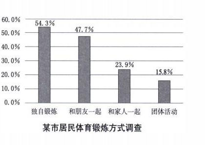

yy-2021-01
📄 原文 · 完整保留，点击展开/收起▾
Read the following text.Choose the Best word(s) for each numbered blank and mark A,B,C or D on the ANSWER SHEET. (10 points)
It’s not difficult to set targets for staff. It is much harder, __1__ , to understand their negative consequences. Most work-related behaviors have multiple components. __2__ one and the others become distorted.
Travel on a London bus and you’ll __3__ see how this works with drivers.Watch people get on and show their tickets.Are they carefully inspected? Never. Do people get on without paying? Of course! Are there inspectors to __4__ that people have paid? Possibly, but very few.And people who run for the bus? They are __5__ . How about jumping lights? Buses do so almost as frequently as cyclists.
Why? Because the target is __6__ . People complained that buses were late and infrequent. __7__ , the number of buses and bus lanes were increased,and drivers were __8__ or punished according to the time they took. And drivers hit these targets. But they __9__ hit cyclists. If the target was changed to __10__ , you would have more inspectors and more sensitive pricing. If the criterion changed to safety, you would get more __11__ drivers who obeyed traffic laws. But both these criteria would be at the expense of time.
There is another __12__ : people became immensely inventive in hitting targets. Have you __13__ that you can leave on a flight an hour late but still arrive on time? Tailwinds? Of course not! Airlines have simply changed the time a __14__ is meant to take.A one-hour flight is now billed as a two-hour flight.
The __15__ of the story is simple. Most jobs are multidimensional, with multiple criteria. Choose one criterion and you may well __16__ others.Everything can be done faster and made cheaper, but there is a __17__ . Setting targets can and does have unforeseen negative consequences.
This is not an argument against target-setting. But it is an argument for exploring consequences first.All good targets should have multiple criteria __18__ critical factors such as time, money, quality and customer feedback.The trick is not only to __19__ just one or even two dimensions of the objective, but also to understand how to help people better __20__ the objective.
第 1 题 · 本题位置已在原文中高亮（完形空位 / 新题型段落），请结合原文选出正确选项
答案：B
本题讲解：2021 完形第 1 空 · 两句之间的衔接词——not difficult 与 much harder 的方向判定
答案：B（however 然而）。
第 0 步：先立机制——空 1 是句间插入语，先判两句的语义方向
It’s not difficult to set targets for staff. It is much harder, __1__, to understand their negative consequences.
空 1 不是句子成分，而是插在 It is much harder 后面的衔接性插入语，唯一职责是把前后两句的关系挑明。前句说“给员工设定目标不难”，空格句说“认识到这些目标的负面影响难得多”——两句谈的是同一件事（目标设定），但难易方向完全相反：容易 ↔ 难。
方向相反，衔接词就必须是转折/对比类，however（然而）作为插入语正好完成这一反向对照。判方向、再选词，是句间衔接题的固定次序。
第 1 步：定位原文
It’s not difficult to set targets for staff. It is much harder, __1__, to understand their negative consequences.
空 1 位于第二句主语之后，作插入语；对照面是第一句的 not difficult。
第 2 步：找证据——not difficult ↔ much harder 的反向对照
两句的话题都是“目标设定”，评价却是反的：设定容易（not difficult）vs 理解负面影响难（much harder）。however 插入后，整句读作“然而，认识到这些目标的负面影响要难得多”，转折顺理成章。
第 3 步：逐项排除
| 选项 | 词义 | 判定 | 理由与典型误解 |
|---|---|---|---|
| A therefore | 因此 | ✗ 排除 | therefore 表因果（因此）。但“理解负面影响难”并不是“设定目标不难”导致的结果——两句是对照，不存在“因 → 果”链。（典型误解：看到“设定目标”就以为后句是其“后果”，把对照关系错读成因果。） |
| B however | 然而 | ✓ 当选 | however（然而）挑明 not difficult ↔ much harder 的语义反差；插入语位置正是 however 的典型用法，方向判定通过。 |
| C again | 再一次 | ✗ 排除 | again 表“事件再次发生”或“状态回到原处”（You’ll soon feel well again）。①②句间既没有再次发生的事件，也没有两个相同的状态或地点，“再一次”无从谈起。 |
| D moreover | 此外 | ✗ 排除 | moreover 表递进（此外），引出同方向的补充论证。递进要求后句顺着前句说（容易 → 更容易），而本句方向相反（容易 → 难），递进不成立。（典型误解：看到空格句仍在谈“目标”就当成补充说明；递进的内核是方向一致，此处 easy→hard 是反向，只能转折。） |
代入后的完整句义：It is much harder, however, to understand their negative consequences.（然而，认识到这些目标的负面影响要难得多。）
预判追问
- 为什么 D（moreover）语法上也通？：moreover 修饰整个句子没有语法障碍，但它的语义预设是“顺着上一条再补一条同向信息”；本句恰恰是反向对照，递进词会让逻辑自相矛盾。方向判定永远先于搭配手感。
易错点
- 误选 D（moreover）：把“继续谈目标”等同于“递进补充”。递进要求前后同向（好→更好、难→更难），此处是 easy→hard 的反向，只能选转折。
记忆锚点：插入语衔接词先做方向判定——not difficult ↔ much harder 反向 ⇒ however；递进（moreover）要求同向，因果（therefore）必须有“因→果”链。
yy-2021-02
📄 原文 · 完整保留，点击展开/收起▾
Read the following text.Choose the Best word(s) for each numbered blank and mark A,B,C or D on the ANSWER SHEET. (10 points)
It’s not difficult to set targets for staff. It is much harder, __1__ , to understand their negative consequences. Most work-related behaviors have multiple components. __2__ one and the others become distorted.
Travel on a London bus and you’ll __3__ see how this works with drivers.Watch people get on and show their tickets.Are they carefully inspected? Never. Do people get on without paying? Of course! Are there inspectors to __4__ that people have paid? Possibly, but very few.And people who run for the bus? They are __5__ . How about jumping lights? Buses do so almost as frequently as cyclists.
Why? Because the target is __6__ . People complained that buses were late and infrequent. __7__ , the number of buses and bus lanes were increased,and drivers were __8__ or punished according to the time they took. And drivers hit these targets. But they __9__ hit cyclists. If the target was changed to __10__ , you would have more inspectors and more sensitive pricing. If the criterion changed to safety, you would get more __11__ drivers who obeyed traffic laws. But both these criteria would be at the expense of time.
There is another __12__ : people became immensely inventive in hitting targets. Have you __13__ that you can leave on a flight an hour late but still arrive on time? Tailwinds? Of course not! Airlines have simply changed the time a __14__ is meant to take.A one-hour flight is now billed as a two-hour flight.
The __15__ of the story is simple. Most jobs are multidimensional, with multiple criteria. Choose one criterion and you may well __16__ others.Everything can be done faster and made cheaper, but there is a __17__ . Setting targets can and does have unforeseen negative consequences.
This is not an argument against target-setting. But it is an argument for exploring consequences first.All good targets should have multiple criteria __18__ critical factors such as time, money, quality and customer feedback.The trick is not only to __19__ just one or even two dimensions of the objective, but also to understand how to help people better __20__ the objective.
第 2 题 · 本题位置已在原文中高亮（完形空位 / 新题型段落），请结合原文选出正确选项
答案：A
本题讲解：2021 完形第 2 空 · 哪个动词能触发“其余要素被扭曲”
答案：A（Emphasize 重视；强调）。
第 0 步：先立机制——无关联词 = 顺承；and 暗藏因果
Most work-related behaviors have multiple components. __2__ one and the others become distorted.
③④句与①②句之间没有任何显性关联词，属于顺承：④句在具体演示①②句“目标设定带来负面影响”是如何发生的。句内还藏着一层因果——__ one and the others become distorted：对“某一个要素”做某个动作，其余要素就扭曲变形。
能触发这个后果的动作，必须紧扣全文主题“设定目标”：设定目标的本质就是挑出一个要素重点对待。Emphasize（重视）= to give special importance to sth，“重视其中一个”即“将它立为目标”，因果链就此闭合。
第 1 步：定位原文
Most work-related behaviors have multiple components. __2__ one and the others become distorted.
空 2 是祈使句的谓语动词，宾语是 one（多个要素中的一个），and 之后是它引发的后果。
第 2 步：找证据——“重视一个 ⇒ 其余扭曲”与首句 set targets 呼应
首句 set targets（设定目标）已经点题：目标就是被挑出来重点对待的那个要素。代入 Emphasize one and the others become distorted——重视其中一个，其余就会变形走样，正是首段“顾此失彼”机制的浓缩。
第 3 步：逐项排除
| 选项 | 词义 | 判定 | 理由与典型误解 |
|---|---|---|---|
| A Emphasize | 重视；强调 | ✓ 当选 | Emphasize（重视）= 把一个要素立为目标，“重视一个 ⇒ 其余扭曲”顺承首段负面影响，and 的因果被激活。 |
| B Identify | 确认；找出 | ✗ 排除 | Identify（确认；找出）。multiple components 是客观存在、已知的显现要素，不需要“找出”；而且“找出一个”与“其余扭曲”之间没有因果关联。（典型误解：觉得“要素先要被识别出来才能谈重视”；但③句已交代要素是客观存在的（have multiple components），不存在“尚未识别”的问题。） |
| C Assess | 评定；评估 | ✗ 排除 | Assess（评定；评估）。assess 的对象是人与事的性质、质量，不是“构成成分 one”；评估动作本身也不会让其余要素变形。（典型误解：把“评估要素”当成常见管理动作；但 assess 处不了“设定目标”这个主题——只有“重视（立为目标）”才能触发顾此失彼。） |
| D Explain | 解释；说明 | ✗ 排除 | Explain（解释）。explain 面向复杂难解的事物，而 one 已是分解后不难理解的一个要素；“解释一个”同样触发不了后果。 |
代入后的完整句义：Emphasize one and the others become distorted.（重视其中一个，其余的就会扭曲变形。）
预判追问
- “重视”为什么强到能让其他要素“扭曲”？：因为组织资源与考核都跟着重点走：一个要素被立为目标后，人力、激励、注意力全部倾斜，未被选中的要素自然被挤压变形——这正是后文公交例子的运行机制。
易错点
- 误选 C（Assess）：觉得“评估一个要素”是标准管理动作。但 assess 的宾语是性质与质量，且评估不产生“其余扭曲”的后果；动词题先问“这个动作能不能触发 and 后面的结果”。
记忆锚点：无关联词 = 顺承；Emphasize one = 把一个要素立为目标；and 暗藏因果：重视一个 ⇒ 其余 distorted。
yy-2021-03
📄 原文 · 完整保留，点击展开/收起▾
Read the following text.Choose the Best word(s) for each numbered blank and mark A,B,C or D on the ANSWER SHEET. (10 points)
It’s not difficult to set targets for staff. It is much harder, __1__ , to understand their negative consequences. Most work-related behaviors have multiple components. __2__ one and the others become distorted.
Travel on a London bus and you’ll __3__ see how this works with drivers.Watch people get on and show their tickets.Are they carefully inspected? Never. Do people get on without paying? Of course! Are there inspectors to __4__ that people have paid? Possibly, but very few.And people who run for the bus? They are __5__ . How about jumping lights? Buses do so almost as frequently as cyclists.
Why? Because the target is __6__ . People complained that buses were late and infrequent. __7__ , the number of buses and bus lanes were increased,and drivers were __8__ or punished according to the time they took. And drivers hit these targets. But they __9__ hit cyclists. If the target was changed to __10__ , you would have more inspectors and more sensitive pricing. If the criterion changed to safety, you would get more __11__ drivers who obeyed traffic laws. But both these criteria would be at the expense of time.
There is another __12__ : people became immensely inventive in hitting targets. Have you __13__ that you can leave on a flight an hour late but still arrive on time? Tailwinds? Of course not! Airlines have simply changed the time a __14__ is meant to take.A one-hour flight is now billed as a two-hour flight.
The __15__ of the story is simple. Most jobs are multidimensional, with multiple criteria. Choose one criterion and you may well __16__ others.Everything can be done faster and made cheaper, but there is a __17__ . Setting targets can and does have unforeseen negative consequences.
This is not an argument against target-setting. But it is an argument for exploring consequences first.All good targets should have multiple criteria __18__ critical factors such as time, money, quality and customer feedback.The trick is not only to __19__ just one or even two dimensions of the objective, but also to understand how to help people better __20__ the objective.
第 3 题 · 本题位置已在原文中高亮（完形空位 / 新题型段落），请结合原文选出正确选项
答案：D
本题讲解：2021 完形第 3 空 · see 在这里是“看”还是“明白”——副词的裁判
答案：D（quickly 迅速地）。
第 0 步：先立机制——例证过渡句：坐一趟车就能“明白”
Travel on a London bus and you’ll __3__ see how this works with drivers.
本句是从抽象论点转向实例的过渡句：上文刚说“理解目标设定的负面影响很难”，紧接着说“坐一趟伦敦公交，你就 __ 能明白这在司机身上是如何发生的”。Travel... and you’ll... 是“只要……就会……”的条件句式。
关键在 see 的词义：它在此不是“用眼睛看”，而是“明白、理解”（see = understand）。坐一趟车就能明白，突出的正是这个例子的说服力——直接、迅速。副词的裁判是 see 的这个词义：修饰“理解的速度” ⇒ quickly（很快就能明白）。
第 1 步：定位原文
Travel on a London bus and you’ll __3__ see how this works with drivers.
空 3 是修饰 see 的副词；see 的宾语是 how this works（这件事如何发生），指向“理解”，而非视觉动作。
第 2 步：找证据——下文的连环问答印证：例子让人一看就懂
Are they carefully inspected? Never. Do people get on without paying? Of course! ... Buses do so almost as frequently as cyclists.
下文用一串自问自答（查票吗？从不。逃票？当然有！闯红灯？家常便饭！）把抽象机制演成直观场景——这正是“坐一趟就能 quickly 明白”的兑现。nearly（差一点才明白）会削弱例子效力，curiously / eagerly（好奇地/热切地）则把“理解”误当成“张望”。
第 3 步：逐项排除
| 选项 | 词义 | 判定 | 理由与典型误解 |
|---|---|---|---|
| A nearly | 几乎 | ✗ 排除 | nearly 表程度，nearly see = “差一点才明白”，暗示理解不彻底；与例子“让读者一坐车就懂”的服务目的相反。 |
| B curiously | 好奇地 | ✗ 排除 | curiously（好奇地）把 see 当成“张望”来修饰，捏造了“乘客好奇地看”的心理；此处 see 是思维上的“理解”，不接好奇心副词。（典型误解：被“在公交车上”的场景带偏，以为 see 是“看”这个动作，顺手配了个心理副词。） |
| C eagerly | 热切地 | ✗ 排除 | eagerly（热切地）同样把“理解”误读成视觉动作或欲望；eagerly see 不成立。（典型误解：同 B 的思路，觉得“兴致勃勃地观察”；先给 see 定词义（understand），再选副词就不会跑偏。） |
| D quickly | 迅速地 | ✓ 当选 | quickly（迅速地）修饰“明白”的速度：一趟车下来就懂，紧扣例子直观、有说服力的作用。 |
代入后的完整句义：Travel on a London bus and you’ll quickly see how this works with drivers.（只要坐一趟伦敦公交，你很快就能明白这是如何发生在司机身上的。）
预判追问
- 为什么 see 不可能是“看见”？：宾语是 how this works——一种机制、一个道理。看见的宾语应是人或物，“看见道理”不合语义；see + how/that 从句 = 明白、理解，是常见用法。
易错点
- 误选 B / C（curiously / eagerly）：被公交场景带偏，把 see 理解成“观看”。副词题第一步永远是确认被修饰动词在本句的词义。
记忆锚点：Travel... and you’ll quickly see = 例证过渡句；see 接 how 从句 = 明白；修饰“理解”用 quickly，不接好奇心副词。
yy-2021-04
📄 原文 · 完整保留，点击展开/收起▾
Read the following text.Choose the Best word(s) for each numbered blank and mark A,B,C or D on the ANSWER SHEET. (10 points)
It’s not difficult to set targets for staff. It is much harder, __1__ , to understand their negative consequences. Most work-related behaviors have multiple components. __2__ one and the others become distorted.
Travel on a London bus and you’ll __3__ see how this works with drivers.Watch people get on and show their tickets.Are they carefully inspected? Never. Do people get on without paying? Of course! Are there inspectors to __4__ that people have paid? Possibly, but very few.And people who run for the bus? They are __5__ . How about jumping lights? Buses do so almost as frequently as cyclists.
Why? Because the target is __6__ . People complained that buses were late and infrequent. __7__ , the number of buses and bus lanes were increased,and drivers were __8__ or punished according to the time they took. And drivers hit these targets. But they __9__ hit cyclists. If the target was changed to __10__ , you would have more inspectors and more sensitive pricing. If the criterion changed to safety, you would get more __11__ drivers who obeyed traffic laws. But both these criteria would be at the expense of time.
There is another __12__ : people became immensely inventive in hitting targets. Have you __13__ that you can leave on a flight an hour late but still arrive on time? Tailwinds? Of course not! Airlines have simply changed the time a __14__ is meant to take.A one-hour flight is now billed as a two-hour flight.
The __15__ of the story is simple. Most jobs are multidimensional, with multiple criteria. Choose one criterion and you may well __16__ others.Everything can be done faster and made cheaper, but there is a __17__ . Setting targets can and does have unforeseen negative consequences.
This is not an argument against target-setting. But it is an argument for exploring consequences first.All good targets should have multiple criteria __18__ critical factors such as time, money, quality and customer feedback.The trick is not only to __19__ just one or even two dimensions of the objective, but also to understand how to help people better __20__ the objective.
第 4 题 · 本题位置已在原文中高亮（完形空位 / 新题型段落），请结合原文选出正确选项
答案：C
本题讲解：2021 完形第 4 空 · 主语是检票员，宾语是“乘客已购票”——职责决定动词
答案：C（check 核查；核实）。
第 0 步：先立机制——动词题先核两件事：主语谁、宾语什么性质
Are there inspectors to __4__ that people have paid?
句内机制一目了然：主语 inspectors（检票员），不定式表目的，宾语从句 that people have paid（乘客已经购票这一情况）。检票员的职责用常识即可锁定——核查乘客是否买票。
check = to find out if sth is true（查明、核实），恰好对应“核实人们是否已付款”。选动词前先核主语（检票员，不是乘客）与宾语（待核实的情况，不是票据本身），再对照职责。
第 1 步：定位原文
Are there inspectors to __4__ that people have paid?
空 4 是 inspectors 的目的状语中的动词；that 从句内容是“人们已经付了钱”这一待核实的情况。
第 2 步：找证据——前文问答链锁定职责：查票的人太少，才有人逃票
Are they carefully inspected? Never. Do people get on without paying? Of course!
上文刚说完“无人仔细查票、逃票成风”，本句顺势追问“有没有检票员来 __ 大家是否买过票”——语义上必须填回“查、核”这个动作，check 与上下文严丝合缝。
第 3 步：逐项排除
| 选项 | 词义 | 判定 | 理由与典型误解 |
|---|---|---|---|
| A claim | 宣称；索要 | ✗ 排除 | claim 表“索要”时宾语应是费用、利益（如 claim unemployment benefit 申领失业救济）；接“人们已付款”这一情况，语义无法搭配。 |
| B prove | 证明 | ✗ 排除 | prove 是“用证据证明属实”——能证明自己付了钱的是乘客本人，不是检票员；主体错位。（典型误解：看到 that 从句与 prove 搭配自然，就顺着语感选；忽略了 prove 的主体应是拿证据的乘客。） |
| C check | 核查；核实 | ✓ 当选 | check（核查）与检票员的职责对应：核实乘客是否购票。 |
| D recall | 回想起 | ✗ 排除 | recall 接宾语从句 = “回想起某事”；能回想起自己付过钱的只有乘客本人，检票员无法“想起”他人的行为。（典型误解：忽略主语是 inspectors；“回想”这个心理动作只能发生在当事人身上。） |
代入后的完整句义：Are there inspectors to check that people have paid?（有没有检票员来核查人们是否买过票？）
预判追问
- prove 和 check 都是“验证”，差别在哪？：check 是去查明情况（可发生在任何核实者身上），prove 是拿证据使某事成立（由当事方完成）。检票员只能“查明你买没买票”，无法替你“证明你买过票”。
易错点
- 误选 B（prove）：that 从句语法通顺就选。动词题必须核对主语与宾语从句的性质——prove 的证据在乘客手里，不在检票员手里。
记忆锚点：inspectors 的职责 = check that...（核实是否…）；prove / recall 的主体应是乘客本人。
yy-2021-05
📄 原文 · 完整保留，点击展开/收起▾
Read the following text.Choose the Best word(s) for each numbered blank and mark A,B,C or D on the ANSWER SHEET. (10 points)
It’s not difficult to set targets for staff. It is much harder, __1__ , to understand their negative consequences. Most work-related behaviors have multiple components. __2__ one and the others become distorted.
Travel on a London bus and you’ll __3__ see how this works with drivers.Watch people get on and show their tickets.Are they carefully inspected? Never. Do people get on without paying? Of course! Are there inspectors to __4__ that people have paid? Possibly, but very few.And people who run for the bus? They are __5__ . How about jumping lights? Buses do so almost as frequently as cyclists.
Why? Because the target is __6__ . People complained that buses were late and infrequent. __7__ , the number of buses and bus lanes were increased,and drivers were __8__ or punished according to the time they took. And drivers hit these targets. But they __9__ hit cyclists. If the target was changed to __10__ , you would have more inspectors and more sensitive pricing. If the criterion changed to safety, you would get more __11__ drivers who obeyed traffic laws. But both these criteria would be at the expense of time.
There is another __12__ : people became immensely inventive in hitting targets. Have you __13__ that you can leave on a flight an hour late but still arrive on time? Tailwinds? Of course not! Airlines have simply changed the time a __14__ is meant to take.A one-hour flight is now billed as a two-hour flight.
The __15__ of the story is simple. Most jobs are multidimensional, with multiple criteria. Choose one criterion and you may well __16__ others.Everything can be done faster and made cheaper, but there is a __17__ . Setting targets can and does have unforeseen negative consequences.
This is not an argument against target-setting. But it is an argument for exploring consequences first.All good targets should have multiple criteria __18__ critical factors such as time, money, quality and customer feedback.The trick is not only to __19__ just one or even two dimensions of the objective, but also to understand how to help people better __20__ the objective.
第 5 题 · 本题位置已在原文中高亮（完形空位 / 新题型段落），请结合原文选出正确选项
答案：B
本题讲解：2021 完形第 5 空 · 问答链定语境：这条线是“无人管”，不是“人际冲突”
答案：B（ignored 被忽视）。
第 0 步：先立机制——一连串问—答共享同一条语境线
Are they carefully inspected? Never. Do people get on without paying? Of course! ... And people who run for the bus? They are __5__.
本段用一连串“问—答”展示公交的“无人管”：查票吗？从不；逃票吗？当然；检票员？极少。这一问延续同一条线：追赶公交的人呢？他们被____。
语境需要的是“司机 / 公交系统对他们视而不见”这一态度——ignored（佯装未见、不予理睬）。答案必须顺着问答链的既有走向走，而不是另起一条“人际冲突”的线。
第 1 步：定位原文
And people who run for the bus? They are __5__.
空 5 是被动语态的表语，动作发出者是司机 / 公交系统；主语是追赶公交的乘客。
第 2 步：找证据——第四段“抱怨晚点”佐证：司机赶时间，顾不上等追赶的人
People complained that buses were late and infrequent.
后文交代背景：人们抱怨公交车晚点、班次少，司机按行程时间受奖惩——为抢准点，司机自然不管还在跑着追车的人。ignored 与这条因果线完全一致。
第 3 步：逐项排除
| 选项 | 词义 | 判定 | 理由与典型误解 |
|---|---|---|---|
| A threatened | 被威胁 | ✗ 排除 | threatened（被威胁）利用“赶车的人会遇到麻烦”的常规思维设障；全段没有任何“谁威胁谁”的人际冲突描写。 |
| B ignored | 被忽视 | ✓ 当选 | ignored（被忽视）与“不查票、无人管”的语境同频，也与司机只顾准点的行为逻辑一致。 |
| C mocked | 被嘲笑 | ✗ 排除 | mocked（被嘲笑）同样需要“旁观者”存在，原文没有；主题是“忽视”，不是“嘲弄”。（典型误解：脑补了“其他乘客嘲笑追赶者”的画面，原文并无旁观者视角。） |
| D blamed | 被责怪 | ✗ 排除 | blamed（被责怪）需要归因逻辑（谁的错）；文中不存在这一关系。（典型误解：脑补了“迟到怪乘客”的归因，而上下文只谈司机赶点、无人维持秩序。） |
代入后的完整句义：And people who run for the bus? They are ignored.（那些跑着追赶公交的人呢？没人理会。）
预判追问
- 为什么不是司机“讨厌”他们？：本文批判的是目标（准点）对行为的扭曲：司机眼里只有时间。无视乘客不是情绪问题，而是“目标单一、其他要素被牺牲”的表现，所以选“忽视”而非任何情绪类动词。
易错点
- 误选 C / D（mocked / blamed）：脑补原文不存在的路人反应。完形问答链里每个答案都要顺着同一条语境线走——这条线是“无人管”，不是“人际冲突”。
记忆锚点：问—答链定语境：Never / Of course / very few ⇒ 态度词 = ignored；司机赶点 ⇒ 赶车人被无视。
yy-2021-06
📄 原文 · 完整保留，点击展开/收起▾
Read the following text.Choose the Best word(s) for each numbered blank and mark A,B,C or D on the ANSWER SHEET. (10 points)
It’s not difficult to set targets for staff. It is much harder, __1__ , to understand their negative consequences. Most work-related behaviors have multiple components. __2__ one and the others become distorted.
Travel on a London bus and you’ll __3__ see how this works with drivers.Watch people get on and show their tickets.Are they carefully inspected? Never. Do people get on without paying? Of course! Are there inspectors to __4__ that people have paid? Possibly, but very few.And people who run for the bus? They are __5__ . How about jumping lights? Buses do so almost as frequently as cyclists.
Why? Because the target is __6__ . People complained that buses were late and infrequent. __7__ , the number of buses and bus lanes were increased,and drivers were __8__ or punished according to the time they took. And drivers hit these targets. But they __9__ hit cyclists. If the target was changed to __10__ , you would have more inspectors and more sensitive pricing. If the criterion changed to safety, you would get more __11__ drivers who obeyed traffic laws. But both these criteria would be at the expense of time.
There is another __12__ : people became immensely inventive in hitting targets. Have you __13__ that you can leave on a flight an hour late but still arrive on time? Tailwinds? Of course not! Airlines have simply changed the time a __14__ is meant to take.A one-hour flight is now billed as a two-hour flight.
The __15__ of the story is simple. Most jobs are multidimensional, with multiple criteria. Choose one criterion and you may well __16__ others.Everything can be done faster and made cheaper, but there is a __17__ . Setting targets can and does have unforeseen negative consequences.
This is not an argument against target-setting. But it is an argument for exploring consequences first.All good targets should have multiple criteria __18__ critical factors such as time, money, quality and customer feedback.The trick is not only to __19__ just one or even two dimensions of the objective, but also to understand how to help people better __20__ the objective.
第 6 题 · 本题位置已在原文中高亮（完形空位 / 新题型段落），请结合原文选出正确选项
答案：A
本题讲解：2021 完形第 6 空 · 自问自答的答案藏在下文证据里
答案：A（punctuality 准时；守时）。
第 0 步：先立机制——一个目标必须同时解释上下文全部反常现象
Why? Because the target is __6__.
Why? Because... 是自问自答：什么样的目标能同时解释上文三件事——不查票、无视赶车人、频繁闯红灯？再看下文的证据：人们抱怨“晚点、班次少”；司机“根据行程所用时间”受奖惩。
所有证据都指向同一个方向：这个目标与时间 / 准点有关。punctuality（准时）= the quality of being on time，一个词解释全部现象。
第 1 步：定位原文
Why? Because the target is __6__.
空 6 是系动词 is 后的表语名词，即公交运营被设定的那个“目标”。
第 2 步：找证据——奖惩标尺是 time ⇒ 目标 = 准点
...drivers were rewarded or punished according to the time they took.
司机按“行程所用时间”受奖惩、增加车与专用道是为提速、抱怨的内容是“晚点”——三条证据互锁，反推出目标就是 punctuality。
第 3 步：逐项排除
| 选项 | 词义 | 判定 | 理由与典型误解 |
|---|---|---|---|
| A punctuality | 准时；守时 | ✓ 当选 | punctuality（准时）同时解释“闯红灯抢时间”“按用时奖惩”“抱怨晚点”三个证据。 |
| B hospitality | 殷勤好客 | ✗ 排除 | hospitality（好客）与“对赶车人视而不见”正好相反，方向反了。 |
| C competition | 竞争 | ✗ 排除 | competition（竞争）需要“司机之间争抢”的关系，上下文没有这一环。 |
| D innovation | 创新 | ✗ 排除 | innovation（创新）由“增加公交车和专用道”捏造而来；那些措施的目的是保速度保班次，与“创新”无关。（典型误解：看到“增加车辆、新增专用道”就联想到“创新举措”；只贴一句的词当不了答案。） |
代入后的完整句义：Why? Because the target is punctuality.（为什么？因为目标是准点。）
预判追问
- 名词题的“证据互锁”怎么用？：把上下文每个现象列出来（不查票、无视赶车人、闯红灯、按用时奖惩），候选名词必须能同时解释全部现象；只解释其中一条的（如 innovation 对应“增加车道”）都淘汰。
易错点
- 误选 D（innovation）：把“新增公交与专用道”误读为“创新管理”。这些手段全是围绕“提速保准点”展开的，与“新方法、新思想”无关。
记忆锚点：Why? Because... 自问自答，答案藏在下文证据里：time 奖惩标尺 ⇒ punctuality。
yy-2021-07
📄 原文 · 完整保留，点击展开/收起▾
Read the following text.Choose the Best word(s) for each numbered blank and mark A,B,C or D on the ANSWER SHEET. (10 points)
It’s not difficult to set targets for staff. It is much harder, __1__ , to understand their negative consequences. Most work-related behaviors have multiple components. __2__ one and the others become distorted.
Travel on a London bus and you’ll __3__ see how this works with drivers.Watch people get on and show their tickets.Are they carefully inspected? Never. Do people get on without paying? Of course! Are there inspectors to __4__ that people have paid? Possibly, but very few.And people who run for the bus? They are __5__ . How about jumping lights? Buses do so almost as frequently as cyclists.
Why? Because the target is __6__ . People complained that buses were late and infrequent. __7__ , the number of buses and bus lanes were increased,and drivers were __8__ or punished according to the time they took. And drivers hit these targets. But they __9__ hit cyclists. If the target was changed to __10__ , you would have more inspectors and more sensitive pricing. If the criterion changed to safety, you would get more __11__ drivers who obeyed traffic laws. But both these criteria would be at the expense of time.
There is another __12__ : people became immensely inventive in hitting targets. Have you __13__ that you can leave on a flight an hour late but still arrive on time? Tailwinds? Of course not! Airlines have simply changed the time a __14__ is meant to take.A one-hour flight is now billed as a two-hour flight.
The __15__ of the story is simple. Most jobs are multidimensional, with multiple criteria. Choose one criterion and you may well __16__ others.Everything can be done faster and made cheaper, but there is a __17__ . Setting targets can and does have unforeseen negative consequences.
This is not an argument against target-setting. But it is an argument for exploring consequences first.All good targets should have multiple criteria __18__ critical factors such as time, money, quality and customer feedback.The trick is not only to __19__ just one or even two dimensions of the objective, but also to understand how to help people better __20__ the objective.
第 7 题 · 本题位置已在原文中高亮（完形空位 / 新题型段落），请结合原文选出正确选项
答案：B
本题讲解：2021 完形第 7 空 · 抱怨是因，措施是果——回应还是反转
答案：B（So 所以）。
第 0 步：先立机制——句首连接词先问：后句是前句的回应还是反转
People complained that buses were late and infrequent. __7__, the number of buses and bus lanes were increased, and drivers were rewarded or punished according to the time they took.
前句“乘客抱怨公交车晚点、班次少”是因；空格句“增加公交与专用道数量、按行程时间奖惩司机”是针对抱怨的对策——果。先有问题，后有整改，这是标准的因果链 ⇒ So（所以）。
句首连接词的选择只需回答一个问题：后句是前句的回应（因果），追加（递进），还是反转（转折）？措施回应抱怨，不是反转也不是追加。
第 1 步：定位原文
People complained that buses were late and infrequent. __7__, the number of buses and bus lanes were increased...
空 7 位于句首，衔接“抱怨”与“整改措施”两个句群。
第 2 步：找证据——措施逐项回应抱怨：late → 提速，infrequent → 增车
把措施与抱怨逐项对齐：增加公交专用道回应“晚点”；增加公交车数量回应“班次少”；按时间奖惩司机回应“运营效率”。因果对应严丝合缝，So 顺理成章。
第 3 步：逐项排除
| 选项 | 词义 | 判定 | 理由与典型误解 |
|---|---|---|---|
| A Yet | 然而 | ✗ 排除 | Yet 句首表转折，引出“令人意外的事实”；整改措施对抱怨而言毫无意外，不存在反转。（典型误解：把“抱怨之后措施来了”误判为意外反转；判断句首连接词先问“回应还是反转”。） |
| B So | 所以 | ✓ 当选 | So（所以）标出“抱怨 → 措施”的因果方向。 |
| C Besides | 此外 | ✗ 排除 | Besides 表递进补充；措施不是对抱怨的追加信息，而是对它的回应。（典型误解：把“措施”当成抱怨之外的补充话题；递进要求前后并列同向，这里是一因一果。） |
| D Still | 不过；仍然 | ✗ 排除 | Still 句首与 Yet 同类，表让步转折（尽管如此……）；此处没有让步语义。 |
代入后的完整句义：So, the number of buses and bus lanes were increased, and drivers were rewarded or punished according to the time they took.（于是，公交车和公交车道的数量增加了，司机也按行程用时获得奖励或受到惩罚。）
预判追问
- So 和 Therefore 有区别吗？：两者都表因果，本题只需“因果”这一语义方向即可锁定 So：选项里唯一表因果的衔接词。Therefore 表“由前文推出结论”，So 更口语化地引出由此采取的行动。
易错点
- 误选 A（Yet）：预设“抱怨了也没用”式的反转。原文中措施恰恰有效回应了抱怨（司机 hit these targets），没有任何转折语义。
记忆锚点：抱怨(因) → 措施(果) ⇒ So；Yet / Still = 转折，需要“令人惊讶”的反差才成立；Besides = 递进追加。
yy-2021-08
📄 原文 · 完整保留，点击展开/收起▾
Read the following text.Choose the Best word(s) for each numbered blank and mark A,B,C or D on the ANSWER SHEET. (10 points)
It’s not difficult to set targets for staff. It is much harder, __1__ , to understand their negative consequences. Most work-related behaviors have multiple components. __2__ one and the others become distorted.
Travel on a London bus and you’ll __3__ see how this works with drivers.Watch people get on and show their tickets.Are they carefully inspected? Never. Do people get on without paying? Of course! Are there inspectors to __4__ that people have paid? Possibly, but very few.And people who run for the bus? They are __5__ . How about jumping lights? Buses do so almost as frequently as cyclists.
Why? Because the target is __6__ . People complained that buses were late and infrequent. __7__ , the number of buses and bus lanes were increased,and drivers were __8__ or punished according to the time they took. And drivers hit these targets. But they __9__ hit cyclists. If the target was changed to __10__ , you would have more inspectors and more sensitive pricing. If the criterion changed to safety, you would get more __11__ drivers who obeyed traffic laws. But both these criteria would be at the expense of time.
There is another __12__ : people became immensely inventive in hitting targets. Have you __13__ that you can leave on a flight an hour late but still arrive on time? Tailwinds? Of course not! Airlines have simply changed the time a __14__ is meant to take.A one-hour flight is now billed as a two-hour flight.
The __15__ of the story is simple. Most jobs are multidimensional, with multiple criteria. Choose one criterion and you may well __16__ others.Everything can be done faster and made cheaper, but there is a __17__ . Setting targets can and does have unforeseen negative consequences.
This is not an argument against target-setting. But it is an argument for exploring consequences first.All good targets should have multiple criteria __18__ critical factors such as time, money, quality and customer feedback.The trick is not only to __19__ just one or even two dimensions of the objective, but also to understand how to help people better __20__ the objective.
第 8 题 · 本题位置已在原文中高亮（完形空位 / 新题型段落），请结合原文选出正确选项
答案：C
本题讲解：2021 完形第 8 空 · or 的并列要求两端同维度、方向相对
答案：C（rewarded 奖励）。
第 0 步：先立机制——punished 的对面只能是什么
...drivers were __8__ or punished according to the time they took.
句内机制：or 连接两个并列对立的管理手段——__ or punished（受 __ 或受罚），标尺是“行程所用时间”。A or B 结构里，A 与 B 必须是同一维度上方向相对的两端。
再问一层：为什么要设这套机制？为了激励司机 hit these targets（实现准点目标）。能让司机拼命赶点的，必然是“准时受奖、误点受罚”的组合——奖励（rewarded）与惩罚（punished）构成“萝卜加大棒”。
第 1 步：定位原文
...drivers were __8__ or punished according to the time they took.
空 8 与 punished 由 or 并列，被动语态；施动者是公交公司，依据是行程用时。
第 2 步：找证据——下句 And drivers hit these targets 兑现激励效果
And drivers hit these targets.
司机们确实实现了目标——这正是奖惩并用的效果证明。若只有惩罚没有奖励，句子读作“被雇用/被培训或受罚”，激励逻辑就断了。
第 3 步：逐项排除
| 选项 | 词义 | 判定 | 理由与典型误解 |
|---|---|---|---|
| A hired | 雇用 | ✗ 排除 | hired（雇用）不是与惩罚相对的激励手段，hired or punished 不构成同一维度的两端对立。 |
| B trained | 训练 | ✗ 排除 | trained（训练）与 punished 不在同一对照轴上；也回答不了“司机为何愿意赶点”。（典型误解：看到“管理手段”就选培训；or 的并列要求两端同维度且方向相对——惩罚的对面只能是奖励。） |
| C rewarded | 奖励 | ✓ 当选 | rewarded（奖励）与 punished 组成奖惩两端，精准解释“按用时管理”的激励逻辑。 |
| D grouped | 分组 | ✗ 排除 | grouped（分组）与受罚并列无语义逻辑，且与“按时间奖惩”无关。 |
代入后的完整句义：...drivers were rewarded or punished according to the time they took.（司机们根据行程所用时间获得奖励或受到惩罚。）
预判追问
- or 并列的判定口诀是什么？：A or B = 同维度、可二选一的两端。奖 / 惩、给 / 取、立 / 废都是天然对子；雇用、培训、分组与“惩罚”不在同一条轴上，代入后 or 的逻辑就塌了。
易错点
- 误选 B（trained）：把“培训或惩罚”当成两种并列管理手段。or 的两端必须方向相对， punished 需要的 paired counterpart 是奖励。
记忆锚点：or 并列 = 找对立面；punished 的对面 = rewarded；奖惩并用 ⇒ 司机 hit targets。
yy-2021-09
📄 原文 · 完整保留，点击展开/收起▾
Read the following text.Choose the Best word(s) for each numbered blank and mark A,B,C or D on the ANSWER SHEET. (10 points)
It’s not difficult to set targets for staff. It is much harder, __1__ , to understand their negative consequences. Most work-related behaviors have multiple components. __2__ one and the others become distorted.
Travel on a London bus and you’ll __3__ see how this works with drivers.Watch people get on and show their tickets.Are they carefully inspected? Never. Do people get on without paying? Of course! Are there inspectors to __4__ that people have paid? Possibly, but very few.And people who run for the bus? They are __5__ . How about jumping lights? Buses do so almost as frequently as cyclists.
Why? Because the target is __6__ . People complained that buses were late and infrequent. __7__ , the number of buses and bus lanes were increased,and drivers were __8__ or punished according to the time they took. And drivers hit these targets. But they __9__ hit cyclists. If the target was changed to __10__ , you would have more inspectors and more sensitive pricing. If the criterion changed to safety, you would get more __11__ drivers who obeyed traffic laws. But both these criteria would be at the expense of time.
There is another __12__ : people became immensely inventive in hitting targets. Have you __13__ that you can leave on a flight an hour late but still arrive on time? Tailwinds? Of course not! Airlines have simply changed the time a __14__ is meant to take.A one-hour flight is now billed as a two-hour flight.
The __15__ of the story is simple. Most jobs are multidimensional, with multiple criteria. Choose one criterion and you may well __16__ others.Everything can be done faster and made cheaper, but there is a __17__ . Setting targets can and does have unforeseen negative consequences.
This is not an argument against target-setting. But it is an argument for exploring consequences first.All good targets should have multiple criteria __18__ critical factors such as time, money, quality and customer feedback.The trick is not only to __19__ just one or even two dimensions of the objective, but also to understand how to help people better __20__ the objective.
第 9 题 · 本题位置已在原文中高亮（完形空位 / 新题型段落），请结合原文选出正确选项
答案：D
本题讲解：2021 完形第 9 空 · hit 一词双关：实现目标，也撞上骑车人
答案：D（also 也）。
第 0 步：先立机制——But 转折后，空格词要表达“坏结果也有份”
And drivers hit these targets. But they __9__ hit cyclists.
两句共享同一个动词 hit，词义却不同：hit the targets = 实现目标；hit cyclists = 撞上骑车人。But 转折后句义是：目标确实实现了，但骑车人也撞了。
空格词要表达的是：撞人与实现目标同为设定准时目标的结果——一好一坏两个结果并存 ⇒ also（也）。这个“也”字还带着“意外”的意味：谁也没料到，实现目标的同时撞了人。
第 1 步：定位原文
And drivers hit these targets. But they __9__ hit cyclists.
空 9 位于 But 分句中，修饰动词 hit（撞）；hit 在前句是“实现”，此处是“撞上”。
第 2 步：找证据——上文“闯红灯与骑车人一样频繁” ⇒ 撞人是常态后果
Buses do so almost as frequently as cyclists.
⑫句说公交车闯红灯的频率几乎和骑自行车的人一样高——撞人不是偶发事件，而是“准点目标”的常态化副作用。also 把这个副作用与“实现目标”并列为同一因果链的两个输出。
第 3 步：逐项排除
| 选项 | 词义 | 判定 | 理由与典型误解 |
|---|---|---|---|
| A only | 只不过 | ✗ 排除 | only（只不过）会把撞人弱化成“小事一桩”，暗示“没什么大不了”；与全文“目标带来严重负面影响”的批判语境方向相反。（典型误解：把 only 读成“只是撞了骑车人而已”；only 的轻视语气恰好与文章立场相反。） |
| B rather | 有几分；相反 | ✗ 排除 | rather 与动词连用表“有几分”，多接 think / hope 类心理动词（I rather thought...）；此处是客观后果，没有心理活动。 |
| C once | 曾经；一次 | ✗ 排除 | once（曾经 / 一次）把撞人定格为一次性事件；但撞人像闯红灯一样频繁，不是过去某一次。（典型误解：忽略上文 as frequently as 的频率证据，把常态副作用误当成一次性事件。） |
| D also | 也 | ✓ 当选 | also（也）把“实现目标”与“撞人”并列为同一目标的两个结果，凸显负面影响。 |
代入后的完整句义：But they also hit cyclists.（但他们也撞到了骑车的人。）
预判追问
- 为什么 also 能传递“意外”？：also 暗示“除了已知的，还有这个”——实现准时目标之外，居然还有撞人这种副产品。这与首段“负面影响难以理解（harder to understand）”遥相呼应。
易错点
- 误选 A（only）：以为“只撞到骑车人”语气轻、更像转折。方向反了——文章要强调的是负面影响的严重，不是轻描淡写。
记忆锚点：hit 双关：hit the targets 实现 / hit cyclists 撞上；But + also = 两个结果并存，坏结果“也有份”。
yy-2021-10
📄 原文 · 完整保留，点击展开/收起▾
Read the following text.Choose the Best word(s) for each numbered blank and mark A,B,C or D on the ANSWER SHEET. (10 points)
It’s not difficult to set targets for staff. It is much harder, __1__ , to understand their negative consequences. Most work-related behaviors have multiple components. __2__ one and the others become distorted.
Travel on a London bus and you’ll __3__ see how this works with drivers.Watch people get on and show their tickets.Are they carefully inspected? Never. Do people get on without paying? Of course! Are there inspectors to __4__ that people have paid? Possibly, but very few.And people who run for the bus? They are __5__ . How about jumping lights? Buses do so almost as frequently as cyclists.
Why? Because the target is __6__ . People complained that buses were late and infrequent. __7__ , the number of buses and bus lanes were increased,and drivers were __8__ or punished according to the time they took. And drivers hit these targets. But they __9__ hit cyclists. If the target was changed to __10__ , you would have more inspectors and more sensitive pricing. If the criterion changed to safety, you would get more __11__ drivers who obeyed traffic laws. But both these criteria would be at the expense of time.
There is another __12__ : people became immensely inventive in hitting targets. Have you __13__ that you can leave on a flight an hour late but still arrive on time? Tailwinds? Of course not! Airlines have simply changed the time a __14__ is meant to take.A one-hour flight is now billed as a two-hour flight.
The __15__ of the story is simple. Most jobs are multidimensional, with multiple criteria. Choose one criterion and you may well __16__ others.Everything can be done faster and made cheaper, but there is a __17__ . Setting targets can and does have unforeseen negative consequences.
This is not an argument against target-setting. But it is an argument for exploring consequences first.All good targets should have multiple criteria __18__ critical factors such as time, money, quality and customer feedback.The trick is not only to __19__ just one or even two dimensions of the objective, but also to understand how to help people better __20__ the objective.
第 10 题 · 本题位置已在原文中高亮（完形空位 / 新题型段落），请结合原文选出正确选项
答案：B
本题讲解：2021 完形第 10 空 · 条件句名词题：用主句结果反推目标
答案：B（revenue 收益；收入）。
第 0 步：先立机制——If 目标 = X → 结果反推 X
If the target was changed to __10__, you would have more inspectors and more sensitive pricing.
这是一个“条件—结果”句：目标换成 __，结果就出现“更多检票员 + 定价更灵活”。两个结果指向同一件事——管钱：检票员查的是票款，定价管的是票价收入。
倒过来推：把什么立为目标，公司才会加派检票员、调整定价？只有收益（revenue）。这一句与下一句构成对照实验：目标 = 收益 → 查票定价；目标 = 安全 → 司机谨慎。
第 1 步：定位原文
If the target was changed to __10__, you would have more inspectors and more sensitive pricing.
空 10 是 was changed to 的介词宾语，即被替换的新目标；主句给出两个结果。
第 2 步：找证据——与下句“安全 → 谨慎司机”成对照
If the criterion changed to safety, you would get more cautious drivers who obeyed traffic laws.
两支条件句对称排布：收益目标对应“检票员 + 定价”，安全目标对应“谨慎司机 + 守规”。本句的两个结果都是“钱”的动作，锁定 revenue。
第 3 步：逐项排除
| 选项 | 词义 | 判定 | 理由与典型误解 |
|---|---|---|---|
| A comfort | 舒适 | ✗ 排除 | comfort（舒适）是“公共交通应舒适”的常规联想，但舒适推不出检票员和定价。 |
| B revenue | 收益；收入 | ✓ 当选 | revenue（收益）与“查票款、调票价”直接对应。 |
| C efficiency | 效率 | ✗ 排除 | efficiency（效率）是“目标”高频词，但与“查票、定价”没有直接对应关系。（典型误解：觉得“效率”是企业管理最正的目标词；条件句名词题的裁判是主句结果，不是词的高频度。） |
| D security | 安全 | ✗ 排除 | security（安全）对应的是下文的 cautious drivers，放到本句属张冠李戴。 |
代入后的完整句义：If the target was changed to revenue, you would have more inspectors and more sensitive pricing.（如果目标变成了收益，就会有更多检票员，定价也会更灵活。）
预判追问
- sensitive pricing 为什么指向“钱”？：sensitive 此处指“灵活、精细”——定价更精细意味着票价随供需浮动，这是典型的增收手段；它和“加派检票员防逃票”一起构成“向收入看齐”的证据链。
易错点
- 误选 C（efficiency）：条件句名词题只认主句结果——“检票员 + 定价”只认“钱”，效率给不出这两个结果。
记忆锚点：If 目标 = X → 结果反推 X：inspectors + pricing ⇒ revenue；安全 ⇄ cautious drivers 成对出现。
yy-2021-11
📄 原文 · 完整保留，点击展开/收起▾
Read the following text.Choose the Best word(s) for each numbered blank and mark A,B,C or D on the ANSWER SHEET. (10 points)
It’s not difficult to set targets for staff. It is much harder, __1__ , to understand their negative consequences. Most work-related behaviors have multiple components. __2__ one and the others become distorted.
Travel on a London bus and you’ll __3__ see how this works with drivers.Watch people get on and show their tickets.Are they carefully inspected? Never. Do people get on without paying? Of course! Are there inspectors to __4__ that people have paid? Possibly, but very few.And people who run for the bus? They are __5__ . How about jumping lights? Buses do so almost as frequently as cyclists.
Why? Because the target is __6__ . People complained that buses were late and infrequent. __7__ , the number of buses and bus lanes were increased,and drivers were __8__ or punished according to the time they took. And drivers hit these targets. But they __9__ hit cyclists. If the target was changed to __10__ , you would have more inspectors and more sensitive pricing. If the criterion changed to safety, you would get more __11__ drivers who obeyed traffic laws. But both these criteria would be at the expense of time.
There is another __12__ : people became immensely inventive in hitting targets. Have you __13__ that you can leave on a flight an hour late but still arrive on time? Tailwinds? Of course not! Airlines have simply changed the time a __14__ is meant to take.A one-hour flight is now billed as a two-hour flight.
The __15__ of the story is simple. Most jobs are multidimensional, with multiple criteria. Choose one criterion and you may well __16__ others.Everything can be done faster and made cheaper, but there is a __17__ . Setting targets can and does have unforeseen negative consequences.
This is not an argument against target-setting. But it is an argument for exploring consequences first.All good targets should have multiple criteria __18__ critical factors such as time, money, quality and customer feedback.The trick is not only to __19__ just one or even two dimensions of the objective, but also to understand how to help people better __20__ the objective.
第 11 题 · 本题位置已在原文中高亮（完形空位 / 新题型段落），请结合原文选出正确选项
答案：C
本题讲解：2021 完形第 11 空 · 双重锁定：条件句的 safety + 定语从句的 obeyed traffic laws
答案：C（cautious 谨慎的）。
第 0 步：先立机制——形容词必须同时满足两条线索
If the criterion changed to safety, you would get more __11__ drivers who obeyed traffic laws.
两条线索同时锁定答案：其一，条件句给出标准 = safety（安全）；其二，定语从句给出行为 = who obeyed traffic laws（遵守交规）。同时满足“安全导向 + 守规”的司机特质只有一个：cautious（谨慎的）。
cautious = being careful to avoid danger（小心谨慎以避免危险）：正因为谨慎，才会遵守交规、避免事故——语义从条件句到定语从句一路贯通。
第 1 步：定位原文
If the criterion changed to safety, you would get more __11__ drivers who obeyed traffic laws.
空 11 是 drivers 的前置定语；drivers 又被 who obeyed traffic laws 限定。
第 2 步：找证据——与上句对称：目标决定人的行为特征
上一句以收益为目标 → 加检票员；本句以安全为目标 → 司机的特征必须体现“安全”。cautious 与 safety 是直接的同义呼应。
第 3 步：逐项排除
| 选项 | 词义 | 判定 | 理由与典型误解 |
|---|---|---|---|
| A friendly | 友好的 | ✗ 排除 | friendly（友好的）是“公交司机职业形象”的联想，但友好与“安全 / 守规”没有必然关联。 |
| B quiet | 文静的 | ✗ 排除 | quiet（文静的）是性格描述，与交通安全语境脱节。 |
| C cautious | 谨慎的 | ✓ 当选 | cautious（谨慎的）同时满足条件句（安全）与定语从句（守规）。 |
| D diligent | 勤勉的 | ✗ 排除 | diligent（勤勉的）是工作态度，不等于遵守交规；勤勉的司机也可能开快车。（典型误解：拿正面品格词挨个试；形容词题要抓两条锁定线，diligent 过不了“能推出守规”这一关。） |
代入后的完整句义：If the criterion changed to safety, you would get more cautious drivers who obeyed traffic laws.（如果标准变成了安全，就会有更多谨慎的司机，他们会遵守交通法规。）
预判追问
- 为什么“谨慎”能推出“守规”？：谨慎的定义是“为避免危险而小心”——闯红灯、超速都是危险源；避免危险的直接行为就是遵守交规。friendly、quiet、diligent 都推不出这个行为链条。
易错点
- 误选 D（diligent）：正面词挨个套。形容词题抓“条件句语义 + 从句行为”双线校验，一条不过就淘汰。
记忆锚点：safety ⇄ cautious；who obeyed traffic laws 是第二重锁定；品格词要过“能否推出守规”这一关。
yy-2021-12
📄 原文 · 完整保留，点击展开/收起▾
Read the following text.Choose the Best word(s) for each numbered blank and mark A,B,C or D on the ANSWER SHEET. (10 points)
It’s not difficult to set targets for staff. It is much harder, __1__ , to understand their negative consequences. Most work-related behaviors have multiple components. __2__ one and the others become distorted.
Travel on a London bus and you’ll __3__ see how this works with drivers.Watch people get on and show their tickets.Are they carefully inspected? Never. Do people get on without paying? Of course! Are there inspectors to __4__ that people have paid? Possibly, but very few.And people who run for the bus? They are __5__ . How about jumping lights? Buses do so almost as frequently as cyclists.
Why? Because the target is __6__ . People complained that buses were late and infrequent. __7__ , the number of buses and bus lanes were increased,and drivers were __8__ or punished according to the time they took. And drivers hit these targets. But they __9__ hit cyclists. If the target was changed to __10__ , you would have more inspectors and more sensitive pricing. If the criterion changed to safety, you would get more __11__ drivers who obeyed traffic laws. But both these criteria would be at the expense of time.
There is another __12__ : people became immensely inventive in hitting targets. Have you __13__ that you can leave on a flight an hour late but still arrive on time? Tailwinds? Of course not! Airlines have simply changed the time a __14__ is meant to take.A one-hour flight is now billed as a two-hour flight.
The __15__ of the story is simple. Most jobs are multidimensional, with multiple criteria. Choose one criterion and you may well __16__ others.Everything can be done faster and made cheaper, but there is a __17__ . Setting targets can and does have unforeseen negative consequences.
This is not an argument against target-setting. But it is an argument for exploring consequences first.All good targets should have multiple criteria __18__ critical factors such as time, money, quality and customer feedback.The trick is not only to __19__ just one or even two dimensions of the objective, but also to understand how to help people better __20__ the objective.
第 12 题 · 本题位置已在原文中高亮（完形空位 / 新题型段落），请结合原文选出正确选项
答案：B
本题讲解：2021 完形第 12 空 · another 的并列对象与冒号后的贬义内容
答案：B（problem 问题）。
第 0 步：先立机制——another = 与上文并列的另一个“负面影响”
There is another __12__: people became immensely inventive in hitting targets.
段际机制：another 表示与上文并列——上文已讲目标设定的负面影响之一（重视一个要素，其余被扭曲）；本段冒号后讲另一负面影响：为达目标不择手段。immensely inventive（极其有创意）是反话正说：为准时“发明”了延长时刻表这种操作。
“还有另一个 __” + 冒号后的投机操作 + 段末“一小时航程号称两小时”的贬义色彩 → 空格必须是负面名词 ⇒ problem（问题）。
第 1 步：定位原文
There is another __12__: people became immensely inventive in hitting targets.
空 12 是 another 修饰的名词，冒号后是对它的具体展开；本段末句提供褒贬依据。
第 2 步：找证据——段末证据：一小时航程号称两小时
A one-hour flight is now billed as a two-hour flight.
billed（宣传为）暗示航空公司公然把一小时航程包装成两小时——为了准时这一目标不惜改写时刻表。这种“创意”显然是贬义的问题，而非什么“目的”或“原则”。
第 3 步：逐项排除
| 选项 | 词义 | 判定 | 理由与典型误解 |
|---|---|---|---|
| A purpose | 目的 | ✗ 排除 | purpose（目的）中性偏正面；another purpose 语法通顺，但冒号后的“不择手段”与段末贬义容不下中性词。（典型误解：被全文高频词 target 带节奏，another purpose 读起来顺口；段际并列 + 冒号后内容定褒贬，才是名词题的裁判。） |
| B problem | 问题 | ✓ 当选 | problem（问题）与上文“负面影响”并列，接住贬义内容。 |
| C prejudice | 偏见 | ✗ 排除 | prejudice（偏见）虽是负面词，但指“负面态度 / 看法”，接不上“人们变得极具创意”这一事态变化。（典型误解：看到“负面”就选 prejudice；prejudice 的对象是“人或群体的看法”，不是“事态变化”。） |
| D policy | 政策；原则 | ✗ 排除 | policy（政策 / 原则）是中性词，且“行事原则”是常态描述，与“已然发生的投机操作”不符。 |
代入后的完整句义：There is another problem: people became immensely inventive in hitting targets.（还有另外一个问题：人们在达成目标方面变得极其有创意。）
预判追问
- 为什么说 inventive 是“反话正说”？：inventive 本是褒义的“有创造力”，但此处“创造”的是修改航程时长这类规避目标的手段——表面夸奖，实则讽刺“为达标不择手段”，所以冒号前必须用贬义的 problem。
易错点
- 误选 A（purpose）：被 target 话题惯性带入。名词题先判褒贬：another 连接的是与上文并列的另一条负面影响。
记忆锚点：another __ = 与上文并列的另一个负面问题；immensely inventive 反话正说 = 不择手段。
yy-2021-13
📄 原文 · 完整保留，点击展开/收起▾
Read the following text.Choose the Best word(s) for each numbered blank and mark A,B,C or D on the ANSWER SHEET. (10 points)
It’s not difficult to set targets for staff. It is much harder, __1__ , to understand their negative consequences. Most work-related behaviors have multiple components. __2__ one and the others become distorted.
Travel on a London bus and you’ll __3__ see how this works with drivers.Watch people get on and show their tickets.Are they carefully inspected? Never. Do people get on without paying? Of course! Are there inspectors to __4__ that people have paid? Possibly, but very few.And people who run for the bus? They are __5__ . How about jumping lights? Buses do so almost as frequently as cyclists.
Why? Because the target is __6__ . People complained that buses were late and infrequent. __7__ , the number of buses and bus lanes were increased,and drivers were __8__ or punished according to the time they took. And drivers hit these targets. But they __9__ hit cyclists. If the target was changed to __10__ , you would have more inspectors and more sensitive pricing. If the criterion changed to safety, you would get more __11__ drivers who obeyed traffic laws. But both these criteria would be at the expense of time.
There is another __12__ : people became immensely inventive in hitting targets. Have you __13__ that you can leave on a flight an hour late but still arrive on time? Tailwinds? Of course not! Airlines have simply changed the time a __14__ is meant to take.A one-hour flight is now billed as a two-hour flight.
The __15__ of the story is simple. Most jobs are multidimensional, with multiple criteria. Choose one criterion and you may well __16__ others.Everything can be done faster and made cheaper, but there is a __17__ . Setting targets can and does have unforeseen negative consequences.
This is not an argument against target-setting. But it is an argument for exploring consequences first.All good targets should have multiple criteria __18__ critical factors such as time, money, quality and customer feedback.The trick is not only to __19__ just one or even two dimensions of the objective, but also to understand how to help people better __20__ the objective.
第 13 题 · 本题位置已在原文中高亮（完形空位 / 新题型段落），请结合原文选出正确选项
答案：D
本题讲解：2021 完形第 13 空 · 谁对谁：主语 you 与宾语从句同主体
答案：D（noticed 注意到）。
第 0 步：先立机制——report / reveal 需要“另一个主体”，此处只有 you
Have you __13__ that you can leave on a flight an hour late but still arrive on time?
句内机制：主语 you（乘客 / 读者），宾语从句描述一个反常现象——晚起飞一小时还能准点到达。注意主句与从句的主语都是 you：这是同一主体对现象的留意与察觉 ⇒ noticed（注意到）。
report（报告）与 reveal（揭示）的语义方向都是“知情者 → 他人”，需要另一个主体存在；此处只有你一个人，你无法“向别人报告/揭示”一个只发生在自己身上的观察。
第 1 步：定位原文
Have you __13__ that you can leave on a flight an hour late but still arrive on time?
空 13 是现在完成时疑问句的实义动词；that 从句内容是“乘客可亲身观察到的反常现象”。
第 2 步：找证据——下文设问 Tailwinds? Of course not! 引出真因
Tailwinds? Of course not! Airlines have simply changed the time a trip is meant to take.
③④句先否定“顺风”这一直觉解释，⑤句给出真因（航空公司改了航程时长）——整段写的正是乘客注意到反常现象、进而追问原因的过程，noticed 是这条叙事线的起点。
第 3 步：逐项排除
| 选项 | 词义 | 判定 | 理由与典型误解 |
|---|---|---|---|
| A reported | 报告 | ✗ 排除 | reported（报告）是“向上级或公众告知信息”，需要报告对象；此处只有 you 一个主体。 |
| B revealed | 揭示 | ✗ 排除 | revealed（揭示）是“使他人得知不为人知之事”，方向是“我告诉你”；you 无法向自己揭示。（典型误解：觉得“揭示现象”高大上；reveal 的语义方向是“知情者 → 他人”，先核对谁对谁再选词。） |
| C admitted | 承认 | ✗ 排除 | admitted（承认）承认的是自己做过的不好 / 尴尬之事；而“晚点仍准点”的操作方是航空公司，不是乘客 you。（典型误解：忽略了“承认”的前提是当事人做过什么；晚点仍准点的操作者是航空公司，不是乘客。） |
| D noticed | 注意到 | ✓ 当选 | noticed（注意到）= 同一主体留意到反常现象，主语、从句同主体，语义闭合。 |
代入后的完整句义：Have you noticed that you can leave on a flight an hour late but still arrive on time?（你有没有注意到：你的航班可以晚一小时起飞，却仍能准点到达？）
预判追问
- noticed 和 realized 有何差别？：realized 强调“想明白”，noticed 强调“留意到”。本段从“留意现象”走向“追问原因”，叙述起点是观察而非顿悟，noticed 更贴；且选项中也没有 realized。
易错点
- 误选 B（revealed）：只看动词与 that 从句的搭配，不看语义方向。report / reveal / admit 都要求第二个主体或“做错事”的前提，本题只有一个 you。
记忆锚点：Have you noticed that...（你有没有注意到…）= 引出反常现象的固定句式；report / reveal 需要“另一个主体”。
yy-2021-14
📄 原文 · 完整保留，点击展开/收起▾
Read the following text.Choose the Best word(s) for each numbered blank and mark A,B,C or D on the ANSWER SHEET. (10 points)
It’s not difficult to set targets for staff. It is much harder, __1__ , to understand their negative consequences. Most work-related behaviors have multiple components. __2__ one and the others become distorted.
Travel on a London bus and you’ll __3__ see how this works with drivers.Watch people get on and show their tickets.Are they carefully inspected? Never. Do people get on without paying? Of course! Are there inspectors to __4__ that people have paid? Possibly, but very few.And people who run for the bus? They are __5__ . How about jumping lights? Buses do so almost as frequently as cyclists.
Why? Because the target is __6__ . People complained that buses were late and infrequent. __7__ , the number of buses and bus lanes were increased,and drivers were __8__ or punished according to the time they took. And drivers hit these targets. But they __9__ hit cyclists. If the target was changed to __10__ , you would have more inspectors and more sensitive pricing. If the criterion changed to safety, you would get more __11__ drivers who obeyed traffic laws. But both these criteria would be at the expense of time.
There is another __12__ : people became immensely inventive in hitting targets. Have you __13__ that you can leave on a flight an hour late but still arrive on time? Tailwinds? Of course not! Airlines have simply changed the time a __14__ is meant to take.A one-hour flight is now billed as a two-hour flight.
The __15__ of the story is simple. Most jobs are multidimensional, with multiple criteria. Choose one criterion and you may well __16__ others.Everything can be done faster and made cheaper, but there is a __17__ . Setting targets can and does have unforeseen negative consequences.
This is not an argument against target-setting. But it is an argument for exploring consequences first.All good targets should have multiple criteria __18__ critical factors such as time, money, quality and customer feedback.The trick is not only to __19__ just one or even two dimensions of the objective, but also to understand how to help people better __20__ the objective.
第 14 题 · 本题位置已在原文中高亮（完形空位 / 新题型段落），请结合原文选出正确选项
答案：B
本题讲解：2021 完形第 14 空 · 证据句在下：one-hour flight → two-hour flight
答案：B（trip 出行；旅程）。
第 0 步：先立机制——被改写的是“整个航程”的总时长
Airlines have simply changed the time a __14__ is meant to take. A one-hour flight is now billed as a two-hour flight.
空格句说“航空公司改了 __ 所需的时间”，紧接着的后句是它的具体化：one-hour flight → two-hour flight——改的是整个航程的总时长，不是旅程中某一段的时间。
空格词必须与 flight（航程）同指一个整体 ⇒ trip（出行、旅程）。“a trip is meant to take” = 一次出行按计划需要耗费的时间。
第 1 步：定位原文
Airlines have simply changed the time a __14__ is meant to take. A one-hour flight is now billed as a two-hour flight.
空 14 是定语从句 a __ is meant to take 的主语，指“被改写时长的对象”。
第 2 步：找证据——one-hour → two-hour：改的是总量，不是某一段
A one-hour flight is now billed as a two-hour flight.
后句直接给出改写对象：一小时的航程号称两小时。总时长变长，准时目标不费吹灰之力就能达成——这正是“不择手段”的具体操作。
第 3 步：逐项排除
| 选项 | 词义 | 判定 | 理由与典型误解 |
|---|---|---|---|
| A break | 间歇；经停 | ✗ 排除 | break（间歇 / 经停）只是旅程中的一段；改的不是“经停时间”，而是全程总时长。 |
| B trip | 出行；旅程 | ✓ 当选 | trip（旅程）与 flight 同指整个航程，总时长改写得通。 |
| C departure | 起程；班次 | ✗ 排除 | departure（起飞 / 班次）的 departure time 是时间点，与 is meant to take（需要耗费的时间段）无法搭配；改的也不是起飞时刻。（典型误解：departure time 是高频搭配造成的语感误导；抓后句 one-hour → two-hour 的证据，改写对象是总量。） |
| D transfer | 中转 | ✗ 排除 | transfer（中转）只是旅程的一环，同样框不住“全程总时长”。 |
代入后的完整句义：Airlines have simply changed the time a trip is meant to take.（航空公司只是修改了一下旅程按计划所需的时间。）
预判追问
- 为什么 departure 一定不行？：一是语义：改写的是总时长，不是起飞时刻；二是搭配：a departure is meant to take 不成立——take 耗时的主语应是“一段行程”，departure 是时间点，点没有“长短”。
易错点
- 误选 C（departure）：被 departure time 的搭配手感带偏。名词题先看证据句改写的是什么（全程时长），再核搭配（time 点 vs 时间段）。
记忆锚点：证据句在下：one-hour flight → two-hour flight ⇒ 改的是全程时长 ⇒ trip；departure 是时间点，接不了 take（耗时）。
yy-2021-15
📄 原文 · 完整保留，点击展开/收起▾
Read the following text.Choose the Best word(s) for each numbered blank and mark A,B,C or D on the ANSWER SHEET. (10 points)
It’s not difficult to set targets for staff. It is much harder, __1__ , to understand their negative consequences. Most work-related behaviors have multiple components. __2__ one and the others become distorted.
Travel on a London bus and you’ll __3__ see how this works with drivers.Watch people get on and show their tickets.Are they carefully inspected? Never. Do people get on without paying? Of course! Are there inspectors to __4__ that people have paid? Possibly, but very few.And people who run for the bus? They are __5__ . How about jumping lights? Buses do so almost as frequently as cyclists.
Why? Because the target is __6__ . People complained that buses were late and infrequent. __7__ , the number of buses and bus lanes were increased,and drivers were __8__ or punished according to the time they took. And drivers hit these targets. But they __9__ hit cyclists. If the target was changed to __10__ , you would have more inspectors and more sensitive pricing. If the criterion changed to safety, you would get more __11__ drivers who obeyed traffic laws. But both these criteria would be at the expense of time.
There is another __12__ : people became immensely inventive in hitting targets. Have you __13__ that you can leave on a flight an hour late but still arrive on time? Tailwinds? Of course not! Airlines have simply changed the time a __14__ is meant to take.A one-hour flight is now billed as a two-hour flight.
The __15__ of the story is simple. Most jobs are multidimensional, with multiple criteria. Choose one criterion and you may well __16__ others.Everything can be done faster and made cheaper, but there is a __17__ . Setting targets can and does have unforeseen negative consequences.
This is not an argument against target-setting. But it is an argument for exploring consequences first.All good targets should have multiple criteria __18__ critical factors such as time, money, quality and customer feedback.The trick is not only to __19__ just one or even two dimensions of the objective, but also to understand how to help people better __20__ the objective.
第 15 题 · 本题位置已在原文中高亮（完形空位 / 新题型段落），请结合原文选出正确选项
答案：A
本题讲解：2021 完形第 15 空 · the story 回指前文，“寓意”之后必跟道理句
答案：A（moral 寓意）。
第 0 步：先立机制——故事收束处：名词要能接住下文的规律总结
The __15__ of the story is simple. Most jobs are multidimensional, with multiple criteria.
the story 回指前文公交、航空的“故事”；空格句是全文的收束，下文立刻给出一段规律性总结——工作都是多维的，挑一个标准就要牺牲其他。
能在“故事之后”承接这种道理的名词是 moral（寓意、教益）= a practical lesson that a story, an event or an experience teaches you。The moral of the story is simple 是地道固定表达：寓意很简单——下面就说这条道理。
第 1 步：定位原文
The __15__ of the story is simple. Most jobs are multidimensional, with multiple criteria.
空 15 是 the story 的 of 短语中心名词；is simple 之后紧跟寓意的内容。
第 2 步：找证据——下文就是“寓意”的内容本身
Most jobs are multidimensional, with multiple criteria. Choose one criterion and you may well sacrifice others.
②③句给出的正是从两个故事提炼的教训：工作多维、选一失其余。“背景 / 风格 / 形式简单”都预示后文该谈背景、风格或形式，而下文谈的全是道理——只有 moral 接得住。
第 3 步：逐项排除
| 选项 | 词义 | 判定 | 理由与典型误解 |
|---|---|---|---|
| A moral | 寓意 | ✓ 当选 | moral（寓意）= 故事教给人的道理，与下文规律总结严丝合缝，且 the moral of the story 是固定表达。 |
| B background | 背景 | ✗ 排除 | background（背景）“简单”预示下文介绍背景；下文却是道理总结，落空。 |
| C style | 风格 | ✗ 排除 | style（风格）“简单”接不上“工作多维”的结论。 |
| D form | 形式 | ✗ 排除 | form（形式）“简单”同样与下文的多维规律无关。（典型误解：the form of the story 搭配感强；名词题看下文讲了什么——下文是“道理”，不是“背景 / 风格 / 形式”。） |
代入后的完整句义：The moral of the story is simple.（这个故事的寓意很简单。）
预判追问
- moral 不是“道德的”这个形容词吗？：moral 兼有形容词（道德的）与名词（寓意）两个词性；the moral of the story 里的 moral 是名词——故事结尾那句话承载的教训，伊索寓言末尾的“寓意：……”用的正是这个名词。
易错点
- 误选 D（form）：只看搭配不看下文。收束句名词的任务是给下文的“道理”命名，背景 / 风格 / 形式都命不了这个名。
记忆锚点：the moral of the story = 故事的寓意（固定表达）；寓意之后必跟“道理句”——下文内容反过来决定空格名词。
yy-2021-16
📄 原文 · 完整保留，点击展开/收起▾
Read the following text.Choose the Best word(s) for each numbered blank and mark A,B,C or D on the ANSWER SHEET. (10 points)
It’s not difficult to set targets for staff. It is much harder, __1__ , to understand their negative consequences. Most work-related behaviors have multiple components. __2__ one and the others become distorted.
Travel on a London bus and you’ll __3__ see how this works with drivers.Watch people get on and show their tickets.Are they carefully inspected? Never. Do people get on without paying? Of course! Are there inspectors to __4__ that people have paid? Possibly, but very few.And people who run for the bus? They are __5__ . How about jumping lights? Buses do so almost as frequently as cyclists.
Why? Because the target is __6__ . People complained that buses were late and infrequent. __7__ , the number of buses and bus lanes were increased,and drivers were __8__ or punished according to the time they took. And drivers hit these targets. But they __9__ hit cyclists. If the target was changed to __10__ , you would have more inspectors and more sensitive pricing. If the criterion changed to safety, you would get more __11__ drivers who obeyed traffic laws. But both these criteria would be at the expense of time.
There is another __12__ : people became immensely inventive in hitting targets. Have you __13__ that you can leave on a flight an hour late but still arrive on time? Tailwinds? Of course not! Airlines have simply changed the time a __14__ is meant to take.A one-hour flight is now billed as a two-hour flight.
The __15__ of the story is simple. Most jobs are multidimensional, with multiple criteria. Choose one criterion and you may well __16__ others.Everything can be done faster and made cheaper, but there is a __17__ . Setting targets can and does have unforeseen negative consequences.
This is not an argument against target-setting. But it is an argument for exploring consequences first.All good targets should have multiple criteria __18__ critical factors such as time, money, quality and customer feedback.The trick is not only to __19__ just one or even two dimensions of the objective, but also to understand how to help people better __20__ the objective.
第 16 题 · 本题位置已在原文中高亮（完形空位 / 新题型段落），请结合原文选出正确选项
答案：C
本题讲解：2021 完形第 16 空 · Choose... and... 的结果：选一个，牺牲其他
答案：C（sacrifice 牺牲；舍弃）。
第 0 步：先立机制——全文机制在此收口：选一失余
Choose one criterion and you may well __16__ others.
Choose... and you may well... 是“条件 → 结果”句式：选一个标准，就很可能____其他。全文机制闭环在此收口——首段说“重视一个，其余 distorted”；公交例说“保准点就牺牲收益与安全”；航空例说“保准时就改写航程时长”。
所有例证的共同后果都是“其他标准受损”，空格词必须是贬义的“舍弃 / 损害” ⇒ sacrifice（牺牲）。它正是 distorted 在结论段的同义升级。
第 1 步：定位原文
Choose one criterion and you may well __16__ others.
空 16 是 may well 后的动词原形，宾语是 others（其他标准）；它是 Choose one 的必然后果。
第 2 步：找证据——首段伏笔：Emphasize one and the others become distorted
Emphasize one and the others become distorted.
首段已预告后果（distorted 扭曲），末段用一个更凝练的动词重述——sacrifice。两词同向：被冷落的要素不是被“解读 / 容忍 / 批评”，而是被牺牲。
第 3 步：逐项排除
| 选项 | 词义 | 判定 | 理由与典型误解 |
|---|---|---|---|
| A interpret | 诠释；解读 | ✗ 排除 | interpret（解读）是中性词，常用结构 interpret A as B；“解读其他标准”与“选一个”构不成因果。 |
| B criticize | 批评 | ✗ 排除 | criticize（批评）虽是贬义方向，但“批评其他标准”不是“选择一个”的结果——批评是态度动作，牺牲才是后果。（典型误解：见到“负面影响”就往“批评”上靠；先问“这个动作是不是‘选一个’的必然后果”——只有 sacrifice 是。） |
| C sacrifice | 牺牲；舍弃 | ✓ 当选 | sacrifice（牺牲）与 distorted 同向，把全文“顾此失彼”收束成一个动词。 |
| D tolerate | 容忍 | ✗ 排除 | tolerate（容忍）暗含宾语是“不喜欢的事”，但“容忍其他标准”同样不是“选一个”的必然后果。（典型误解：把“容忍”当成消极语气的万能词；tolerate 的主语须有意愿，且容忍不等于受损。） |
代入后的完整句义：Choose one criterion and you may well sacrifice others.（选择一个标准，那么就很可能要牺牲其他标准。）
预判追问
- may well 是什么语气？：may well = 很可能、多半会——表示高概率的必然倾向。它把“选一个 ⇒ 牺牲其他”写成普遍规律，与首段 Most work-related behaviors have multiple components 的普遍性表述一致。
易错点
- 误选 B（criticize）：只对上“负面”的褒贬，没对上“后果”的逻辑。criticize 是主动的态度行为，sacrifice 才是“选一个”之后被动发生的代价。
记忆锚点：Choose...and... = 条件 → 结果；选一个 ⇄ 牺牲其他（sacrifice others）；与首段 distorted 遥相呼应。
yy-2021-17
📄 原文 · 完整保留，点击展开/收起▾
Read the following text.Choose the Best word(s) for each numbered blank and mark A,B,C or D on the ANSWER SHEET. (10 points)
It’s not difficult to set targets for staff. It is much harder, __1__ , to understand their negative consequences. Most work-related behaviors have multiple components. __2__ one and the others become distorted.
Travel on a London bus and you’ll __3__ see how this works with drivers.Watch people get on and show their tickets.Are they carefully inspected? Never. Do people get on without paying? Of course! Are there inspectors to __4__ that people have paid? Possibly, but very few.And people who run for the bus? They are __5__ . How about jumping lights? Buses do so almost as frequently as cyclists.
Why? Because the target is __6__ . People complained that buses were late and infrequent. __7__ , the number of buses and bus lanes were increased,and drivers were __8__ or punished according to the time they took. And drivers hit these targets. But they __9__ hit cyclists. If the target was changed to __10__ , you would have more inspectors and more sensitive pricing. If the criterion changed to safety, you would get more __11__ drivers who obeyed traffic laws. But both these criteria would be at the expense of time.
There is another __12__ : people became immensely inventive in hitting targets. Have you __13__ that you can leave on a flight an hour late but still arrive on time? Tailwinds? Of course not! Airlines have simply changed the time a __14__ is meant to take.A one-hour flight is now billed as a two-hour flight.
The __15__ of the story is simple. Most jobs are multidimensional, with multiple criteria. Choose one criterion and you may well __16__ others.Everything can be done faster and made cheaper, but there is a __17__ . Setting targets can and does have unforeseen negative consequences.
This is not an argument against target-setting. But it is an argument for exploring consequences first.All good targets should have multiple criteria __18__ critical factors such as time, money, quality and customer feedback.The trick is not only to __19__ just one or even two dimensions of the objective, but also to understand how to help people better __20__ the objective.
第 17 题 · 本题位置已在原文中高亮（完形空位 / 新题型段落），请结合原文选出正确选项
答案：D
本题讲解：完形第 17 空——「更快、更便宜」的代价
答案：D（cost）。
第 0 步：先立机制——but 划出的「收益 vs 代价」对立
空格坐在一个转折句的正中央：Everything can be done faster and made cheaper, but there is a __17__。转折词 but 前后必须语义对立：前半句说的是「收益」（更快、更便宜），but 之后自然要落到「收益的反面」上，且要能被 “there is a __” 以可数名词承接。再看紧随其后的下一句：Setting targets can and does have unforeseen negative consequences（设定目标确实会带来无法预见的负面后果）。这「负面后果」正是空格词的具体化——空格与下句是「概括 → 展开」的上下义复现关系。
第 1 步：D 对号入座——there is a cost
Choose one criterion and you may well __16__ others. Everything can be done faster and made cheaper, but there is a cost.
「一切都能做得更快、更便宜，但这是有代价的」——cost 与 but 前的「收益」构成标准对立，又被下句 negative consequences 具体化；同时呼应全文主旨：只按单一标准考核，牺牲的就是其余维度。
第 2 步：干扰项归因
- A（task 任务）：与转折脱节——“there is a task” 字面能读，但「更快更便宜，但有一个任务」不成话，也接不上「负面后果」句；误选者只看空格前的名词搭配，没读 but。
- B（secret 秘密）：文中无「隐情」——secret 暗示「藏而不露」，可下句把负面后果摆上了台面；这是被「另有隐情」式直觉带偏。
- C（product 产品）：语境迁移错位——made cheaper 让人联想「产品制造」，但「但有一个产品」与转折无涉。
记忆锚点：but 之后填「反差」——收益（faster / cheaper）对代价（cost）；cost = negative consequences 的概括词。
yy-2021-18
📄 原文 · 完整保留，点击展开/收起▾
Read the following text.Choose the Best word(s) for each numbered blank and mark A,B,C or D on the ANSWER SHEET. (10 points)
It’s not difficult to set targets for staff. It is much harder, __1__ , to understand their negative consequences. Most work-related behaviors have multiple components. __2__ one and the others become distorted.
Travel on a London bus and you’ll __3__ see how this works with drivers.Watch people get on and show their tickets.Are they carefully inspected? Never. Do people get on without paying? Of course! Are there inspectors to __4__ that people have paid? Possibly, but very few.And people who run for the bus? They are __5__ . How about jumping lights? Buses do so almost as frequently as cyclists.
Why? Because the target is __6__ . People complained that buses were late and infrequent. __7__ , the number of buses and bus lanes were increased,and drivers were __8__ or punished according to the time they took. And drivers hit these targets. But they __9__ hit cyclists. If the target was changed to __10__ , you would have more inspectors and more sensitive pricing. If the criterion changed to safety, you would get more __11__ drivers who obeyed traffic laws. But both these criteria would be at the expense of time.
There is another __12__ : people became immensely inventive in hitting targets. Have you __13__ that you can leave on a flight an hour late but still arrive on time? Tailwinds? Of course not! Airlines have simply changed the time a __14__ is meant to take.A one-hour flight is now billed as a two-hour flight.
The __15__ of the story is simple. Most jobs are multidimensional, with multiple criteria. Choose one criterion and you may well __16__ others.Everything can be done faster and made cheaper, but there is a __17__ . Setting targets can and does have unforeseen negative consequences.
This is not an argument against target-setting. But it is an argument for exploring consequences first.All good targets should have multiple criteria __18__ critical factors such as time, money, quality and customer feedback.The trick is not only to __19__ just one or even two dimensions of the objective, but also to understand how to help people better __20__ the objective.
第 18 题 · 本题位置已在原文中高亮（完形空位 / 新题型段落），请结合原文选出正确选项
答案：C
本题讲解：完形第 18 空——「多重标准」与「关键因素」的挂接
答案：C（relating to）。
第 0 步：先立机制——空格的语法岗位：后置定语
All good targets should have multiple criteria __18__ critical factors such as time, money, quality and customer feedback。空格夹在 criteria（标准）与 critical factors（关键因素）两个名词之间，后面还挂着 such as 列举的四个因素——这是典型的「短语动词作后置定语」结构：要填的短语必须把「多重标准」与这些因素挂接起来，构成「关于……的标准」。先判断关系方向：standard / criteria 与 factor 之间是「涉及 / 关联」——标准覆盖这些维度，谁也不「导致」谁、谁也不「需要」谁。
第 1 步：C 对号入座——multiple criteria relating to critical factors
Most jobs are multidimensional, with multiple criteria.
末段点明机制：工作是多维的，所以好目标才需要多重标准。relating to =「与……相关、涉及」：multiple criteria relating to critical factors such as... 读作「涉及时间、金钱、质量与客户反馈等关键因素的多重标准」，语义与语法双双落定。
第 2 步：干扰项归因
- A（leading to 导致）：方向反置——标准是人定的考核尺度，因素是客观维度，不能说标准「导致」这些因素；误选者熟悉因果句式，没核对主宾逻辑。
- B（calling for 需要）：主语错位——calling for 的主语通常是局面、行动或人，「标准」本身不会去「需要」几个客观因素。
- D（accounting for 占比 / 解释）：义项错位——account for 的看家义项是「占（比例）」「解释（原因）」，「标准解释因素」在文中无从谈起。
记忆锚点：criteria relating to factors =「关于……的标准」；leading to 管因果、accounting for 管占比 / 解释、calling for 管需求，三者都接不稳「标准 + 因素」。
yy-2021-19
📄 原文 · 完整保留，点击展开/收起▾
Read the following text.Choose the Best word(s) for each numbered blank and mark A,B,C or D on the ANSWER SHEET. (10 points)
It’s not difficult to set targets for staff. It is much harder, __1__ , to understand their negative consequences. Most work-related behaviors have multiple components. __2__ one and the others become distorted.
Travel on a London bus and you’ll __3__ see how this works with drivers.Watch people get on and show their tickets.Are they carefully inspected? Never. Do people get on without paying? Of course! Are there inspectors to __4__ that people have paid? Possibly, but very few.And people who run for the bus? They are __5__ . How about jumping lights? Buses do so almost as frequently as cyclists.
Why? Because the target is __6__ . People complained that buses were late and infrequent. __7__ , the number of buses and bus lanes were increased,and drivers were __8__ or punished according to the time they took. And drivers hit these targets. But they __9__ hit cyclists. If the target was changed to __10__ , you would have more inspectors and more sensitive pricing. If the criterion changed to safety, you would get more __11__ drivers who obeyed traffic laws. But both these criteria would be at the expense of time.
There is another __12__ : people became immensely inventive in hitting targets. Have you __13__ that you can leave on a flight an hour late but still arrive on time? Tailwinds? Of course not! Airlines have simply changed the time a __14__ is meant to take.A one-hour flight is now billed as a two-hour flight.
The __15__ of the story is simple. Most jobs are multidimensional, with multiple criteria. Choose one criterion and you may well __16__ others.Everything can be done faster and made cheaper, but there is a __17__ . Setting targets can and does have unforeseen negative consequences.
This is not an argument against target-setting. But it is an argument for exploring consequences first.All good targets should have multiple criteria __18__ critical factors such as time, money, quality and customer feedback.The trick is not only to __19__ just one or even two dimensions of the objective, but also to understand how to help people better __20__ the objective.
第 19 题 · 本题位置已在原文中高亮（完形空位 / 新题型段落），请结合原文选出正确选项
答案：A
本题讲解：完形第 19 空——「诀窍」的第一个动作
答案：A（specify）。
第 0 步：先立机制——not only...but also 两侧要与宾语同场成立
The trick is not only to __19__ just one or even two dimensions of the objective, but also to understand how to help people better __20__ the objective。空格动词与 understand 并列于 not only...but also 结构两侧，共享「the objective（目标）」这一话题。主语 trick（诀窍）要求空格说出「设定目标」时的一个动作，其宾语是 dimensions of the objective（目标的维度）——能作用于「维度」的动词，先决条件是有「明确指出 / 列明」一类含义。
第 1 步：A 对号入座——specify one or two dimensions
Most work-related behaviors have multiple components.
All good targets should have multiple criteria __18__ critical factors such as time, money, quality and customer feedback.
首尾两处机制句互相呼应：工作行为是多成分的，好目标要有多重标准。既然维度众多，「把一两个维度列明」正是设定目标时真实发生的动作；just one or even two 的让步口吻也只有在「列明」上才成立。
第 2 步：干扰项归因
- B（predict 预测）：预设「维度尚未出现、需要预言」——维度本就摆在目标里等人界定，不是未来事件；这是把全文「预见负面后果（unforeseen）」的主题词误迁移到本空。
- C（restore 恢复）：前提是某物曾被破坏；文中从未说目标维度受损，「恢复维度」无中生有。
- D（create 创造）：把「目标的维度」当成可造之物——维度是目标固有的构成面，人只能「指出、列明」它，不能「发明」它。
记忆锚点：specify dimensions of the objective = 列明目标的维度；not only...but also 两侧动词要与宾语同场成立：列明维度 ↔ 帮人实现目标。
yy-2021-20
📄 原文 · 完整保留，点击展开/收起▾
Read the following text.Choose the Best word(s) for each numbered blank and mark A,B,C or D on the ANSWER SHEET. (10 points)
It’s not difficult to set targets for staff. It is much harder, __1__ , to understand their negative consequences. Most work-related behaviors have multiple components. __2__ one and the others become distorted.
Travel on a London bus and you’ll __3__ see how this works with drivers.Watch people get on and show their tickets.Are they carefully inspected? Never. Do people get on without paying? Of course! Are there inspectors to __4__ that people have paid? Possibly, but very few.And people who run for the bus? They are __5__ . How about jumping lights? Buses do so almost as frequently as cyclists.
Why? Because the target is __6__ . People complained that buses were late and infrequent. __7__ , the number of buses and bus lanes were increased,and drivers were __8__ or punished according to the time they took. And drivers hit these targets. But they __9__ hit cyclists. If the target was changed to __10__ , you would have more inspectors and more sensitive pricing. If the criterion changed to safety, you would get more __11__ drivers who obeyed traffic laws. But both these criteria would be at the expense of time.
There is another __12__ : people became immensely inventive in hitting targets. Have you __13__ that you can leave on a flight an hour late but still arrive on time? Tailwinds? Of course not! Airlines have simply changed the time a __14__ is meant to take.A one-hour flight is now billed as a two-hour flight.
The __15__ of the story is simple. Most jobs are multidimensional, with multiple criteria. Choose one criterion and you may well __16__ others.Everything can be done faster and made cheaper, but there is a __17__ . Setting targets can and does have unforeseen negative consequences.
This is not an argument against target-setting. But it is an argument for exploring consequences first.All good targets should have multiple criteria __18__ critical factors such as time, money, quality and customer feedback.The trick is not only to __19__ just one or even two dimensions of the objective, but also to understand how to help people better __20__ the objective.
第 20 题 · 本题位置已在原文中高亮（完形空位 / 新题型段落），请结合原文选出正确选项
答案：D
本题讲解：完形第 20 空——尾句收束：帮人「抵达」目标
答案：D（achieve）。
第 0 步：先立机制——尾句要接住全文主线
The trick is not only to specify just one or even two dimensions of the objective, but also to understand how to help people better __20__ the objective。这是全文最后一句，承担收束职能：全文讲「给员工设定目标（set targets for staff）→ 单一标准扭曲行为 → 好目标要多重标准」，尾句的落脚点必然回到「人与目标」的关系——技巧的另一半是「帮助人们更好地 实现 目标」。语法上，help people better __ 中 better 是副词修饰动词，空格填省略 to 的不定式。
第 1 步：D 对号入座——achieve the objective，与 hit these targets 同义复现
And drivers hit these targets.
第二段早已预演过这个动作：司机「达成了（hit）这些指标」。hit 与 achieve 同义复现——全文里「达成」义动词的宾语始终是 targets / objectives 这类「目标」名词。语义（帮人实现目标）、语法（help sb do sth）双双成立。
第 2 步：干扰项归因
- A（modify 修改）：字面通顺但方向反了——全文不是教人「改目标」，而是「目标定得片面会出问题，要学会帮人达成它」；误选源于对尾段 “not an argument against target-setting” 的粗读印象。
- B（review 审查）：「评估」义与「帮助人们更好地____」的赋能语义不搭——帮助指向「让人做成」，不是「让人检查」。
- C（present 呈现）：只覆盖「宣布目标」层面的动作，撑不起 better 的程度递进，也与 hit these targets 的复现线索脱节。
记忆锚点：尾句收束回全文主线——set targets → distort → multi-criteria → help people achieve the objective；hit these targets = achieve these targets。
yy-2021-21
📄 原文 · 完整保留，点击展开/收起▾
Read the following four texts. Answer the questions below each text by choosing A, B, C or D. Mark your answers on the ANSWER SHEET. (40 points)
“Reskilling” is something that sounds like a buzzword but is actually a requirement if we plan to have a future where a lot of would-be workers do not get left behind. We know we are moving into a period where the jobs in demand will change rapidly, as will the requirements of the jobs that remain.Research by the World Economic Forum finds that on average 42 per cent of the“core skills”within job roles will change by 2022.That is a very short timeline.
The question of who should pay for reskilling is a thorny one.For individual companies, the temptation is always to let go of workers whose skills are no longer in demand and replace them with those whose skills are.That does not always happen. AT&T is often given as the gold standard of a company who decided to do a massive reskilling program rather than go with a fire-and-hire strategy.Other companies including Amazon and Disney had also pledged to create their own plans.When the skills mismatch is in the broader economy though, the focus usually turns to government to handle.Efforts in Canada and elsewhere have been arguably languid at best, and have given us a situation where we frequently hear of employers begging for workers, even at times and in regions where unemployment is high.
With the pandemic, unemployment is very high indeed. In February,at 3.5 per cent and 5.5 per cent respectively, unemployment rates in Canada and the United States were at generational lows and worker shortages were everywhere.As of May, those rates had spiked up to 13.3 per cent and 13.7 per cent,and although many worker shortages had disappeared, not all had done so.In the medical field, to take an obvious example, the pandemic meant that there were still clear shortages of doctors, nurses and other medical personnel.
Of course, it is not like you can take an unemployed waiter and train him to be a doctor in a few weeks, no matter who pays for it.But even if you cannot close that gap, maybe you can close others, and doing so would be to the benefit of all concerned.That seems to be the case in Sweden: When forced to furlough 90 per cent of their cabin staff, Scandinavian Airlines decided to start up a short retraining program that reskilled the laid-off workers to support hospital staff.The effort was a collective one and involved other companies as well as a Swedish university.
Research by the World Economic Forum suggests .
答案：B
本题讲解：阅读第 21 题——WEF 研究说明了什么
答案：B（an urgent demand for new job skills）。
第 0 步：先立机制——细节题先钉锚点，再合并句内证据
细节题不扫全文：题干 Research by the World Economic Forum suggests 是现成锚点，全文唯一提到 WEF 的地方在第一段。「研究 suggests 什么」不能只看研究句本身，要把它的上下句一起读：研究句给出事实，前后句给出解释，选项是三句合译后的等价说法。
第 1 步：定位原文 + 同义替换
We know we are moving into a period where the jobs in demand will change rapidly, as will the requirements of the jobs that remain. Research by the World Economic Forum finds that on average 42 per cent of the "core skills" within job roles will change by 2022. That is a very short timeline.
三句连读：岗位需求将快速变化 → 42% 的「核心技能」将在 2022 年前改变 → 时间线很短。「技能即将大变 + 时间紧迫」合译即「对新工作技能的紧迫需求」：suggests = finds；核心技能「改变」→ 需要新技能；very short timeline → urgent。
第 2 步：干扰项归因
- A（an increase in full-time employment）：无中生有——全文谈技能需求变化与失业者再培训，没有任何「全职就业增长」的数据或论断。
- C（a steady growth of job opportunities）：把「变化」偷换成「增长」——原文说 jobs in demand will change rapidly，变的是「哪些技能吃香」，不是岗位数量在涨。
- D（a controversy about the "core skills"）：把「研究对象」错认成「争议话题」——core skills 只是 WEF 研究的对象（42% 将改变），无人对概念本身提出异议。
记忆锚点：细节题三步——题干锚点锁句 → 句内证据合并 → 同义替换对选项；change + short timeline = urgent demand。
yy-2021-22
📄 原文 · 完整保留，点击展开/收起▾
Read the following four texts. Answer the questions below each text by choosing A, B, C or D. Mark your answers on the ANSWER SHEET. (40 points)
“Reskilling” is something that sounds like a buzzword but is actually a requirement if we plan to have a future where a lot of would-be workers do not get left behind. We know we are moving into a period where the jobs in demand will change rapidly, as will the requirements of the jobs that remain.Research by the World Economic Forum finds that on average 42 per cent of the“core skills”within job roles will change by 2022.That is a very short timeline.
The question of who should pay for reskilling is a thorny one.For individual companies, the temptation is always to let go of workers whose skills are no longer in demand and replace them with those whose skills are.That does not always happen. AT&T is often given as the gold standard of a company who decided to do a massive reskilling program rather than go with a fire-and-hire strategy.Other companies including Amazon and Disney had also pledged to create their own plans.When the skills mismatch is in the broader economy though, the focus usually turns to government to handle.Efforts in Canada and elsewhere have been arguably languid at best, and have given us a situation where we frequently hear of employers begging for workers, even at times and in regions where unemployment is high.
With the pandemic, unemployment is very high indeed. In February,at 3.5 per cent and 5.5 per cent respectively, unemployment rates in Canada and the United States were at generational lows and worker shortages were everywhere.As of May, those rates had spiked up to 13.3 per cent and 13.7 per cent,and although many worker shortages had disappeared, not all had done so.In the medical field, to take an obvious example, the pandemic meant that there were still clear shortages of doctors, nurses and other medical personnel.
Of course, it is not like you can take an unemployed waiter and train him to be a doctor in a few weeks, no matter who pays for it.But even if you cannot close that gap, maybe you can close others, and doing so would be to the benefit of all concerned.That seems to be the case in Sweden: When forced to furlough 90 per cent of their cabin staff, Scandinavian Airlines decided to start up a short retraining program that reskilled the laid-off workers to support hospital staff.The effort was a collective one and involved other companies as well as a Swedish university.
AT&T is cited to show .
答案：A
本题讲解：阅读第 22 题——AT&T 例子的论证作用
答案：A（an alternative to the fire-and-hire strategy）。
第 0 步：先立机制——例子题的观点永远在例子前后
cite / show 类题目考的是「例子论证了什么观点」：观点不在例子内部，而在引出例子之前的议论句里。本题的议论句是例子前一句 That does not always happen——它先说公司本能是「辞掉技能过时的员工，再雇新的」（fire-and-hire），再说「并非总是如此」，AT&T 就是被拉来证明「并非总是如此」的案例。
第 1 步：定位原文 + 同义替换
For individual companies, the temptation is always to let go of workers whose skills are no longer in demand and replace them with those whose skills are. That does not always happen. AT&T is often given as the gold standard of a company who decided to do a massive reskilling program rather than go with a fire-and-hire strategy.
decided to do a massive reskilling program rather than go with a fire-and-hire strategy——「而不是」划出两个策略的取舍关系：reskilling 是 fire-and-hire 之外的另一种选择，即 an alternative to the fire-and-hire strategy。
第 2 步：干扰项归因
- B（an immediate need for government support）：话题错位——政府是另一层话题（技能错配上升到整体经济才转向政府）；AT&T 例子讲的是公司自己的选择。
- C（the importance of staff appraisal standards）：无中生有——例子中没有任何员工考核内容。
- D（the characteristics of reskilling programs）：把「例证」误读成「介绍」——例子证明「存在另一种策略」这一论点，不是介绍 reskilling 项目的特点。
记忆锚点：例子题先读例子前一句；rather than 连接的两端互为 alternative。
yy-2021-23
📄 原文 · 完整保留，点击展开/收起▾
Read the following four texts. Answer the questions below each text by choosing A, B, C or D. Mark your answers on the ANSWER SHEET. (40 points)
“Reskilling” is something that sounds like a buzzword but is actually a requirement if we plan to have a future where a lot of would-be workers do not get left behind. We know we are moving into a period where the jobs in demand will change rapidly, as will the requirements of the jobs that remain.Research by the World Economic Forum finds that on average 42 per cent of the“core skills”within job roles will change by 2022.That is a very short timeline.
The question of who should pay for reskilling is a thorny one.For individual companies, the temptation is always to let go of workers whose skills are no longer in demand and replace them with those whose skills are.That does not always happen. AT&T is often given as the gold standard of a company who decided to do a massive reskilling program rather than go with a fire-and-hire strategy.Other companies including Amazon and Disney had also pledged to create their own plans.When the skills mismatch is in the broader economy though, the focus usually turns to government to handle.Efforts in Canada and elsewhere have been arguably languid at best, and have given us a situation where we frequently hear of employers begging for workers, even at times and in regions where unemployment is high.
With the pandemic, unemployment is very high indeed. In February,at 3.5 per cent and 5.5 per cent respectively, unemployment rates in Canada and the United States were at generational lows and worker shortages were everywhere.As of May, those rates had spiked up to 13.3 per cent and 13.7 per cent,and although many worker shortages had disappeared, not all had done so.In the medical field, to take an obvious example, the pandemic meant that there were still clear shortages of doctors, nurses and other medical personnel.
Of course, it is not like you can take an unemployed waiter and train him to be a doctor in a few weeks, no matter who pays for it.But even if you cannot close that gap, maybe you can close others, and doing so would be to the benefit of all concerned.That seems to be the case in Sweden: When forced to furlough 90 per cent of their cabin staff, Scandinavian Airlines decided to start up a short retraining program that reskilled the laid-off workers to support hospital staff.The effort was a collective one and involved other companies as well as a Swedish university.
Efforts to resolve the skills mismatch in Canada .
答案：D
本题讲解：阅读第 23 题——加拿大应对技能错配的努力
答案：D（have appeared to be insufficient）。
第 0 步：先立机制——评价句先定色彩，再抠精确义项
题干 Efforts to resolve the skills mismatch in Canada 是评价句的主语：先在原文找到对「努力」的评价词定感情色彩——languid at best（充其量懒散无力），负面评价。但负面评价不止一种（不足、反复、遭反对），还要靠结果句把义项抠准。
第 1 步：定位原文 + 同义替换
Efforts in Canada and elsewhere have been arguably languid at best, and have given us a situation where we frequently hear of employers begging for workers, even at times and in regions where unemployment is high.
两条证据同向：评价词 languid at best → 显得不足（have appeared to be insufficient）；结果句更直白——失业率高的时间和地区，雇主却「求着招人」（begging for workers）：有闲置劳动力却补不上缺口，正是「努力不足」。上文 the focus usually turns to government 交代背景：这种错配通常转交给政府处理，Canada 一句正是评这种应对。
第 2 步：干扰项归因
- A（have driven up labour costs）：无中生有——文中没有任何成本信息。
- B（have proved to be inconsistent）：义项错位——languid 说的是力度不足，不是「一会儿紧一会儿松」的前后不一。
- C（have met with fierce opposition）：无中生有——文中没有反对者，只有「无力地」应对。
记忆锚点：languid at best =「充其量也就有气无力」；评价句 + 结果句（begging for workers despite high unemployment）双证据锁定 insufficient。
yy-2021-24
📄 原文 · 完整保留，点击展开/收起▾
Read the following four texts. Answer the questions below each text by choosing A, B, C or D. Mark your answers on the ANSWER SHEET. (40 points)
“Reskilling” is something that sounds like a buzzword but is actually a requirement if we plan to have a future where a lot of would-be workers do not get left behind. We know we are moving into a period where the jobs in demand will change rapidly, as will the requirements of the jobs that remain.Research by the World Economic Forum finds that on average 42 per cent of the“core skills”within job roles will change by 2022.That is a very short timeline.
The question of who should pay for reskilling is a thorny one.For individual companies, the temptation is always to let go of workers whose skills are no longer in demand and replace them with those whose skills are.That does not always happen. AT&T is often given as the gold standard of a company who decided to do a massive reskilling program rather than go with a fire-and-hire strategy.Other companies including Amazon and Disney had also pledged to create their own plans.When the skills mismatch is in the broader economy though, the focus usually turns to government to handle.Efforts in Canada and elsewhere have been arguably languid at best, and have given us a situation where we frequently hear of employers begging for workers, even at times and in regions where unemployment is high.
With the pandemic, unemployment is very high indeed. In February,at 3.5 per cent and 5.5 per cent respectively, unemployment rates in Canada and the United States were at generational lows and worker shortages were everywhere.As of May, those rates had spiked up to 13.3 per cent and 13.7 per cent,and although many worker shortages had disappeared, not all had done so.In the medical field, to take an obvious example, the pandemic meant that there were still clear shortages of doctors, nurses and other medical personnel.
Of course, it is not like you can take an unemployed waiter and train him to be a doctor in a few weeks, no matter who pays for it.But even if you cannot close that gap, maybe you can close others, and doing so would be to the benefit of all concerned.That seems to be the case in Sweden: When forced to furlough 90 per cent of their cabin staff, Scandinavian Airlines decided to start up a short retraining program that reskilled the laid-off workers to support hospital staff.The effort was a collective one and involved other companies as well as a Swedish university.
We can learn from Paragraph 3 that there was .
答案：C
本题讲解：阅读第 24 题——第三段读出了什么事实
答案：C（a lack of medical workers）。
第 0 步：先立机制——「段落推断题」核对的是被明确说出的信息
Paragraph 3 的信息链是三层：失业率基数（2 月 3.5% / 5.5%）→ 飙升（5 月 13.3% / 13.7%）→ 「许多用工荒消失了，但不是全部」→ 医疗领域举例。「learn from Paragraph 3」优先选被原文明确说出的事实，而不是引申。
第 1 步：定位原文 + 同义替换
As of May, those rates had spiked up to 13.3 per cent and 13.7 per cent, and although many worker shortages had disappeared, not all had done so. In the medical field, to take an obvious example, the pandemic meant that there were still clear shortages of doctors, nurses and other medical personnel.
clear shortages of doctors, nurses and other medical personnel → a lack of medical workers：shortages = lack，医生护士 = medical workers，逐点同义替换。
第 2 步：干扰项归因
- A（a call for policy adjustment）：第三段只有失业率与短缺的描述，没有任何政策呼吁。
- B（a change in hiring practices）：无中生有——没有招聘惯例的表述。
- D（a sign of economic recovery）：方向反了——失业率从 3.5% 飙到 13.7% 是疫情冲击，不是复苏信号。
记忆锚点：段落推断题选「明确说出」而非「引申」；shortages = lack，medical field 举例 = 医护缺口仍在。
yy-2021-25
📄 原文 · 完整保留，点击展开/收起▾
Read the following four texts. Answer the questions below each text by choosing A, B, C or D. Mark your answers on the ANSWER SHEET. (40 points)
“Reskilling” is something that sounds like a buzzword but is actually a requirement if we plan to have a future where a lot of would-be workers do not get left behind. We know we are moving into a period where the jobs in demand will change rapidly, as will the requirements of the jobs that remain.Research by the World Economic Forum finds that on average 42 per cent of the“core skills”within job roles will change by 2022.That is a very short timeline.
The question of who should pay for reskilling is a thorny one.For individual companies, the temptation is always to let go of workers whose skills are no longer in demand and replace them with those whose skills are.That does not always happen. AT&T is often given as the gold standard of a company who decided to do a massive reskilling program rather than go with a fire-and-hire strategy.Other companies including Amazon and Disney had also pledged to create their own plans.When the skills mismatch is in the broader economy though, the focus usually turns to government to handle.Efforts in Canada and elsewhere have been arguably languid at best, and have given us a situation where we frequently hear of employers begging for workers, even at times and in regions where unemployment is high.
With the pandemic, unemployment is very high indeed. In February,at 3.5 per cent and 5.5 per cent respectively, unemployment rates in Canada and the United States were at generational lows and worker shortages were everywhere.As of May, those rates had spiked up to 13.3 per cent and 13.7 per cent,and although many worker shortages had disappeared, not all had done so.In the medical field, to take an obvious example, the pandemic meant that there were still clear shortages of doctors, nurses and other medical personnel.
Of course, it is not like you can take an unemployed waiter and train him to be a doctor in a few weeks, no matter who pays for it.But even if you cannot close that gap, maybe you can close others, and doing so would be to the benefit of all concerned.That seems to be the case in Sweden: When forced to furlough 90 per cent of their cabin staff, Scandinavian Airlines decided to start up a short retraining program that reskilled the laid-off workers to support hospital staff.The effort was a collective one and involved other companies as well as a Swedish university.
Scandinavian Airlines decided to .
答案：B
本题讲解：阅读第 25 题——北欧航空决定做什么
答案：B（prepare their laid-off workers for other jobs）。
第 0 步：先立机制——动作题拆「决定 + 目的」两层
decided to 后面的动作链要读全：开办短期再培训项目 → 给被裁员工再培训 → 目的是支援医院。选项改写时最常在这两层上做手脚：换掉培训对象、偷换培训目的。
第 1 步：定位原文 + 同义替换
When forced to furlough 90 per cent of their cabin staff, Scandinavian Airlines decided to start up a short retraining program that reskilled the laid-off workers to support hospital staff.
reskilled the laid-off workers（给被裁员工再技能）to support hospital staff（去支援医院）→ 为下岗员工准备好另一种工作（prepare their laid-off workers for other jobs）：reskill = prepare ... for other jobs，laid-off workers 逐点对上。上文 maybe you can close others（别的缺口能补）正是这一安排的动机。
第 2 步：干扰项归因
- A（create job vacancies for the unemployed）：偷换动作——做的是「再培训已有员工」，不是「创造岗位空缺」。
- C（retrain their cabin staff for better services）：偷换目的——培训去向是支援医院，不是提升航司服务。
- D（finance their staff's college education）：程度错位——短期 retraining program 不是大学教育。
记忆锚点：动作题两层核对——对象（laid-off workers）+ 目的（support hospital staff）；reskill = 为另一种工作做准备。
yy-2021-26
📄 原文 · 完整保留，点击展开/收起▾
Read the following four texts. Answer the questions below each text by choosing A, B, C or D. Mark your answers on the ANSWER SHEET. (40 points)
With the global population predicted to hit close to 10 billion by 2050, and forecasts that agricultural production in some regions will need to nearly double to keep pace, food security is increasingly making headlines.In the UK, it has become a big talking point recently too, for a rather particular reason: Brexit.
Brexit is seen by some as an opportunity to reverse a recent trend towards the UK importing food. The country produces only about 60 per cent of the food it eats, down from almost three-quarters in the late 1980s.A move back to self-sufficiency ， the argument goes, would boost the farming industry, political sovereignty and even the nation’s health.Sounds great — but how feasible is this vision?
According to a report on UK food production from the University of Leeds,UK, 85 per cent of the country’s total land area is associated with meat and dairy production.That supplies 80 per cent of what is consumed, so even covering the whole country in livestock farms wouldn’t allow us to cover all our meat and dairy needs.
There are many caveats to those figures,but they are still grave.To become much more self-sufficient, the UK would need to drastically reduce its consumption of animal foods, and probably also farm more intensively — meaning fewer green fields and more factory-style production.
But switching to a mainly plant-based diet wouldn’t help.There is a good reason why the UK is dominated by animal husbandry: most of its terrain doesn’t have the right soil or climate to grow crops on a commercial basis.Just 25 per cent of the country’s land is suitable for crop-growing, most of which is already occupied by arable fields.Even if we converted all the suitable land to fields of fruit and veg — which would involve taking out all the nature reserves and removing thousands of people from their homes — we would achieve only a 30 per cent boost in crop production.
Just 23 per cent of the fruit and vegetables consumed in the UK are currently home-grown, so even with the most extreme measures we could meet only 30 per cent of our fresh produce needs.That is before we look for the space to grow the grains, sugars, seeds and oils that provide us with the vast bulk of our current calorie intake.
Some people argue that food self-sufficiency in the UK would .
答案：B
本题讲解：阅读第 26 题——「有人主张」的自给红利
答案：B（contribute to the nation's well-being）。
第 0 步：先立机制——观点题先认领「谁在说」
题干 Some people argue——原文的对应表达是 the argument goes / seen by some（第二段）。观点题不评价对错，只忠实转述「主张的内容」：would 后面连举的三个收益就是答案素材。
第 1 步：定位原文 + 同义替换
Brexit is seen by some as an opportunity to reverse a recent trend towards the UK importing food. ... A move back to self-sufficiency, the argument goes, would boost the farming industry, political sovereignty and even the nation's health.
boost the farming industry（农业）、political sovereignty（主权）、even the nation's health（国民健康）——产业、主权、健康三样合起来正是「国家福祉」：would boost → would contribute to，the nation's health → the nation's well-being。
第 2 步：干扰项归因
- A（be hindered by its population growth）：张冠李戴——人口增长是第一段的全球背景，不在「支持者列举的收益」里。
- C（become a priority of the government）：偷换说话人——「有人主张」不等于「政府列为优先」；文中没提政府议程。
- D（pose a challenge to its farming industry）：方向反——主张里农业是被 boost 的一方。
记忆锚点：the argument goes =「有人如是主张」；boost farming / sovereignty / health 三项归纳 = nation's well-being。
yy-2021-27
📄 原文 · 完整保留，点击展开/收起▾
Read the following four texts. Answer the questions below each text by choosing A, B, C or D. Mark your answers on the ANSWER SHEET. (40 points)
With the global population predicted to hit close to 10 billion by 2050, and forecasts that agricultural production in some regions will need to nearly double to keep pace, food security is increasingly making headlines.In the UK, it has become a big talking point recently too, for a rather particular reason: Brexit.
Brexit is seen by some as an opportunity to reverse a recent trend towards the UK importing food. The country produces only about 60 per cent of the food it eats, down from almost three-quarters in the late 1980s.A move back to self-sufficiency ， the argument goes, would boost the farming industry, political sovereignty and even the nation’s health.Sounds great — but how feasible is this vision?
According to a report on UK food production from the University of Leeds,UK, 85 per cent of the country’s total land area is associated with meat and dairy production.That supplies 80 per cent of what is consumed, so even covering the whole country in livestock farms wouldn’t allow us to cover all our meat and dairy needs.
There are many caveats to those figures,but they are still grave.To become much more self-sufficient, the UK would need to drastically reduce its consumption of animal foods, and probably also farm more intensively — meaning fewer green fields and more factory-style production.
But switching to a mainly plant-based diet wouldn’t help.There is a good reason why the UK is dominated by animal husbandry: most of its terrain doesn’t have the right soil or climate to grow crops on a commercial basis.Just 25 per cent of the country’s land is suitable for crop-growing, most of which is already occupied by arable fields.Even if we converted all the suitable land to fields of fruit and veg — which would involve taking out all the nature reserves and removing thousands of people from their homes — we would achieve only a 30 per cent boost in crop production.
Just 23 per cent of the fruit and vegetables consumed in the UK are currently home-grown, so even with the most extreme measures we could meet only 30 per cent of our fresh produce needs.That is before we look for the space to grow the grains, sugars, seeds and oils that provide us with the vast bulk of our current calorie intake.
The report by the University of Leeds shows that in the UK .
答案：C
本题讲解：阅读第 27 题——利兹大学报告的发现
答案：C（most land is used for meat and dairy production）。
第 0 步：先立机制——报告题先圈定「报告说了什么、没说什么」
报告只出现在第三段，信息就一条：85% 的国土面积与肉奶生产相关。核对选项时要分清「报告的结论」与「下文的推论」（第 4 段谈自给需要更集约生产）——后者常被偷换进干扰项。
第 1 步：定位原文 + 同义替换
According to a report on UK food production from the University of Leeds, UK, 85 per cent of the country's total land area is associated with meat and dairy production. That supplies 80 per cent of what is consumed, so even covering the whole country in livestock farms wouldn't allow us to cover all our meat and dairy needs.
85% of the total land area is associated with meat and dairy production → 大部分土地用于肉奶生产：85% ≈ most，is associated with ≈ is used for；补充句「全国铺满畜牧场也不够」进一步坐实。
第 2 步：干扰项归因
- A（farmland has been inefficiently utilized）：无中生有——报告只有面积占比，没有「效率」评价。
- B（factory-style production needs reforming）：张冠李戴——factory-style production 是第 4 段「要更自给就得更集约」的推论，不是报告结论。
- D（more green fields will be converted for farming）：方向反——下文说 fewer green fields（绿地更少）。
记忆锚点：报告题先圈报告边界；85% associated with = most land used for。
yy-2021-28
📄 原文 · 完整保留，点击展开/收起▾
Read the following four texts. Answer the questions below each text by choosing A, B, C or D. Mark your answers on the ANSWER SHEET. (40 points)
With the global population predicted to hit close to 10 billion by 2050, and forecasts that agricultural production in some regions will need to nearly double to keep pace, food security is increasingly making headlines.In the UK, it has become a big talking point recently too, for a rather particular reason: Brexit.
Brexit is seen by some as an opportunity to reverse a recent trend towards the UK importing food. The country produces only about 60 per cent of the food it eats, down from almost three-quarters in the late 1980s.A move back to self-sufficiency ， the argument goes, would boost the farming industry, political sovereignty and even the nation’s health.Sounds great — but how feasible is this vision?
According to a report on UK food production from the University of Leeds,UK, 85 per cent of the country’s total land area is associated with meat and dairy production.That supplies 80 per cent of what is consumed, so even covering the whole country in livestock farms wouldn’t allow us to cover all our meat and dairy needs.
There are many caveats to those figures,but they are still grave.To become much more self-sufficient, the UK would need to drastically reduce its consumption of animal foods, and probably also farm more intensively — meaning fewer green fields and more factory-style production.
But switching to a mainly plant-based diet wouldn’t help.There is a good reason why the UK is dominated by animal husbandry: most of its terrain doesn’t have the right soil or climate to grow crops on a commercial basis.Just 25 per cent of the country’s land is suitable for crop-growing, most of which is already occupied by arable fields.Even if we converted all the suitable land to fields of fruit and veg — which would involve taking out all the nature reserves and removing thousands of people from their homes — we would achieve only a 30 per cent boost in crop production.
Just 23 per cent of the fruit and vegetables consumed in the UK are currently home-grown, so even with the most extreme measures we could meet only 30 per cent of our fresh produce needs.That is before we look for the space to grow the grains, sugars, seeds and oils that provide us with the vast bulk of our current calorie intake.
Crop-growing in the UK is restricted due to .
答案：C
本题讲解：阅读第 28 题——英国种庄稼受限的根源
答案：C（its natural conditions）。
第 0 步：先立机制——因果题先抓「冒号后的解释句」
题干问 restricted due to（受限的原因）。第五段的结构是「论点：解释」——There is a good reason why the UK is dominated by animal husbandry 冒号后面紧跟解释：土壤不对、气候不对。因果题的答案几乎总在解释句里。
第 1 步：定位原文 + 同义替换
There is a good reason why the UK is dominated by animal husbandry: most of its terrain doesn't have the right soil or climate to grow crops on a commercial basis. Just 25 per cent of the country's land is suitable for crop-growing, most of which is already occupied by arable fields.
terrain（地形）、soil（土壤）、climate（气候）三个自然要素合并同义替换为 natural conditions；「只有 25% 的土地适合种庄稼」用数字佐证限制来自自然禀赋。
第 2 步：干扰项归因
- A（its farming technology）：无中生有——全文没谈技术。
- B（its dietary tradition）：杂糅——switching to a mainly plant-based diet wouldn't help 说的是「改吃素也无济于事」，饮食选择不是限制原因。
- D（its commercial interests）：字面干扰——on a commercial basis 意为「以商业规模」，限制的是商业化种植不可行，根源仍是土壤气候。
记忆锚点：terrain + soil + climate = natural conditions；on a commercial basis 是「规模」状语，不是「利益」。
yy-2021-29
📄 原文 · 完整保留，点击展开/收起▾
Read the following four texts. Answer the questions below each text by choosing A, B, C or D. Mark your answers on the ANSWER SHEET. (40 points)
With the global population predicted to hit close to 10 billion by 2050, and forecasts that agricultural production in some regions will need to nearly double to keep pace, food security is increasingly making headlines.In the UK, it has become a big talking point recently too, for a rather particular reason: Brexit.
Brexit is seen by some as an opportunity to reverse a recent trend towards the UK importing food. The country produces only about 60 per cent of the food it eats, down from almost three-quarters in the late 1980s.A move back to self-sufficiency ， the argument goes, would boost the farming industry, political sovereignty and even the nation’s health.Sounds great — but how feasible is this vision?
According to a report on UK food production from the University of Leeds,UK, 85 per cent of the country’s total land area is associated with meat and dairy production.That supplies 80 per cent of what is consumed, so even covering the whole country in livestock farms wouldn’t allow us to cover all our meat and dairy needs.
There are many caveats to those figures,but they are still grave.To become much more self-sufficient, the UK would need to drastically reduce its consumption of animal foods, and probably also farm more intensively — meaning fewer green fields and more factory-style production.
But switching to a mainly plant-based diet wouldn’t help.There is a good reason why the UK is dominated by animal husbandry: most of its terrain doesn’t have the right soil or climate to grow crops on a commercial basis.Just 25 per cent of the country’s land is suitable for crop-growing, most of which is already occupied by arable fields.Even if we converted all the suitable land to fields of fruit and veg — which would involve taking out all the nature reserves and removing thousands of people from their homes — we would achieve only a 30 per cent boost in crop production.
Just 23 per cent of the fruit and vegetables consumed in the UK are currently home-grown, so even with the most extreme measures we could meet only 30 per cent of our fresh produce needs.That is before we look for the space to grow the grains, sugars, seeds and oils that provide us with the vast bulk of our current calorie intake.
It can be learned from the last paragraph that British people .
答案：A
本题讲解：阅读第 29 题——末段读出的英国人现状
答案：A（rely largely on imports for fresh produce）。
第 0 步：先立机制——数字题做「百分数的补集换算」
末段的数字只有一组：消费的果蔬只有 23% 自产（home-grown），极限努力也只能满足 30% 的生鲜需求。百分数推断的经典套路是补集换算：23% 自产 → 约 77% 不自产 → 主要靠外部供给。
第 1 步：定位原文 + 同义替换
Just 23 per cent of the fruit and vegetables consumed in the UK are currently home-grown, so even with the most extreme measures we could meet only 30 per cent of our fresh produce needs.
只有 23% home-grown → 其余约 77% 来自别处 → 生鲜主要靠进口（rely largely on imports for fresh produce）：home-grown 的反面正是 imports，largely 对应「约 77%」这个大头；第二段「自产约 60% 且在下滑、趋势是 importing food」进一步背书。
第 2 步：干扰项归因
- B（enjoy a steady rise in fruit consumption）：无中生有——全文没有消费增长数据。
- C（are seeking effective ways to cut calorie intake）：字面干扰——calorie 出现在「还要给谷物糖油找地」一句，说的是卡路里来源的土地需求，不是「英国人想少摄入」。
- D（are trying to grow new varieties of grains）：无中生有——没有「新品种」信息。
记忆锚点：home-grown 23% → imports 约 77%；百分数题先想补集。
yy-2021-30
📄 原文 · 完整保留，点击展开/收起▾
Read the following four texts. Answer the questions below each text by choosing A, B, C or D. Mark your answers on the ANSWER SHEET. (40 points)
With the global population predicted to hit close to 10 billion by 2050, and forecasts that agricultural production in some regions will need to nearly double to keep pace, food security is increasingly making headlines.In the UK, it has become a big talking point recently too, for a rather particular reason: Brexit.
Brexit is seen by some as an opportunity to reverse a recent trend towards the UK importing food. The country produces only about 60 per cent of the food it eats, down from almost three-quarters in the late 1980s.A move back to self-sufficiency ， the argument goes, would boost the farming industry, political sovereignty and even the nation’s health.Sounds great — but how feasible is this vision?
According to a report on UK food production from the University of Leeds,UK, 85 per cent of the country’s total land area is associated with meat and dairy production.That supplies 80 per cent of what is consumed, so even covering the whole country in livestock farms wouldn’t allow us to cover all our meat and dairy needs.
There are many caveats to those figures,but they are still grave.To become much more self-sufficient, the UK would need to drastically reduce its consumption of animal foods, and probably also farm more intensively — meaning fewer green fields and more factory-style production.
But switching to a mainly plant-based diet wouldn’t help.There is a good reason why the UK is dominated by animal husbandry: most of its terrain doesn’t have the right soil or climate to grow crops on a commercial basis.Just 25 per cent of the country’s land is suitable for crop-growing, most of which is already occupied by arable fields.Even if we converted all the suitable land to fields of fruit and veg — which would involve taking out all the nature reserves and removing thousands of people from their homes — we would achieve only a 30 per cent boost in crop production.
Just 23 per cent of the fruit and vegetables consumed in the UK are currently home-grown, so even with the most extreme measures we could meet only 30 per cent of our fresh produce needs.That is before we look for the space to grow the grains, sugars, seeds and oils that provide us with the vast bulk of our current calorie intake.
The author’s attitude to food self-sufficiency in the UK is .
答案：B
本题讲解：阅读第 30 题——作者对「粮食自给」的态度
答案：B（doubtful）。
第 0 步：先立机制——态度题抓作者自己的评述句，不看事实陈述
态度题的证据必须是作者开口评述的地方，而不是文中的数据或他人的话。本题作者唯一一次直接开口就是第二段末尾：Sounds great — but how feasible is this vision?——先扬后抑，反问一出，立场已定；随后的数据链都是给这个反问提供弹药。
第 1 步：定位原文 + 同义替换
Sounds great — but how feasible is this vision?
There are many caveats to those figures, but they are still grave.
Sounds great 让一步，how feasible 的反问紧跟其后；85% 土地在养畜 → 25% 能种庄稼 → 果蔬仅 23% 自产 → 极限也只满足 30%，一整条「不可行」的证据链 + 「figures are still grave」的提醒 → 作者对自给愿景持怀疑态度（doubtful）。
第 2 步：干扰项归因
- A（defensive）：无处落脚——作者没有在捍卫任何立场，而是在质疑一个愿景。
- C（tolerant）：态度对象错位——全文是可行性评估，不是对某现象的容忍。
- D（optimistic）：与证据相悖——若乐观，就不会追问「可行吗」并摆出层层受阻的数据。
记忆锚点：Sounds great, but how feasible?——but 之后才是态度；数据链全部指向「难」→ doubtful。
yy-2021-31
📄 原文 · 完整保留，点击展开/收起▾
Read the following four texts. Answer the questions below each text by choosing A, B, C or D. Mark your answers on the ANSWER SHEET. (40 points)
When Microsoft bought task management app Wunderlist and mobile calendar Sunrise in 2015,it picked two newcomers that were attracting considerable buzz in Silicon Valley.Microsoft’s own Office dominates the market for “productivity” software, but the start-ups represented a new wave of technology designed from the ground up for the smartphone world.
Both apps, however, were later scrapped, after Microsoft said it had used their best features in its own products.Their teams of engineers stayed on,making them two of the many “ acqui-hires”that the biggest companies have used to feed their great hunger for tech talent.
To Microsoft’s critics,the fates of Wunderlist and Sunrise are examples of a remorseless drive by Big Tech to chew up any innovative companies that lie in their path. “They bought the seedlings and closed them down,” complained Paul Arnold, a partner at San Francisco-based Switch Ventures, putting an end to businesses that might one day turn into competitors.Microsoft declined to comment.
Like other start-up investors, Mr. Arnold’s own business often depends on selling start-ups to larger tech companies, though he admits to mixed feelings about the result: “I think these things are good for me, if I put my selfish hat on.But are they good for the American economy?I don’t know.”
The US Federal Trade Commission says it wants to find the answer to that question.This week, it asked the five most valuable US tech companies for information about their many small acquisitions over the past decade.Although only a research project at this stage, the request has raised the prospect of regulators wading into early-stage tech markets that until now have been beyond their reach.
Given their combined market value of more than $5.5 trillion, rifling through such small deals—many of them much less prominent than Wunderlist and Sunrise— might seem beside the point.Between them, the five biggest tech companies have spent an average of only $3.4 billion a year on sub- $ 1 billion acquisitions over the past five years—a drop in the ocean compared with their massive financial reserves, and the more than $130 billion of venture capital that was invested in the US last year.
However, critics say the big companies use such deals to buy their most threatening potential competitors before their businesses have a chance to gain momentum, in some cases as part of a“ buy and kill”tactic to simply close them down.
What is true about Wunderlist and Sunrise after their acquisitions?
答案：A
本题讲解：阅读第 31 题——收购之后，两个应用的真实命运
答案：A（Their engineers were retained.）。
第 0 步：先立机制——after the acquisitions 锁定「收购后」的事实层
题干问收购之后的真实情况：第一段是收购前（当时很热门），第二段才是后——两个事实：应用被砍（scrapped）、工程师团队留任（stayed on）。「true about」题逐项核对事实层，凡原文无信息的一律排除。
第 1 步：定位原文 + 同义替换
Both apps, however, were later scrapped, after Microsoft said it had used their best features in its own products. Their teams of engineers stayed on, making them two of the many "acqui-hires" that the biggest companies have used to feed their great hunger for tech talent.
Their teams of engineers stayed on → Their engineers were retained：stayed on = retained 逐字同义；acqui-hire（收购即雇人）一词点破性质——大公司买它们主要为了人才，团队留任正是题眼。
第 2 步：干扰项归因
- B（Their market values declined.）：无中生有——全文没有两家公司收购前后估值的信息。
- C（Their tech features improved.）：语义偷换——应用被 scrapped（砍掉），功能是被「搬进」微软自家产品，谈不上「被改进」。
- D（Their products were re-priced.）：无中生有——全文无定价信息。
记忆锚点：acqui-hire = 买公司实为买人；scrapped（应用被砍）≠ improved，stayed on（人留下）= retained。
yy-2021-32
📄 原文 · 完整保留，点击展开/收起▾
Read the following four texts. Answer the questions below each text by choosing A, B, C or D. Mark your answers on the ANSWER SHEET. (40 points)
When Microsoft bought task management app Wunderlist and mobile calendar Sunrise in 2015,it picked two newcomers that were attracting considerable buzz in Silicon Valley.Microsoft’s own Office dominates the market for “productivity” software, but the start-ups represented a new wave of technology designed from the ground up for the smartphone world.
Both apps, however, were later scrapped, after Microsoft said it had used their best features in its own products.Their teams of engineers stayed on,making them two of the many “ acqui-hires”that the biggest companies have used to feed their great hunger for tech talent.
To Microsoft’s critics,the fates of Wunderlist and Sunrise are examples of a remorseless drive by Big Tech to chew up any innovative companies that lie in their path. “They bought the seedlings and closed them down,” complained Paul Arnold, a partner at San Francisco-based Switch Ventures, putting an end to businesses that might one day turn into competitors.Microsoft declined to comment.
Like other start-up investors, Mr. Arnold’s own business often depends on selling start-ups to larger tech companies, though he admits to mixed feelings about the result: “I think these things are good for me, if I put my selfish hat on.But are they good for the American economy?I don’t know.”
The US Federal Trade Commission says it wants to find the answer to that question.This week, it asked the five most valuable US tech companies for information about their many small acquisitions over the past decade.Although only a research project at this stage, the request has raised the prospect of regulators wading into early-stage tech markets that until now have been beyond their reach.
Given their combined market value of more than $5.5 trillion, rifling through such small deals—many of them much less prominent than Wunderlist and Sunrise— might seem beside the point.Between them, the five biggest tech companies have spent an average of only $3.4 billion a year on sub- $ 1 billion acquisitions over the past five years—a drop in the ocean compared with their massive financial reserves, and the more than $130 billion of venture capital that was invested in the US last year.
However, critics say the big companies use such deals to buy their most threatening potential competitors before their businesses have a chance to gain momentum, in some cases as part of a“ buy and kill”tactic to simply close them down.
Microsoft’s critics believe that the big tech companies tend to .
答案：B
本题讲解：阅读第 32 题——批评者眼中的大公司套路
答案：B（eliminate their potential competitors）。
第 0 步：先立机制——观点题认准说话人：critics say
题干 Microsoft's critics believe——证据必须出自「批评者之口」，即 critics say 句与投资人的抱怨（complained）。注意区分「作者描述的事实」（五巨头小额收购的金额）与「批评者的指控」（买来杀死）——本题问的是后者。
第 1 步：定位原文 + 同义替换
However, critics say the big companies use such deals to buy their most threatening potential competitors before their businesses have a chance to gain momentum, in some cases as part of a " buy and kill" tactic to simply close them down.
buy and kill / close them down → eliminate（消灭）；most threatening potential competitors → potential competitors。投资人 Paul Arnold 的抱怨同向佐证：「买下幼苗再关掉」，终结的是「有朝一日可能变成竞争者」的公司。
第 2 步：干扰项归因
- A（exaggerate their product quality）：无中生有——全文无产品质量表述。
- C（treat new tech talent unfairly）：靶心错位——工程师团队恰恰被留任（acqui-hires）；批评针对的是「扼杀竞争者」，不是亏待人才。
- D（ignore public opinions）：无中生有——没有公众意见层面的内容。
记忆锚点：buy and kill = 买来就关掉 = eliminate potential competitors；acqui-hire 留下的是人才，不是批评点。
yy-2021-33
📄 原文 · 完整保留，点击展开/收起▾
Read the following four texts. Answer the questions below each text by choosing A, B, C or D. Mark your answers on the ANSWER SHEET. (40 points)
When Microsoft bought task management app Wunderlist and mobile calendar Sunrise in 2015,it picked two newcomers that were attracting considerable buzz in Silicon Valley.Microsoft’s own Office dominates the market for “productivity” software, but the start-ups represented a new wave of technology designed from the ground up for the smartphone world.
Both apps, however, were later scrapped, after Microsoft said it had used their best features in its own products.Their teams of engineers stayed on,making them two of the many “ acqui-hires”that the biggest companies have used to feed their great hunger for tech talent.
To Microsoft’s critics,the fates of Wunderlist and Sunrise are examples of a remorseless drive by Big Tech to chew up any innovative companies that lie in their path. “They bought the seedlings and closed them down,” complained Paul Arnold, a partner at San Francisco-based Switch Ventures, putting an end to businesses that might one day turn into competitors.Microsoft declined to comment.
Like other start-up investors, Mr. Arnold’s own business often depends on selling start-ups to larger tech companies, though he admits to mixed feelings about the result: “I think these things are good for me, if I put my selfish hat on.But are they good for the American economy?I don’t know.”
The US Federal Trade Commission says it wants to find the answer to that question.This week, it asked the five most valuable US tech companies for information about their many small acquisitions over the past decade.Although only a research project at this stage, the request has raised the prospect of regulators wading into early-stage tech markets that until now have been beyond their reach.
Given their combined market value of more than $5.5 trillion, rifling through such small deals—many of them much less prominent than Wunderlist and Sunrise— might seem beside the point.Between them, the five biggest tech companies have spent an average of only $3.4 billion a year on sub- $ 1 billion acquisitions over the past five years—a drop in the ocean compared with their massive financial reserves, and the more than $130 billion of venture capital that was invested in the US last year.
However, critics say the big companies use such deals to buy their most threatening potential competitors before their businesses have a chance to gain momentum, in some cases as part of a“ buy and kill”tactic to simply close them down.
Paul Arnold is concerned that small acquisitions might .
答案：C
本题讲解：人物观点题——Paul Arnold 担心小额收购危害美国经济
答案：C（harm the national economy）。
第 0 步：先立机制——人物观点题的两件套
人物观点题不靠"感觉他说过"，靠两件套：站位 + 情感词。
- 站位：Paul Arnold 是 Switch Ventures 的合伙人，第三段以
complained（抱怨）出场——他是微软批评者的代表。批评者担忧的必然是"小额收购的害处"，不是收购的好处。 - 情感词：题干
concerned（担忧）提示去抓他的疑虑表达。第四段他先承认 "good for me"（对我有利——他靠撮合这类收购吃饭），随即话锋一转抛出疑问句。疑问句不是真发问，而是委婉的质疑：自问自答后 "I don't know"，言下之意"恐怕不利"。这正是 concerned 的落点。
第 1 步：定位原文
"I think these things are good for me, if I put my selfish hat on. But are they good for the American economy? I don't know."（"戴上自私的帽子，这些收购对我有利。但它们对美国经济有利吗？我不知道。"）
第 2 步：逐项对号入座
| 选项 | 判定 | 依据 |
|---|---|---|
| C harm the national economy | ✓ | harm ↔ 对 are they good for the American economy? 的质疑 |
| A weaken big tech companies | ✗ | 收购是在巩固巨头地位，方向相反 |
| B worsen market competition | ✗ | 言外之意是消除潜在竞争者，竞争并未"恶化" |
| D discourage start-up investors | ✗ | good for me 明说对投资者有利 |
第 3 步：干扰项归因
- 误选 A（削弱巨头）：站反了立场。Arnold 是批评巨头的人，"削弱巨头"对他是好事，绝非担忧之事；真实机制在第三段
bought the seedlings and closed them down——买下幼苗并关掉，巨头地位更稳而非更弱。 - 误选 B（加剧竞争）：把"竞争被削弱"混说成"竞争恶化"。巨头把潜在竞争者扼杀在苗期，结果是市场上少了竞争，而不是竞争变激烈。
- 误选 D（挫伤投资者）：只看到
mixed feelings的一半。他明说 "these things are good for me"——他这类初创投资者恰恰受益，谈不上"挫伤"。
记忆锚点：人物观点题 = 站位 + 情感词；疑问句 = 委婉质疑；are they good for the American economy? → 担心的是 harm the national economy。
yy-2021-34
📄 原文 · 完整保留，点击展开/收起▾
Read the following four texts. Answer the questions below each text by choosing A, B, C or D. Mark your answers on the ANSWER SHEET. (40 points)
When Microsoft bought task management app Wunderlist and mobile calendar Sunrise in 2015,it picked two newcomers that were attracting considerable buzz in Silicon Valley.Microsoft’s own Office dominates the market for “productivity” software, but the start-ups represented a new wave of technology designed from the ground up for the smartphone world.
Both apps, however, were later scrapped, after Microsoft said it had used their best features in its own products.Their teams of engineers stayed on,making them two of the many “ acqui-hires”that the biggest companies have used to feed their great hunger for tech talent.
To Microsoft’s critics,the fates of Wunderlist and Sunrise are examples of a remorseless drive by Big Tech to chew up any innovative companies that lie in their path. “They bought the seedlings and closed them down,” complained Paul Arnold, a partner at San Francisco-based Switch Ventures, putting an end to businesses that might one day turn into competitors.Microsoft declined to comment.
Like other start-up investors, Mr. Arnold’s own business often depends on selling start-ups to larger tech companies, though he admits to mixed feelings about the result: “I think these things are good for me, if I put my selfish hat on.But are they good for the American economy?I don’t know.”
The US Federal Trade Commission says it wants to find the answer to that question.This week, it asked the five most valuable US tech companies for information about their many small acquisitions over the past decade.Although only a research project at this stage, the request has raised the prospect of regulators wading into early-stage tech markets that until now have been beyond their reach.
Given their combined market value of more than $5.5 trillion, rifling through such small deals—many of them much less prominent than Wunderlist and Sunrise— might seem beside the point.Between them, the five biggest tech companies have spent an average of only $3.4 billion a year on sub- $ 1 billion acquisitions over the past five years—a drop in the ocean compared with their massive financial reserves, and the more than $130 billion of venture capital that was invested in the US last year.
However, critics say the big companies use such deals to buy their most threatening potential competitors before their businesses have a chance to gain momentum, in some cases as part of a“ buy and kill”tactic to simply close them down.
The US Federal Trade Commission intends to .
答案：C
本题讲解：行为目的题——FTC 要五巨头"交材料"想干嘛
答案：C（examine small acquisitions）。
第 0 步：先立机制——目的题沿"目的句 → 回指 → 行为句"三步走
问 FTC intends to ____，答案必须是一个动作，且要有原文行为证据。推理链：
wants to find the answer to that question——想找到"那个问题"的答案；that question回指上段末句are they good for the American economy?（小额收购对美国经济是否有害）；- 为找到答案，FTC 做了什么？下一句给出行为：
asked ... for information about their many small acquisitions（要求提供小额收购的相关信息）。
要求提供信息 = 审查的第一步。同义替换链：examine ↔ asked for information about。
第 1 步：定位原文
The US Federal Trade Commission says it wants to find the answer to that question. This week, it asked the five most valuable US tech companies for information about their many small acquisitions over the past decade.
第 2 步：逐项对号入座
| 选项 | 判定 | 依据 |
|---|---|---|
| C examine small acquisitions | ✓ | examine ↔ asked...for information about small acquisitions |
| A limit Big Tech's expansion | ✗ | 过度推导：现阶段 only a research project |
| B encourage research collaboration | ✗ | 断章取义 research project（research 指"调查项目"） |
| D supervise start-ups' operation | ✗ | 张冠李戴：盯的是巨头的收购，不是初创企业运营 |
第 3 步：干扰项归因
- 误选 A（限制扩张）：把"要材料"拔高成"下措施"。原文明确
Although only a research project at this stage——现在只是研究项目，监管者此前甚至"鞭长莫及"（beyond their reach），离"限制"还有距离。目的题问当前意图，不是未来可能。 - 误选 B（鼓励研究合作）：见到 research 就联想"科研合作"。此处 research project 指 FTC 自己的调查项目，与"研究合作"无关。
- 误选 D（监督初创企业运营）：宾语装错。FTC 索要的是五家巨头的收购信息，被审视的是大公司，初创企业只是被收购的一方。
记忆锚点：目的题三步走——wants to → that question（回指）→ 行为句；asked for information about = 审查；research project ≠ 鼓励科研合作。
yy-2021-35
📄 原文 · 完整保留，点击展开/收起▾
Read the following four texts. Answer the questions below each text by choosing A, B, C or D. Mark your answers on the ANSWER SHEET. (40 points)
When Microsoft bought task management app Wunderlist and mobile calendar Sunrise in 2015,it picked two newcomers that were attracting considerable buzz in Silicon Valley.Microsoft’s own Office dominates the market for “productivity” software, but the start-ups represented a new wave of technology designed from the ground up for the smartphone world.
Both apps, however, were later scrapped, after Microsoft said it had used their best features in its own products.Their teams of engineers stayed on,making them two of the many “ acqui-hires”that the biggest companies have used to feed their great hunger for tech talent.
To Microsoft’s critics,the fates of Wunderlist and Sunrise are examples of a remorseless drive by Big Tech to chew up any innovative companies that lie in their path. “They bought the seedlings and closed them down,” complained Paul Arnold, a partner at San Francisco-based Switch Ventures, putting an end to businesses that might one day turn into competitors.Microsoft declined to comment.
Like other start-up investors, Mr. Arnold’s own business often depends on selling start-ups to larger tech companies, though he admits to mixed feelings about the result: “I think these things are good for me, if I put my selfish hat on.But are they good for the American economy?I don’t know.”
The US Federal Trade Commission says it wants to find the answer to that question.This week, it asked the five most valuable US tech companies for information about their many small acquisitions over the past decade.Although only a research project at this stage, the request has raised the prospect of regulators wading into early-stage tech markets that until now have been beyond their reach.
Given their combined market value of more than $5.5 trillion, rifling through such small deals—many of them much less prominent than Wunderlist and Sunrise— might seem beside the point.Between them, the five biggest tech companies have spent an average of only $3.4 billion a year on sub- $ 1 billion acquisitions over the past five years—a drop in the ocean compared with their massive financial reserves, and the more than $130 billion of venture capital that was invested in the US last year.
However, critics say the big companies use such deals to buy their most threatening potential competitors before their businesses have a chance to gain momentum, in some cases as part of a“ buy and kill”tactic to simply close them down.
For the five biggest tech companies, their small acquisitions have .
答案：A
本题讲解：数字细节题——34 亿对 1300 亿，"沧海一粟"说明什么
答案：A（brought little financial pressure）。
第 0 步：先立机制——数字题抓数字后面的"评价语"
第六段是一组刻意的大小对比：五巨头总市值 5.5 万亿美元 vs 每年小额收购开销 34 亿美元。数字题不能只记数字，要抓承载作者态度的评价语：only（只有）+ a drop in the ocean compared with their massive financial reserves（与其庞大的资金储备相比只是沧海一粟）。
机制链条：only $3.4 billion a year → 对比 massive financial reserves 与去年 1300 多亿美元的风投总额 → 一滴水掉进大洋 → 这点开销在财务上毫发无损。"沧海一粟"是比喻，结论就藏在比喻里。
第 1 步：定位原文
Between them, the five biggest tech companies have spent an average of only $3.4 billion a year on sub-$1 billion acquisitions over the past five years — a drop in the ocean compared with their massive financial reserves, and the more than $130 billion of venture capital that was invested in the US last year.
第 2 步：同义替换
| 选项 A | 原文 |
|---|---|
| brought little financial pressure | only $3.4 billion a year + a drop in the ocean compared with their massive financial reserves |
little financial pressure 是 "only + 沧海一粟" 的合理推断：花的那点钱对巨头的财力构不成压力。
第 3 步：干扰项归因
- 误选 B（没带来管理挑战）：常识捏造。"并购带来管理难题"是生活经验，但通篇没出现 management 话题——文章没说的不能当正确项。
- 误选 C（为后来的交易树立榜样）：望文生义。第三段的
examples指"微软收购 Wunderlist/Sunrise 是科技巨头收购初创企业众多案例中的两例"，不是"树立榜样"的褒义。 - 误选 D（带来丰厚利润）：强加因果。文中钱的方向是"巨头花 34 亿去买"，没说这些收购挣了钱；"花了小钱"不等于"赚了大钱"。
记忆锚点：数字题抓评价语——only / a drop in the ocean（沧海一粟）→ 财务无压力；management、profits 均为文外联想，不能选。
yy-2021-36
📄 原文 · 完整保留，点击展开/收起▾
Read the following four texts. Answer the questions below each text by choosing A, B, C or D. Mark your answers on the ANSWER SHEET. (40 points)
We’re fairly good at judging people based on first impressions, thin slices of experience ranging from a glimpse of a photo to five-minute interaction, and deliberation can be not only extraneous but intrusive.In one study of the ability she called“thin slicing,” the late psychologist Nalini Ambady asked participants to watch silent 10-second video clips of professors and to rate the instructor’s overall effectiveness.Their ratings correlated strongly with students’ end-of-semester ratings. Another set of participants had to count backward from 1,000 by nines as they watched the clips, occupying their conscious working memory.Their ratings were just as accurate, demonstrating the intuitive nature of the social processing.
Critically, another group was asked to spend a minute writing down reasons for their judgment, before giving the rating.Accuracy dropped dramatically. Ambady suspected that deliberation focused them on vivid but misleading cues, such as certain gestures or utterances, rather than letting the complex interplay of subtle signals form a holistic impression.She found similar interference when participants watched 15-second clips of pairs of people and judged whether they were strangers, friends, or dating partners.
Other research shows we’re better at detecting deception from thin slices when we rely on intuition instead of reflection. “It’s as if you’re driving a stick shift,” says Judith Hall, a psychologist at Northeastern University, “and if you start thinking about it too much, you can’t remember what you’re doing. But if you go on automatic pilot,you’re fine.Much of our social life is like that.”
Thinking too much can also harm our ability to form preferences.College students’ ratings of strawberry jams and college courses aligned better with experts’ opinions when the students weren’t asked to analyze their rationale.And people made car-buying decisions that were both objectively better and more personally satisfying when asked to focus on their feelings rather than on details, but only if the decision was complex—when they had a lot of information to process.
Intuition’s special powers are unleashed only in certain circumstances.In one study,participants completed a battery of eight tasks, including four that tapped reflective thinking (discerning rules, comprehending vocabulary) and four that tapped intuition and creativity (generating new products or figures of speech).Then they rated the degree to which they had used intuition (“gut feelings,” “ hunches,” “my heart”).Use of their gut hurt their performance on the first four tasks, as expected, and helped them on the rest. Sometimes the heart is smarter than the head.
Nalini Ambady’ s study deals with .
答案：B
本题讲解：研究概括题——Ambady 的"薄片"研究到底在测什么
答案：B（the reliability of first impressions）。
第 0 步：先立机制——研究题先还原"实验设计"
研究概括题的机制：把"被试做什么 → 结果如何"还原成一张表，研究对象自然浮出。Ambady 的实验三组：
| 组 | 条件 | 结果 |
|---|---|---|
| 组 1 | 看 10 秒无声视频，给教师打分 | 与学生期末评分 strongly correlated |
| 组 2 | 边看边从 1000 隔 9 倒数（占满工作记忆） | just as accurate |
| 组 3 | 打分前先花 1 分钟写下判断理由 | Accuracy dropped dramatically |
三组的共同点：都在基于"一眼之缘"（thin slices of experience，即第一印象）打分；被测的量是打得准不准。合并起来：研究的是第一印象靠不靠谱——也就是 reliability（可靠性）。
第 1 步：定位原文
...asked participants to watch silent 10-second video clips of professors and to rate the instructor's overall effectiveness. Their ratings correlated strongly with students' end-of-semester ratings.
Their ratings were just as accurate... Accuracy dropped dramatically.
第 2 步：同义替换
| 选项 B | 原文 |
|---|---|
| first impressions | thin slices of experience / thin slicing |
| reliability | correlated strongly / just as accurate / Accuracy dropped dramatically（正反两面合测"可靠性"） |
第 3 步：干扰项归因
- 误选 A（记忆的力量）：把实验手段当成研究对象。倒数计数只是占满 conscious working memory 的干扰手段，用来证明"不深思也照样准"，研究不是在测记忆。
- 误选 C（师生互动）：把实验材料连成故事。professors（视频里的人）和 students（提供对照评分）之间没有互动，只是两个数据来源。
- 误选 D（影响他人的能力）：因果装反。"写理由 → 准确率下降"是思考方式影响自己的判断，不是"人影响人"。
记忆锚点：研究概括题先还原实验设计（条件→结果）；thin slicing = 第一印象；correlated strongly / just as accurate = 可靠性；实验手段不是研究对象。
yy-2021-37
📄 原文 · 完整保留，点击展开/收起▾
Read the following four texts. Answer the questions below each text by choosing A, B, C or D. Mark your answers on the ANSWER SHEET. (40 points)
We’re fairly good at judging people based on first impressions, thin slices of experience ranging from a glimpse of a photo to five-minute interaction, and deliberation can be not only extraneous but intrusive.In one study of the ability she called“thin slicing,” the late psychologist Nalini Ambady asked participants to watch silent 10-second video clips of professors and to rate the instructor’s overall effectiveness.Their ratings correlated strongly with students’ end-of-semester ratings. Another set of participants had to count backward from 1,000 by nines as they watched the clips, occupying their conscious working memory.Their ratings were just as accurate, demonstrating the intuitive nature of the social processing.
Critically, another group was asked to spend a minute writing down reasons for their judgment, before giving the rating.Accuracy dropped dramatically. Ambady suspected that deliberation focused them on vivid but misleading cues, such as certain gestures or utterances, rather than letting the complex interplay of subtle signals form a holistic impression.She found similar interference when participants watched 15-second clips of pairs of people and judged whether they were strangers, friends, or dating partners.
Other research shows we’re better at detecting deception from thin slices when we rely on intuition instead of reflection. “It’s as if you’re driving a stick shift,” says Judith Hall, a psychologist at Northeastern University, “and if you start thinking about it too much, you can’t remember what you’re doing. But if you go on automatic pilot,you’re fine.Much of our social life is like that.”
Thinking too much can also harm our ability to form preferences.College students’ ratings of strawberry jams and college courses aligned better with experts’ opinions when the students weren’t asked to analyze their rationale.And people made car-buying decisions that were both objectively better and more personally satisfying when asked to focus on their feelings rather than on details, but only if the decision was complex—when they had a lot of information to process.
Intuition’s special powers are unleashed only in certain circumstances.In one study,participants completed a battery of eight tasks, including four that tapped reflective thinking (discerning rules, comprehending vocabulary) and four that tapped intuition and creativity (generating new products or figures of speech).Then they rated the degree to which they had used intuition (“gut feelings,” “ hunches,” “my heart”).Use of their gut hurt their performance on the first four tasks, as expected, and helped them on the rest. Sometimes the heart is smarter than the head.
In Ambady’s study, rating accuracy dropped when participants .
答案：A
本题讲解：因果细节题——评分准确率下降的"罪魁"是什么
答案：A（focused on specific details）。
第 0 步：先立机制——因果题要找"原因句"，不是找"现象句"
题干给出结果（rating accuracy dropped），问的是原因。第二段三句正好构成一条因果链：
- 现象句：写理由那组
Accuracy dropped dramatically（准确率大跌）——这是结果； - 原因句：安巴迪的推测
deliberation focused them on vivid but misleading cues（深思让他们盯住生动但具误导性的信号，如特定手势、说话方式）——这是原因； - 佐证句：15 秒双人视频实验发现类似干扰（similar interference），证明原因解释成立。
因果题的答案 = 原因句的同义改写。现象句（写理由）只是诱因的外壳，直接原因在"盯住细节"。
第 1 步：定位原文
Critically, another group was asked to spend a minute writing down reasons for their judgment, before giving the rating. Accuracy dropped dramatically. Ambady suspected that deliberation focused them on vivid but misleading cues, such as certain gestures or utterances...
第 2 步：同义替换
| 选项 A | 原文 |
|---|---|
| focused on specific details | (deliberation) focused them on vivid but misleading cues, such as certain gestures or utterances |
focused 原词复现；misleading cues（误导性信号）= specific details（具体细节）。
第 3 步：干扰项归因
- 误选 B（限时评分）：限定对象装错——
a minute限的是"写理由"的时间，不是评分限时；且限时本身不是下降原因，深思才是。 - 误选 C（看更短的视频）：把实验参数当变量。10 秒、15 秒只是材料时长参数，文中没有"时长影响准确性"的比较结论。
- 误选 D（相互讨论）：凭
another group / another set联想出组内互动。原文只说分组条件不同，从未出现 discuss。
记忆锚点：因果题答案在解释句（suspected...）里；vivid but misleading cues = specific details；实验手段（倒数、写理由、时长）≠ 原因本身。
yy-2021-38
📄 原文 · 完整保留，点击展开/收起▾
Read the following four texts. Answer the questions below each text by choosing A, B, C or D. Mark your answers on the ANSWER SHEET. (40 points)
We’re fairly good at judging people based on first impressions, thin slices of experience ranging from a glimpse of a photo to five-minute interaction, and deliberation can be not only extraneous but intrusive.In one study of the ability she called“thin slicing,” the late psychologist Nalini Ambady asked participants to watch silent 10-second video clips of professors and to rate the instructor’s overall effectiveness.Their ratings correlated strongly with students’ end-of-semester ratings. Another set of participants had to count backward from 1,000 by nines as they watched the clips, occupying their conscious working memory.Their ratings were just as accurate, demonstrating the intuitive nature of the social processing.
Critically, another group was asked to spend a minute writing down reasons for their judgment, before giving the rating.Accuracy dropped dramatically. Ambady suspected that deliberation focused them on vivid but misleading cues, such as certain gestures or utterances, rather than letting the complex interplay of subtle signals form a holistic impression.She found similar interference when participants watched 15-second clips of pairs of people and judged whether they were strangers, friends, or dating partners.
Other research shows we’re better at detecting deception from thin slices when we rely on intuition instead of reflection. “It’s as if you’re driving a stick shift,” says Judith Hall, a psychologist at Northeastern University, “and if you start thinking about it too much, you can’t remember what you’re doing. But if you go on automatic pilot,you’re fine.Much of our social life is like that.”
Thinking too much can also harm our ability to form preferences.College students’ ratings of strawberry jams and college courses aligned better with experts’ opinions when the students weren’t asked to analyze their rationale.And people made car-buying decisions that were both objectively better and more personally satisfying when asked to focus on their feelings rather than on details, but only if the decision was complex—when they had a lot of information to process.
Intuition’s special powers are unleashed only in certain circumstances.In one study,participants completed a battery of eight tasks, including four that tapped reflective thinking (discerning rules, comprehending vocabulary) and four that tapped intuition and creativity (generating new products or figures of speech).Then they rated the degree to which they had used intuition (“gut feelings,” “ hunches,” “my heart”).Use of their gut hurt their performance on the first four tasks, as expected, and helped them on the rest. Sometimes the heart is smarter than the head.
Judith Hall mentions driving to show that .
答案：A
本题讲解：例证目的题——Judith Hall 为什么要提"开手动挡"
答案：A（reflection can be distracting）。
第 0 步：先立机制——例证题先找它服务的论点
例证（引言/类比）题的机制：论据为论点服务。霍尔的话以 It's as if...（这就好比……）开头——典型的"举例说明上文"，所以答案方向 = 上文论点的同义改写，而不是类比字面意思（本题不是真在聊驾驶技巧）。
论点在第三段首句：依靠直觉（intuition）而非深思（reflection）时，我们更能从行为薄片里识破欺骗。类比要解释的是"为什么深思反而吃亏"。
第 1 步：定位原文
Other research shows we're better at detecting deception from thin slices when we rely on intuition instead of reflection. "It's as if you're driving a stick shift... and if you start thinking about it too much, you can't remember what you're doing. But if you go on automatic pilot, you're fine."
第 2 步：类比还原
| 类比 | 对应 |
|---|---|
| 开手动挡时反复想挂挡 → 忘了正在做什么 | 深思（reflection）→ 分心、误事 |
| 自动驾驶式操作（automatic pilot）→ 一切正常 | 直觉（intuition）→ 判断顺利 |
第 3 步：逐项对号入座
| 选项 | 判定 | 依据 |
|---|---|---|
| A reflection can be distracting | ✓ | 想太多 → can't remember what you're doing = 深思让人分心 |
| B memory may be selective | ✗ | 断章取义 can't remember |
| C social skills must be cultivated | ✗ | 末句 social life 只是推广结论 |
| D deception is difficult to detect | ✗ | 方向装反：靠直觉更容易察觉欺骗 |
第 4 步：干扰项归因
- 误选 B（记忆有选择性）：抓住
can't remember就联想记忆机制。原句说的是"分心到忘了手上事"，与"记忆的选择性"无关。 - 误选 C（社交技能须培养）：挪用末句碎片
Much of our social life is like that。这句只是把结论推广到社交生活，没讲技能从何而来。 - 误选 D（欺骗难以察觉）：把首句逆向理解。首句说靠直觉更准（better at detecting deception），不是说欺骗难以察觉。
记忆锚点：It's as if... 之后向首句论点对齐；想太多忘事 = reflection distracting；类比本身（驾驶）不是考点。
yy-2021-39
📄 原文 · 完整保留，点击展开/收起▾
Read the following four texts. Answer the questions below each text by choosing A, B, C or D. Mark your answers on the ANSWER SHEET. (40 points)
We’re fairly good at judging people based on first impressions, thin slices of experience ranging from a glimpse of a photo to five-minute interaction, and deliberation can be not only extraneous but intrusive.In one study of the ability she called“thin slicing,” the late psychologist Nalini Ambady asked participants to watch silent 10-second video clips of professors and to rate the instructor’s overall effectiveness.Their ratings correlated strongly with students’ end-of-semester ratings. Another set of participants had to count backward from 1,000 by nines as they watched the clips, occupying their conscious working memory.Their ratings were just as accurate, demonstrating the intuitive nature of the social processing.
Critically, another group was asked to spend a minute writing down reasons for their judgment, before giving the rating.Accuracy dropped dramatically. Ambady suspected that deliberation focused them on vivid but misleading cues, such as certain gestures or utterances, rather than letting the complex interplay of subtle signals form a holistic impression.She found similar interference when participants watched 15-second clips of pairs of people and judged whether they were strangers, friends, or dating partners.
Other research shows we’re better at detecting deception from thin slices when we rely on intuition instead of reflection. “It’s as if you’re driving a stick shift,” says Judith Hall, a psychologist at Northeastern University, “and if you start thinking about it too much, you can’t remember what you’re doing. But if you go on automatic pilot,you’re fine.Much of our social life is like that.”
Thinking too much can also harm our ability to form preferences.College students’ ratings of strawberry jams and college courses aligned better with experts’ opinions when the students weren’t asked to analyze their rationale.And people made car-buying decisions that were both objectively better and more personally satisfying when asked to focus on their feelings rather than on details, but only if the decision was complex—when they had a lot of information to process.
Intuition’s special powers are unleashed only in certain circumstances.In one study,participants completed a battery of eight tasks, including four that tapped reflective thinking (discerning rules, comprehending vocabulary) and four that tapped intuition and creativity (generating new products or figures of speech).Then they rated the degree to which they had used intuition (“gut feelings,” “ hunches,” “my heart”).Use of their gut hurt their performance on the first four tasks, as expected, and helped them on the rest. Sometimes the heart is smarter than the head.
When you are making complex decisions, it is advisable to .
答案：D
本题讲解：建议细节题——做复杂决定时该跟着什么走
答案：D（follow your feelings）。
第 0 步：先立机制——题干是"从句"的改写，答案是"主句"的改写
细节题的定位机制：题干往往是原文从句的改写，正确项则是主句的改写。第四段末句的主干是 "people made car-buying decisions that were both objectively better and more personally satisfying"，条件从句是 "but only if the decision was complex"。
对应关系：
- 题干
When you are making complex decisions↔but only if the decision was complex（从句对从句）； - 题干
it is advisable（明智）↔both objectively better and more personally satisfying（决定又好又满意——"明智"是对这个好结果的评价）； - 所以答案 = 该条件下的做法：
focus on their feelings rather than on details。
第 1 步：定位原文
And people made car-buying decisions that were both objectively better and more personally satisfying when asked to focus on their feelings rather than on details, but only if the decision was complex — when they had a lot of information to process.
第 2 步：同义替换
| 选项 D | 原文 |
|---|---|
| follow your feelings | focus on their feelings rather than on details |
第 3 步：干扰项归因
- 误选 A（搜集足够数据）：方向装反。破折号后的
a lot of information to process正说明复杂决定信息多到转不过来，此时盯细节反而吃亏——"多收集数据"恰是被否定的一侧。 - 误选 B（列出你的偏好）：过度推断首句。"想太多会损害形成偏好的能力"不等于"先列张偏好清单来辅助决策"；段落讲的是别深思，不是教列清单。
- 误选 C（寻求专家建议）：挪用碎片信息。
experts' opinions只是果酱实验的对照标准（学生评分与专家意见像不像），不是给你的建议。
记忆锚点：题干 = 从句改写，答案 = 主句改写；only if complex → focus on feelings（D）；信息多 ≠ 要多收集，而是"多到该靠感觉"。
yy-2021-40
📄 原文 · 完整保留，点击展开/收起▾
Read the following four texts. Answer the questions below each text by choosing A, B, C or D. Mark your answers on the ANSWER SHEET. (40 points)
We’re fairly good at judging people based on first impressions, thin slices of experience ranging from a glimpse of a photo to five-minute interaction, and deliberation can be not only extraneous but intrusive.In one study of the ability she called“thin slicing,” the late psychologist Nalini Ambady asked participants to watch silent 10-second video clips of professors and to rate the instructor’s overall effectiveness.Their ratings correlated strongly with students’ end-of-semester ratings. Another set of participants had to count backward from 1,000 by nines as they watched the clips, occupying their conscious working memory.Their ratings were just as accurate, demonstrating the intuitive nature of the social processing.
Critically, another group was asked to spend a minute writing down reasons for their judgment, before giving the rating.Accuracy dropped dramatically. Ambady suspected that deliberation focused them on vivid but misleading cues, such as certain gestures or utterances, rather than letting the complex interplay of subtle signals form a holistic impression.She found similar interference when participants watched 15-second clips of pairs of people and judged whether they were strangers, friends, or dating partners.
Other research shows we’re better at detecting deception from thin slices when we rely on intuition instead of reflection. “It’s as if you’re driving a stick shift,” says Judith Hall, a psychologist at Northeastern University, “and if you start thinking about it too much, you can’t remember what you’re doing. But if you go on automatic pilot,you’re fine.Much of our social life is like that.”
Thinking too much can also harm our ability to form preferences.College students’ ratings of strawberry jams and college courses aligned better with experts’ opinions when the students weren’t asked to analyze their rationale.And people made car-buying decisions that were both objectively better and more personally satisfying when asked to focus on their feelings rather than on details, but only if the decision was complex—when they had a lot of information to process.
Intuition’s special powers are unleashed only in certain circumstances.In one study,participants completed a battery of eight tasks, including four that tapped reflective thinking (discerning rules, comprehending vocabulary) and four that tapped intuition and creativity (generating new products or figures of speech).Then they rated the degree to which they had used intuition (“gut feelings,” “ hunches,” “my heart”).Use of their gut hurt their performance on the first four tasks, as expected, and helped them on the rest. Sometimes the heart is smarter than the head.
What can we learn from the last paragraph?
答案：B
本题讲解：段落推理题——末段八任务实验能读出什么
答案：B（Intuition may affect reflective tasks.）。
第 0 步：先立机制——研究型段落推理题 = 段首主旨 + 结果句双支撑
末段结构是"立规矩 → 摆实验 → 出结果 → 收金句"：
- 立规矩：
Intuition's special powers are unleashed only in certain circumstances——直觉只在特定情境灵（言外之意：直觉不是万能药）； - 摆实验：八项任务分两半——四项 reflective thinking（辨规则、懂词汇），四项直觉与创造力（想新产品、造修辞格）；参与者给"用了多少直觉"打分；
- 出结果：
Use of their gut hurt their performance on the first four tasks, and helped them on the rest——直觉伤前四项（深思型）、帮后四项（创造型）； - 收金句：Sometimes the heart is smarter than the head。
推理题的正确项必须同时被"首句（直觉有边界）"与"结果句（伤前四、帮后四）"支撑。
第 1 步：定位原文
Use of their gut hurt their performance on the first four tasks, as expected, and helped them on the rest. Sometimes the heart is smarter than the head.
第 2 步：同义替换
| 选项 B | 原文 |
|---|---|
| Intuition | use of their gut / heart |
| may affect reflective tasks | hurt their performance on the first four tasks（前四项 = reflective thinking） |
affect 是 hurt 的中性化改写——正确项常用中性词承载负面结果，别因为"没写 hurt"而排除它。
第 3 步：干扰项归因
- 误选 A（创造新产品费时）：
generating new products只是任务名称，"耗时多少"全文未提——拿任务名编故事。 - 误选 C（词汇理解需要创造力）：张冠李戴。
comprehending vocabulary属于 reflective thinking 那一半，与 creativity（直觉创造组）正好相对。 - 误选 D（客观思维提升直觉力）：
objectively是第四段购车句的碎片词，全文没讲"如何提升直觉力"——方向性捏造。
记忆锚点：推理题 = 段首主旨 + 结果句双支撑；gut hurt the first four（reflective）→ 直觉影响思考性任务；affect 是 hurt 的中性替身。
yy-2021-41
📄 原文 · 完整保留，点击展开/收起▾
Read the following text and answer the questions by choosing the most suitable subheading from the list A-G for each numbered paragraph(41-45). There are two extra subheadings which you do not need to use. Mark your answers on the ANSWER SHEET. (10 points)
How to disagree with someone more powerful than you
Your boss proposes a new initiative you think won’t work. Your senior colleague outlines a project timeline you believe is unrealistic. What do you say when you disagree with someone who has more power than you do? How do you decide whether it’s worth speaking up? And if you do, what exactly should you say? Here's how to disagree with someone more powerful than you.
【41】 You may decide it’s best to hold off on voicing your opinion. Maybe you haven’t finished thinking the problem through, or you want to get a clearer sense of what the group thinks.If you think other people are going to disagree, too, you might want to gather your army first. People can contribute experience or information to your thinking—all the things that would make the disagreement stronger or more valid. It’s also a good idea to delay the conversation if you are in a meeting or other public space. Discussing the issue in private will make the powerful person feel less threatened.
【42】 Before you share your thoughts, think about what the powerful person cares about—it may be the credibility of their team or getting a project done on time.You’re more likely to be heard if you can connect your disagreement to a higher purpose. When you do speak up, don’t assume the link will be clear. You’ll want to state it overtly, contextualizing your statements so that you’re seen not as a disagreeable subordinate but as a colleague who’s trying to advance a common objective. The discussion will then become more like a chess game than a boxing match.
【43】 This step may sound overly deferential, but it’s a smart way to give the powerful person psychological safety and control. You can say something like, “I know we seem to be moving toward a first-quarter commitment here.I have reasons to think that won’t work.I’d like to lay out my reasoning. Would that be OK?” This gives the person a choice, allowing him to verbally opt in. And, assuming he says yes, it will make you feel more confident about voicing your disagreement.
【44】 You might feel your heart racing or your face turning red, but do whatever you can to remain neutral in both your words and actions. When your body language communicates reluctance or anxiety, it undercuts the message.It sends a mixed message,and your counterpart gets to choose what signals to read. Deep breaths can help,as can speaking more slowly and deliberately. When we feel panicky, we tend to talk louder and faster. Simply slowing the pace and talking in an even tone helps the other person cool down and does the same for you. It also makes you seem confident, even if you aren’t.
【45】 Emphasize that you’re only offering your opinion, not gospel truth.It may be a well-informed, well-researched opinion, but it’s still an opinion, so talk tentatively and slightly understate your confidence. Instead of saying: “If we set an end-of-quarter deadline, we will never make it,” say, “ This is just my opinion, but I don’t see how we will make that deadline.” Having asserted your opinion (as a position, not as a fact),demonstrate equal curiosity about other views. Remind the person that this is your point of view, and then invite critique. Be open to hearing other opinions.
第 41 题 · 本题位置已在原文中高亮（完形空位 / 新题型段落），请结合原文选出正确选项
答案：C
本题讲解：小标题【41】——决定"要不要再等等"
答案：C（Decide whether to wait.）。
第 0 步：先立机制——小标题是全段建议的"浓缩"，要盖得住全段
小标题题不是逐句匹配，而是看标题能否覆盖全段多数句子。本段的句子链：
You may decide it's best to hold off on voicing your opinion（可以暂缓表态）；- 暂缓的理由一：可能还没想清楚，或想先看看大家的想法；
- 理由二：若别人也要提异议，先
gather your army first（拉同盟，让异议更有分量）； - 理由三：
It's also a good idea to delay the conversationif in a meeting or public space——公共场合先缓一缓，私下谈让上司 less threatened。
首句 hold off 与末句 delay 两头呼应，中间三句全是"何时需要缓"的理由——全段主线：决定是否等待。
第 1 步：定位原文
You may decide it's best to hold off on voicing your opinion. ... It's also a good idea to delay the conversation if you are in a meeting or other public space.
decide 原词复现首句；wait ↔ hold off / delay（同义替换二连）。
第 2 步：对号入座与干扰项归因
- C Decide whether to wait ✓：decide 原词 + wait 概括 hold off / delay，全段句子都装得下。
- D Be realistic about the risks ✗（头号干扰）：把"暂缓"脑补成"评估进言风险"。但段落只谈三种客观时机（没想清、先结盟、场合不对），并没有全面务实地盘点风险——标题里没有的内容不要替原文补。
- B Stay humble ✗：私下谈是为了让上司
feel less threatened（少受威胁），追求的是沟通效果，不是姿态谦卑；且"先想清楚/拉同盟"几句与谦卑无关——B 只沾一角，撑不起全段。 - F Identify a shared goal ✗：
gather your army沾一点"众人齐心"的边，但结盟只是暂缓的理由之一，其余句子都在谈"何时缓"——F 盖不住全段。
记忆锚点：小标题要"盖得住全段"；hold off / delay ↔ wait；decide 原词复现是最大提示。
yy-2021-42
📄 原文 · 完整保留，点击展开/收起▾
Read the following text and answer the questions by choosing the most suitable subheading from the list A-G for each numbered paragraph(41-45). There are two extra subheadings which you do not need to use. Mark your answers on the ANSWER SHEET. (10 points)
How to disagree with someone more powerful than you
Your boss proposes a new initiative you think won’t work. Your senior colleague outlines a project timeline you believe is unrealistic. What do you say when you disagree with someone who has more power than you do? How do you decide whether it’s worth speaking up? And if you do, what exactly should you say? Here's how to disagree with someone more powerful than you.
【41】 You may decide it’s best to hold off on voicing your opinion. Maybe you haven’t finished thinking the problem through, or you want to get a clearer sense of what the group thinks.If you think other people are going to disagree, too, you might want to gather your army first. People can contribute experience or information to your thinking—all the things that would make the disagreement stronger or more valid. It’s also a good idea to delay the conversation if you are in a meeting or other public space. Discussing the issue in private will make the powerful person feel less threatened.
【42】 Before you share your thoughts, think about what the powerful person cares about—it may be the credibility of their team or getting a project done on time.You’re more likely to be heard if you can connect your disagreement to a higher purpose. When you do speak up, don’t assume the link will be clear. You’ll want to state it overtly, contextualizing your statements so that you’re seen not as a disagreeable subordinate but as a colleague who’s trying to advance a common objective. The discussion will then become more like a chess game than a boxing match.
【43】 This step may sound overly deferential, but it’s a smart way to give the powerful person psychological safety and control. You can say something like, “I know we seem to be moving toward a first-quarter commitment here.I have reasons to think that won’t work.I’d like to lay out my reasoning. Would that be OK?” This gives the person a choice, allowing him to verbally opt in. And, assuming he says yes, it will make you feel more confident about voicing your disagreement.
【44】 You might feel your heart racing or your face turning red, but do whatever you can to remain neutral in both your words and actions. When your body language communicates reluctance or anxiety, it undercuts the message.It sends a mixed message,and your counterpart gets to choose what signals to read. Deep breaths can help,as can speaking more slowly and deliberately. When we feel panicky, we tend to talk louder and faster. Simply slowing the pace and talking in an even tone helps the other person cool down and does the same for you. It also makes you seem confident, even if you aren’t.
【45】 Emphasize that you’re only offering your opinion, not gospel truth.It may be a well-informed, well-researched opinion, but it’s still an opinion, so talk tentatively and slightly understate your confidence. Instead of saying: “If we set an end-of-quarter deadline, we will never make it,” say, “ This is just my opinion, but I don’t see how we will make that deadline.” Having asserted your opinion (as a position, not as a fact),demonstrate equal curiosity about other views. Remind the person that this is your point of view, and then invite critique. Be open to hearing other opinions.
第 42 题 · 本题位置已在原文中高亮（完形空位 / 新题型段落），请结合原文选出正确选项
答案：F
本题讲解：小标题【42】——把异议挂到"共同目标"上
答案：F（Identify a shared goal.）。
第 0 步：先立机制——同义词群反复出现处，就是段落主线
小标题题的第二种机制：段内同义词群反复出现时，它们就是主线。本段的词群：
think about what the powerful person cares about（先想上司在乎什么——团队的信誉还是项目按期）；connect your disagreement to a higher purpose（把异议接到一个更高的目的上，更容易被听进去）;seen not as a disagreeable subordinate but as a colleague who's trying to advance a common objective（显得不是唱反调的下属，而是推进共同目标的同事）。
三处表达，一个意思：先找到双方共同的目标，再把异议接上去。另有两句补充：开口时别默认这层关联自明（don't assume the link will be clear），要直白挑明（state it overtly）——仍围绕"共同目标"做文章。
第 1 步：定位原文
Before you share your thoughts, think about what the powerful person cares about... You're more likely to be heard if you can connect your disagreement to a higher purpose. ... you're seen not as a disagreeable subordinate but as a colleague who's trying to advance a common objective.
第 2 步：对号入座与干扰项归因
- F Identify a shared goal ✓：shared goal ↔
higher purpose/common objective/what he cares about——词群一网打尽，覆盖全段。 - G Ask permission to disagree ✗：这是【43】段的主角。本段讲开口前想清楚"共同利益是什么"，没有"请求许可"这个动作（
Would that be OK?在下一段才出现）；小标题一一对应，G 已被 43 占用，不可复用。 - D Be realistic about the risks ✗：全文未用标题之一（游离项）。本段谈的是"如何让异议被听进去"，通篇没有风险评估的内容。
- E Don't make judgements ✗：同为未用标题。段落不反对表达判断，恰恰是教你更好地表达异议——方向相反。
记忆锚点：同义词群 = 段落主线（cares about / higher purpose / common objective ↔ shared goal）；他段标题再像也不能复用。
yy-2021-43
📄 原文 · 完整保留，点击展开/收起▾
Read the following text and answer the questions by choosing the most suitable subheading from the list A-G for each numbered paragraph(41-45). There are two extra subheadings which you do not need to use. Mark your answers on the ANSWER SHEET. (10 points)
How to disagree with someone more powerful than you
Your boss proposes a new initiative you think won’t work. Your senior colleague outlines a project timeline you believe is unrealistic. What do you say when you disagree with someone who has more power than you do? How do you decide whether it’s worth speaking up? And if you do, what exactly should you say? Here's how to disagree with someone more powerful than you.
【41】 You may decide it’s best to hold off on voicing your opinion. Maybe you haven’t finished thinking the problem through, or you want to get a clearer sense of what the group thinks.If you think other people are going to disagree, too, you might want to gather your army first. People can contribute experience or information to your thinking—all the things that would make the disagreement stronger or more valid. It’s also a good idea to delay the conversation if you are in a meeting or other public space. Discussing the issue in private will make the powerful person feel less threatened.
【42】 Before you share your thoughts, think about what the powerful person cares about—it may be the credibility of their team or getting a project done on time.You’re more likely to be heard if you can connect your disagreement to a higher purpose. When you do speak up, don’t assume the link will be clear. You’ll want to state it overtly, contextualizing your statements so that you’re seen not as a disagreeable subordinate but as a colleague who’s trying to advance a common objective. The discussion will then become more like a chess game than a boxing match.
【43】 This step may sound overly deferential, but it’s a smart way to give the powerful person psychological safety and control. You can say something like, “I know we seem to be moving toward a first-quarter commitment here.I have reasons to think that won’t work.I’d like to lay out my reasoning. Would that be OK?” This gives the person a choice, allowing him to verbally opt in. And, assuming he says yes, it will make you feel more confident about voicing your disagreement.
【44】 You might feel your heart racing or your face turning red, but do whatever you can to remain neutral in both your words and actions. When your body language communicates reluctance or anxiety, it undercuts the message.It sends a mixed message,and your counterpart gets to choose what signals to read. Deep breaths can help,as can speaking more slowly and deliberately. When we feel panicky, we tend to talk louder and faster. Simply slowing the pace and talking in an even tone helps the other person cool down and does the same for you. It also makes you seem confident, even if you aren’t.
【45】 Emphasize that you’re only offering your opinion, not gospel truth.It may be a well-informed, well-researched opinion, but it’s still an opinion, so talk tentatively and slightly understate your confidence. Instead of saying: “If we set an end-of-quarter deadline, we will never make it,” say, “ This is just my opinion, but I don’t see how we will make that deadline.” Having asserted your opinion (as a position, not as a fact),demonstrate equal curiosity about other views. Remind the person that this is your point of view, and then invite critique. Be open to hearing other opinions.
第 43 题 · 本题位置已在原文中高亮（完形空位 / 新题型段落），请结合原文选出正确选项
答案：G
本题讲解：小标题【43】——先问一句"我能说说理由吗"
答案：G（Ask permission to disagree.）。
第 0 步：先立机制——"动作句"才是标题的素材
本段不是讲一种心态，而是讲一个动作：请求许可。机制链：
- 自评：
This step may sound overly deferential（这一步显得过于恭顺）——先承认表象； - 点明用途：
but it's a smart way to give the powerful person psychological safety and control（实则给上司安全感与掌控感）； - 示范台词：
I'd like to lay out my reasoning. Would that be OK?（我想陈述一下我的理由，可以吗？）； - 说明效果：
This gives the person a choice, allowing him to verbally opt in（给对方选择权，让他口头点头），假设他说 yes，你会更有底气开口。
四句环环相扣，句句围绕"征得许可"：请求 → 给选择权 → 口头同意 → 你更敢说。
第 1 步：定位原文
I'd like to lay out my reasoning. Would that be OK? This gives the person a choice, allowing him to verbally opt in. And, assuming he says yes, it will make you feel more confident about voicing your disagreement.
第 2 步：对号入座与干扰项归因
- G Ask permission to disagree ✓：Ask permission ↔
Would that be OK?/opt in/says yes——请求许可的完整闭环。 - B Stay humble ✗（头号干扰）：段首
deferential（恭顺）貌似 humble，④⑤句的客气语气也像"谦卑"。但谦卑只是表象：②至⑤句句句围绕"许可"运转——请求许可、给对方选择、等他点头；"征得许可"才是全段真正做的事，B 只沾语气一角。 - C Decide whether to wait ✗：把"Would that be OK?"误解成"要不要再等等"。这句问的是"能不能说"（许可），不是"何时说"（时机）；"决定是否等待"是【41】段的主线。
记忆锚点：看似恭顺、实为许可——Would that be OK? ↔ Ask permission；语气形容词（deferential）不是主旨，动作句才是。
yy-2021-44
📄 原文 · 完整保留，点击展开/收起▾
Read the following text and answer the questions by choosing the most suitable subheading from the list A-G for each numbered paragraph(41-45). There are two extra subheadings which you do not need to use. Mark your answers on the ANSWER SHEET. (10 points)
How to disagree with someone more powerful than you
Your boss proposes a new initiative you think won’t work. Your senior colleague outlines a project timeline you believe is unrealistic. What do you say when you disagree with someone who has more power than you do? How do you decide whether it’s worth speaking up? And if you do, what exactly should you say? Here's how to disagree with someone more powerful than you.
【41】 You may decide it’s best to hold off on voicing your opinion. Maybe you haven’t finished thinking the problem through, or you want to get a clearer sense of what the group thinks.If you think other people are going to disagree, too, you might want to gather your army first. People can contribute experience or information to your thinking—all the things that would make the disagreement stronger or more valid. It’s also a good idea to delay the conversation if you are in a meeting or other public space. Discussing the issue in private will make the powerful person feel less threatened.
【42】 Before you share your thoughts, think about what the powerful person cares about—it may be the credibility of their team or getting a project done on time.You’re more likely to be heard if you can connect your disagreement to a higher purpose. When you do speak up, don’t assume the link will be clear. You’ll want to state it overtly, contextualizing your statements so that you’re seen not as a disagreeable subordinate but as a colleague who’s trying to advance a common objective. The discussion will then become more like a chess game than a boxing match.
【43】 This step may sound overly deferential, but it’s a smart way to give the powerful person psychological safety and control. You can say something like, “I know we seem to be moving toward a first-quarter commitment here.I have reasons to think that won’t work.I’d like to lay out my reasoning. Would that be OK?” This gives the person a choice, allowing him to verbally opt in. And, assuming he says yes, it will make you feel more confident about voicing your disagreement.
【44】 You might feel your heart racing or your face turning red, but do whatever you can to remain neutral in both your words and actions. When your body language communicates reluctance or anxiety, it undercuts the message.It sends a mixed message,and your counterpart gets to choose what signals to read. Deep breaths can help,as can speaking more slowly and deliberately. When we feel panicky, we tend to talk louder and faster. Simply slowing the pace and talking in an even tone helps the other person cool down and does the same for you. It also makes you seem confident, even if you aren’t.
【45】 Emphasize that you’re only offering your opinion, not gospel truth.It may be a well-informed, well-researched opinion, but it’s still an opinion, so talk tentatively and slightly understate your confidence. Instead of saying: “If we set an end-of-quarter deadline, we will never make it,” say, “ This is just my opinion, but I don’t see how we will make that deadline.” Having asserted your opinion (as a position, not as a fact),demonstrate equal curiosity about other views. Remind the person that this is your point of view, and then invite critique. Be open to hearing other opinions.
第 44 题 · 本题位置已在原文中高亮（完形空位 / 新题型段落），请结合原文选出正确选项
答案：A
本题讲解：小标题【44】——身体别"抢戏"：保持冷静
答案：A（Stay calm.）。
第 0 步：先立机制——"症状 → 危害 → 解法"三段式，两头夹出主旨
本段结构是典型的"症状 → 危害 → 解法"：
- 症状：
You might feel your heart racing or your face turning red（心跳加速、脸红）——但要做到remain neutral in both your words and actions（言行尽量中性）； - 危害：身体语言泄露紧张会
undercuts the message（削弱你想表达的信息）、sends a mixed message（信号混乱，对方爱怎么读就怎么读）； - 解法：
Deep breaths can help（深呼吸），speaking more slowly and deliberately（放慢、斟酌地讲）；人一慌就又快又响，slowing the pace帮对方也帮自己cool down，还显得自信。
症状段在说"别让情绪外露"，解法段在说"如何稳住"——两头夹出的主旨只有一个：保持冷静。
第 1 步：定位原文
...do whatever you can to remain neutral in both your words and actions. Deep breaths can help, as can speaking more slowly and deliberately. ... Simply slowing the pace and talking in an even tone helps the other person cool down and does the same for you.
第 2 步：对号入座与干扰项归因
- A Stay calm ✓：remain neutral / deep breaths / slow the pace / even tone / cool down——词群全部指向"稳住情绪"。
- E Don't make judgements ✗：把
remain neutral误读为"不下判断"。其实中立的只是言行举止的情绪表现（别手抖、别嗓门失控），异议照样要提——段落要你"稳"，不是要你"不表态"。 - B Stay humble ✗：那是【45】段的主线（only my opinion / understate your confidence）。本段管"情绪稳"，不管"姿态低"；小标题一一对应，B 已被 45 占用。
记忆锚点：症状（心跳脸红）+ 解法（深呼吸、放慢语速）→ Stay calm；remain neutral 是"情绪表现中性"，不是"观点不表态"。
yy-2021-45
📄 原文 · 完整保留，点击展开/收起▾
Read the following text and answer the questions by choosing the most suitable subheading from the list A-G for each numbered paragraph(41-45). There are two extra subheadings which you do not need to use. Mark your answers on the ANSWER SHEET. (10 points)
How to disagree with someone more powerful than you
Your boss proposes a new initiative you think won’t work. Your senior colleague outlines a project timeline you believe is unrealistic. What do you say when you disagree with someone who has more power than you do? How do you decide whether it’s worth speaking up? And if you do, what exactly should you say? Here's how to disagree with someone more powerful than you.
【41】 You may decide it’s best to hold off on voicing your opinion. Maybe you haven’t finished thinking the problem through, or you want to get a clearer sense of what the group thinks.If you think other people are going to disagree, too, you might want to gather your army first. People can contribute experience or information to your thinking—all the things that would make the disagreement stronger or more valid. It’s also a good idea to delay the conversation if you are in a meeting or other public space. Discussing the issue in private will make the powerful person feel less threatened.
【42】 Before you share your thoughts, think about what the powerful person cares about—it may be the credibility of their team or getting a project done on time.You’re more likely to be heard if you can connect your disagreement to a higher purpose. When you do speak up, don’t assume the link will be clear. You’ll want to state it overtly, contextualizing your statements so that you’re seen not as a disagreeable subordinate but as a colleague who’s trying to advance a common objective. The discussion will then become more like a chess game than a boxing match.
【43】 This step may sound overly deferential, but it’s a smart way to give the powerful person psychological safety and control. You can say something like, “I know we seem to be moving toward a first-quarter commitment here.I have reasons to think that won’t work.I’d like to lay out my reasoning. Would that be OK?” This gives the person a choice, allowing him to verbally opt in. And, assuming he says yes, it will make you feel more confident about voicing your disagreement.
【44】 You might feel your heart racing or your face turning red, but do whatever you can to remain neutral in both your words and actions. When your body language communicates reluctance or anxiety, it undercuts the message.It sends a mixed message,and your counterpart gets to choose what signals to read. Deep breaths can help,as can speaking more slowly and deliberately. When we feel panicky, we tend to talk louder and faster. Simply slowing the pace and talking in an even tone helps the other person cool down and does the same for you. It also makes you seem confident, even if you aren’t.
【45】 Emphasize that you’re only offering your opinion, not gospel truth.It may be a well-informed, well-researched opinion, but it’s still an opinion, so talk tentatively and slightly understate your confidence. Instead of saying: “If we set an end-of-quarter deadline, we will never make it,” say, “ This is just my opinion, but I don’t see how we will make that deadline.” Having asserted your opinion (as a position, not as a fact),demonstrate equal curiosity about other views. Remind the person that this is your point of view, and then invite critique. Be open to hearing other opinions.
第 45 题 · 本题位置已在原文中高亮（完形空位 / 新题型段落），请结合原文选出正确选项
答案：B
本题讲解：小标题【45】——"只是个人意见"：保持谦逊
答案：B（Stay humble.）。
第 0 步：先立机制——三连建议一个方向，方向即主旨
本段三组建议层层递进、方向完全一致：
Emphasize that you're only offering your opinion, not gospel truth（强调你只是在提供个人观点，不是绝对真理）；talk tentatively and slightly understate your confidence（措辞带试探，稍微收敛自信）——并给了示范句式：别说 "we will never make it"，要说 "This is just my opinion, but..."；demonstrate equal curiosity about other views... invite critique. Be open to hearing other opinions（对其他观点同样好奇，邀请批评，乐于听异议）。
三句合成一个姿态：观点照亮、语气放低、耳朵打开——别自视太高 = 谦逊。
第 1 步：定位原文
Emphasize that you're only offering your opinion, not gospel truth. ... talk tentatively and slightly understate your confidence. ... Remind the person that this is your point of view, and then invite critique. Be open to hearing other opinions.
第 2 步：对号入座与干扰项归因
- B Stay humble ✓：
only my opinion/not gospel truth/talk tentatively/understate your confidence/invite critique——谦逊词群一网打尽（understate your confidence 近义复现 humble）。 - E Don't make judgements ✗（头号干扰）：把"别把自己的观点当真理"放大成"不下评判"。恰恰相反——段落要你
assert your opinion（明确亮出观点，as a position, not as a fact），只是姿态放低、并邀请对方批评。"不下评判"与"亮出观点"自相矛盾，且 E 侧重"如何对待他人意见"，不是本段角度。 - D Be realistic about the risks ✗：全文未用标题之一（游离项）。本段谈表达姿态，通篇没有风险评估的内容。
记忆锚点：opinion, not gospel truth / tentatively / understate confidence / invite critique ↔ Stay humble；"低姿态亮观点" ≠ "不下判断"（E）。
yy-2021-46
Translate the following text into Chinese. Write your translation on the ANSWER SHEET. (15 points)
We tend to think that friends and family members are our biggest sources of connection,laughter, and warmth. While that may well be true, researchers have also recently found that interacting with strangers actually brings a boost in mood and feelings of belonging that we didn’t expect.
In one series of studies, researchers instructed Chicago-area commuters using public transportation to strike up a conversation with someone near them. On average, participants who followed this instruction felt better than those who had been told to stand or sit in silence. The researchers also argued that when we shy away from casual interactions with strangers, it is often due to a misplaced anxiety that they might not want to talk to us. Much of the time,however, this belief is false.As it turns out, many people are actually perfectly willing to talk — and may even be flattered to receive your attention.
我们往往认为，朋友和家人是我们获得情感归属、欢乐和温暖的最主要来源。虽然这很有可能正确，但是，研究人员最近也发现，与陌生人交流实际上会给我们带来意想不到的好心情以及归属感。
在一系列的研究中，研究人员让芝加哥地区乘坐公共交通的通勤者与身旁的人搭讪。平均而言，遵照这一指示的参与者比那些被要求安静地站着或坐着的参与者感觉更好。研究人员还认为，我们之所以避而不与陌生人闲聊，通常是由于不必要的忧虑，担心他们可能不想和我们说话。但是，在大多数时候，这种想法是错误的。正如研究结果所示，许多人其实非常愿意交谈——甚至可能会因为受到你的关注而格外高兴。
本题讲解：2021 翻译——「旧看法被新发现翻案」链上的分词定语、形时实因与同位语从句
答案（参考译文口径）：我们往往认为，朋友和家人是我们获得情感归属、欢乐和温暖的最主要来源。虽然这很有可能正确，但是，研究人员最近也发现，与陌生人交流实际上会给我们带来意想不到的好心情以及归属感。在一系列的研究中，研究人员让芝加哥地区乘坐公共交通的通勤者与身旁的人搭讪。平均而言，遵照这一指示的参与者比那些被要求安静地站着或坐着的参与者感觉更好。研究人员还认为，我们之所以避而不与陌生人闲聊，通常是由于不必要的忧虑，担心他们可能不想和我们说话。但是，在大多数时候，这种想法是错误的。正如研究结果所示，许多人其实非常愿意交谈——甚至可能会因为受到你的关注而格外高兴。
第 0 步：先立机制——两段七句是一条「常识被研究翻案」的语义链
翻译不是逐词替换，每句都走同一套流程：拆结构 → 定词义 → 组语序；而「定词义」离不开语篇——一个词译成什么，由它在这条链上的位置决定。
| 层次 | 句子 | 干什么 | 翻译落点 |
|---|---|---|---|
| 旧看法 | Ⅰ① | 铺陈常规认知：家人朋友是情感来源 | tend to think 预示转折；connection 定音「情感归属」 |
| 新发现 | Ⅰ② | 与陌生人交流带来意想不到的益处 | While 让步 + actually；that we didn't expect 前置 |
| 研究 | Ⅱ①② | 实验安排与结果对比 | 分词定语前置；双 who 定从前置；tell 僻义 |
| 解因翻案 | Ⅱ③④⑤ | 怯于搭讪源于多虑，而多虑大多不实 | when 因果化；同位语从句拆译；flattered 定音 |
全文题眼是 While that may well be true 与 As it turns out 的对峙：常规看法理据充分（may well = 很有可能），却最终被研究事实翻案。理解了这条「先抬后压」的链，misplaced 为什么译「不必要的」、flattered 为什么译「格外高兴」都不是猜的，而是从语境推出来的。
第 1 步：句Ⅰ①②——让步转折里藏着定语从句的修饰范围
- 句Ⅰ①
We tend to think that friends and family members are our biggest sources of connection, laughter, and warmth.：tend to think「往往认为」表明这是想当然、不一定正确的看法，为下文转折铺垫；biggest 最高级强调人们对熟人社交的倚重。connection 定音：常见义「联系」太干瘪，它与句Ⅰ②的 feelings of belonging（归属感）同义呼应，故取「情感归属」，与「欢乐、温暖」并列成三个益处。 - 句Ⅰ②
While that may well be true, researchers have also recently found that interacting with strangers actually brings a boost in mood and feelings of belonging that we didn't expect.：三个机关一次排清，逐一拆—— - 句Ⅰ②·机关一 While 让步：不译「当……时」，译「虽然这很有可能正确，但是……」；may well = 很有理由相信。
- 句Ⅰ②·机关二 动名词主语：interacting with strangers（与陌生人交流这件事）作 found 后宾语从句的主语，actually「实际上」凸显新发现是客观事实。
- 句Ⅰ②·机关三 that we didn't expect 的修饰范围：它修饰的是 a boost in mood 和 feelings of belonging 两个并列宾语，不是只管后者。从句短、信息密，前置成偏正结构「意想不到的好心情以及归属感」；若按原序后置硬译「带来好心情和归属感，这是我们没有预料到的」，重心散架。
第 2 步：句Ⅱ①②——分词定语认准对象，tell 是 instructed 的替身
- 句Ⅱ①
In one series of studies, researchers instructed Chicago-area commuters using public transportation to strike up a conversation with someone near them.：现在分词短语 using public transportation 作 commuters 的后置定语，与前置定语 Chicago-area 一起限定研究对象的两条条件（芝加哥地区 + 乘坐公共交通），两个定语都短，前置译成偏正结构「芝加哥地区乘坐公共交通的通勤者」。若把 using 分词误读成伴随状语，就变成「研究人员乘着公交去 instruct」——定语认错了人，整句走样。instruct 语气生硬，弱化为「让」；strike up a conversation 找个话头主动开聊，译「搭讪」正合随意语境。 - 句Ⅱ②
On average, participants who followed this instruction felt better than those who had been told to stand or sit in silence.：两个 who 定语从句各管一组实验对象，都短，前置——「遵照这一指示的参与者」vs「被要求安静地站着或坐着的参与者」，比较级 felt better than 一对比就出来了。tell 定音：常见义「告诉」在这里不通——它实为上句 instructed / this instruction 的同义替换，取僻义「吩咐、指示」，再弱化成「被要求」。this instruction 回指「与身旁人搭讪」的实验指令；On average「平均而言」说明结果具普遍性。
第 3 步：句Ⅱ③④⑤——when 形表时间、实表原因，同位语从句拆出来
- 句Ⅱ③
The researchers also argued that when we shy away from casual interactions with strangers, it is often due to a misplaced anxiety that they might not want to talk to us.：主干之外三个难点，逐一拆—— - 句Ⅱ③·when 因果化：主句 it is often due to... 里的 it 指代 when 从句所述情境——句子真正想说的是这种回避的原因，故把表面上的时间从句译成「我们之所以避而不与陌生人闲聊，通常是由于……」。shy away from 是「因担忧而回避」，译「避而不」；casual interactions 是随意的闲聊。
- 句Ⅱ③·misplaced 定音：本义「放错地方的、不合时宜的」，语境里这种焦虑只是主观臆测、并未被研究证实，故取「不必要的」——一个词就把「多虑」的贬义点透。
- 句Ⅱ③·同位语从句拆译：that they might not want to talk to us 点明 anxiety 的具体内容。塞进定语前译会头重脚轻，后置拆译成「……的忧虑，担心他们可能不想和我们说话」。
- 句Ⅱ④
Much of the time, however, this belief is false.：this belief 回指 a misplaced anxiety；however 笔锋一转下翻案结论，Much of the time（大多数时候）给措辞留了余地——研究人员没把话说死，个别情况下陌生人确实不想聊。 - 句Ⅱ⑤
As it turns out, many people are actually perfectly willing to talk — and may even be flattered to receive your attention.：As it turns out「正如研究结果所示」，用事实为翻案作证；perfectly willing 与前文 might not（主观猜测）对照。flattered 定音：常见义「被奉承」带贬义，语境是被搭讪者的真实反应，取「感到荣幸」——「甚至可能会因为受到你的关注而格外高兴」。
易错点：每个失分点对应哪种误解
- using public transportation 译成状语：把后置定语读成伴随状语，「研究人员乘坐公共交通去让通勤者搭讪」——定语认错对象，主语错位；机制：分词紧跟名词且只补充「什么样的人」时是定语，前置成「乘坐公共交通的通勤者」。
- that we didn't expect 只管一半或后置硬译：修饰范围是两个并列宾语；短从句前置「意想不到的」，后置则重心散。
- when 硬译「当……时」：主句 due to 表明全句在解释原因，按时间译逻辑断裂；形时实因，译「之所以……是因为……」。
- 同位语从句硬塞进定语：「担心他们可能不想和我们说话的不必要的忧虑」层层叠叠；拆开后置才顺畅。
- tell 译「告诉」：与 instructed 重复失配；它是上句的同义替换，取「吩咐/要求」。
- misplaced 直译「放错地方的」：没走语境定音这一步；焦虑的错误不在「放错」，在「多余」。
- flattered 译「被奉承」：贬义错置；被搭讪者的反应是「感到荣幸、格外高兴」。
- connection 直译「连接」：丢了语篇呼应；它与 belonging 同义成串，译「情感归属」。
记忆锚点：拆-定-组三步走；旧看法（tend to think / may well）→ 新发现（actually / As it turns out）先抬后压；分词后置定语 + 前置定语一起前置成偏正；两个短 who 定从都前置；when 形时实因；同位语从句拆译；misplaced = 不必要的、flattered = 格外高兴、tell = 要求——词义全靠语境定音。
yy-2021-47
Suppose you are organizing an online meeting. Write an email to Jack, an international student, to
1) invite him to participate, and
2) tell him the details.
You should write about 100 words on the ANSWER SHEET.
Do not use your own name. Use “Li Ming” instead.(10 points)
Dear Jack,
As an organizer of our monthly reading session, I am writing to invite you to our online meeting scheduled for next Friday from 2 p.m. to 4 p.m. via Zoom.
With the theme of A Famous Writer from Your Country, this meeting aims to expose our participants to writers and works from a wide variety of cultures. Attendees from diverse cultural backgrounds will gather to engage in cross-cultural exchanges and enhance their understanding of literature. As a literary enthusiast, you are very welcome to share your insights into the differences between English and Chinese literature.
Our meeting arrangements are attached for your reference. We will be very pleased if you could accept our invitation.
Yours sincerely,
Li Ming
本题讲解：邀请信的「身份 + 双必答」——2021 小作文
答案（参考范文口径）：Dear Jack, As an organizer of our monthly reading session, I am writing to invite you to our online meeting scheduled for next Friday from 2 p.m. to 4 p.m. via Zoom. With the theme of A Famous Writer from Your Country, this meeting aims to expose our participants to writers and works from a wide variety of cultures. Attendees from diverse cultural backgrounds will gather to engage in cross-cultural exchanges and enhance their understanding of literature. As a literary enthusiast, you are very welcome to share your insights into the differences between English and Chinese literature. Our meeting arrangements are attached for your reference. We will be very pleased if you could accept our invitation. Yours sincerely, Li Ming
第 0 步：先立机制——小作文按「格式 + 要点 + 升格」三线评分
小作文的分数不由文笔单独决定，而是三条线并行：格式（称呼/正文/落款是否符合书信规范与指令红线）、要点（指令列出的信息点逐条落实）、语言（同档内靠句式与用词升格拉开差距）。本题的信型由指令两个动词定死：invite him to participate（必答点 1：邀请参加）+ tell him the details（必答点 2：告知相关事宜）——一封标准的邀请信。机制立住了，下面每一步都是往这三条线里填内容。
第 1 步：拆指令——每条指令对应信里的一个位置
| 指令关键词 | 解读 | 落到信里 |
|---|---|---|
| organizing an online meeting | 你是组织者，活动 = 线上会议 | 段 1 自报身份 + 活动名称 |
| Jack, an international student | 收信对象：具名的留学生个体 | 称呼 Dear Jack；活动介绍要自足 |
| 1) invite him to participate | 必答点 1：邀请 | 段 1 目的句 |
| 2) tell him the details | 必答点 2：告知事宜 | 段 1 末（时间/方式）+ 段 2 全段 |
| use "Li Ming" instead | 格式红线 | 落款 Yours sincerely, Li Ming |
语域判断：写给会议参与者、国际学生的信属于公务信函，用正式语体；但面向同辈、性质是邀请，语言不必拘谨——正式中带礼貌亲切。两个必答点缺一即结构性扣分。
第 2 步：谋篇——三段各司其职
- 段 1 身份 + 目的 + 详情骨架：As an organizer of our monthly reading session 自报身份，I am writing to invite you to our online meeting 发出邀请；scheduled for next Friday from 2 p.m. to 4 p.m. via Zoom 用过去分词短语作后置定语，把时间（下周五下午 2—4 点）与方式（Zoom 平台）两项 details 压进一句——分词压句，省掉「The meeting will be held...」的第二个句子。
- 段 2 会议内容 + 给收信人的角色：主题（With the theme of A Famous Writer from Your Country）→ 目的（expose our participants to writers and works from a wide variety of cultures）→ 参会者与内容（Attendees from diverse cultural backgrounds will gather to engage in cross-cultural exchanges and enhance their understanding of literature）→ 对收信人的期待（As a literary enthusiast, you are very welcome to share your insights into...）。四句话由「活动是什么」推进到「你来干什么」，邀请理由由此立住。
- 段 3 附件 + 期待：Our meeting arrangements are attached for your reference（附上会议安排供参考）+ We will be very pleased if you could accept our invitation，一句落实细节、一句表达期待收束。
第 3 步：语言升格——预判「同档内怎么拿高分」
升格的机制是把简单信息压进高级句法框架，而不是堆大词：
- 三个简单句整合成一句：The theme of this meeting is... / This meeting aims to let participants know... / Writers and works are from different cultures → With the theme of..., this meeting aims to expose our participants to writers and works from a wide variety of cultures. 介词短语开头整合主题、expose sb to sth（使接触）替代 let sb know、a wide variety of（多种多样的）替代 different。
- 身份短语给足邀请理由：As a literary enthusiast（作为文学爱好者）——「为什么请他」一句立住，同位/身份结构是邀请信的标配升格点。
- 表达升格：be scheduled for（安排在）替代 will hold；engage in cross-cultural exchanges 替代 talk with each other；share your insights into...（分享对……的见解）替代 tell us your ideas；for your reference 供参考。
- details 要落成钉子：via Zoom（具体平台）、from 2 p.m. to 4 p.m.（具体时段）——只写 next Friday 的「详情」不成详情。
第 4 步：成文自检——三个「为什么」
- 为什么称呼 Dear Jack：收信人是具名的留学生个体，朋友式半正式；套 Dear Sir or Madam 反而疏远失当。
- 为什么主题设为「你本国的一位著名作家」：收信人是国际学生——主题贴着他的文化背景设计，邀请才有人接；又与 cross-cultural exchanges 的活动目的闭环。
- 为什么第二段要给对方分配角色：只描述会议内容像发通知；you are very welcome to share your insights 让「邀请他」有具体理由，也写明了他怎么参与——邀请信的说服力全在这一步。
易错点：每个失分点对应哪种误解
- 只邀请漏详情：必答点 2 缺失，内容完整性掉档；details = 时间 + 方式 + 主题内容三件齐。
- 详情只有时间漏平台：via Zoom 这类「怎么参加」的信息漏掉，details 残缺。
- 写成会议通知：通篇罗列流程，没有对收信人的期待与角色分配——邀请理由不足。
- 语气两极：要么公文腔（I would be most obliged...），要么随意（Hey Jack...）；同辈半正式才对。
- 署真名或落款缺失：指令明令 use "Li Ming" instead；格式红线踩线即扣。
- expose 搭配错误：expose sb to sth 是固定搭配，介词换掉即扣。
- 目的句空转：I am writing to invite you to our meeting 后不接任何信息——邀请没有着落点，目的句要一次挂上「活动 + 时间 + 方式」。
记忆锚点：邀请信 = 邀请 + 详情双必答；段 1 一句装下「身份 + 邀请 + 时间方式」（scheduled for... via...）；段 2 主题 → 目的 → 参会者 → 给收信人的角色（As a..., you are very welcome to...）；段 3 附件 + 期待；升格三件套——With the theme of 开头、expose...to、share one's insights into；落款红线 Li Ming。
yy-2021-48
Write an essay based on the chart below. In your writing, you should
1) interpret the chart, and
2) give your comments.
You should write about 150 words on the ANSWER SHEET.(15 points)

According to the chart, over half of the respondents get physical exercise by themselves, while 47.7% do so with friends and 23.9% with family members. By comparison, no more than 16% of those questioned play team sports.
People prefer to take exercise alone rather than with someone else primarily on account of flexibility and convenience. In this way, they can, for example, go jogging anytime they want, without the need to make a plan with friends in advance. Furthermore, a wide range of fitness videos, apps and games have boosted the popularity of doing workouts alone at home. Another conclusion from the data is that people are much more likely to work out with friends than with family members. That may be because exercise is not a part of the whole family's daily routine, or simply because they live apart from their family.
Taking exercise alone will be a growing trend in today's busy society where most people's schedules do not match. But it is advisable, if possible, to find a workout partner to keep you motivated.
本题讲解：柱状图作文——「两条落差」描图 + 双支柱析因（2021 大作文）
答案（参考范文口径）：According to the chart, over half of the respondents get physical exercise by themselves, while 47.7% do so with friends and 23.9% with family members. By comparison, no more than 16% of those questioned play team sports. People prefer to take exercise alone rather than with someone else primarily on account of flexibility and convenience. In this way, they can, for example, go jogging anytime they want, without the need to make a plan with friends in advance. Furthermore, a wide range of fitness videos, apps and games have boosted the popularity of doing workouts alone at home. Another conclusion from the data is that people are much more likely to work out with friends than with family members. That may be because exercise is not a part of the whole family's daily routine, or simply because they live apart from their family. Taking exercise alone will be a growing trend in today's busy society where most people's schedules do not match. But it is advisable, if possible, to find a workout partner to keep you motivated.
第 0 步：先立机制——柱状图的重心在「排名与落差」，两条落差就是两条析因线
指令两问：interpret the chart（描图）+ give your comments（评论），评论 = 点破现象 → 析因 → 顺因预测，全文落成三段。柱状图与饼图机制不同：饼图是单一整体的份额分布（四项合计 100%），柱状图是组间比较——各项相互独立，受访者可多选，本图四项合计超过 140%，所以描图的任务不是「份额归位」，而是提炼排名与落差。本图两个落差：落差一「独自锻炼 54.3% vs 团体活动 15.8%」相差近 40 个百分点，是全文主矛盾；落差二「和朋友 47.7% vs 和家人 23.9%」相差 24 个百分点，是次矛盾。两条落差各自长出一条析因线——机制立住了，每一段都是在往这两条线上填内容。
第 1 步：读图——标题定对象，数据排排名
- 标题「某市居民体育锻炼方式调查」给出调查对象（某市居民）与调查内容（锻炼方式）。
- 四项从高到低：独自锻炼 54.3% > 和朋友一起 47.7% > 和家人一起 23.9% > 团体活动 15.8%。
- 两处运算：独自 + 和朋友两项遥遥领先（均超四成），团体活动不足两成；朋友比家人高出约 24 个百分点。第一段的描图句、第二段的析因句都从这两组对比里长出来。
第 2 步：描图段——主项给分数，次项 while 装，垫底项 By comparison 收
- 主对比句：According to the chart, over half of the respondents get physical exercise by themselves, while 47.7% do so with friends and 23.9% with family members.——最高项用分数替换（over half 替代 54.3%），次项直接给百分数，while 一词完成「独自 vs 结伴」的对照，do so 回指 get physical exercise 避免重复。
- 垫底项句：By comparison, no more than 16% of those questioned play team sports.——by comparison 引出第二层落差；15.8% 上取整为 no more than 16%（不足 16%），「团体活动垫底」的落差比裸报数字更有力；those questioned 回指 respondents。
- 只报 54.3% 一项（数据不完整）或把四个百分比从头念到尾（没有重心），都是描图段不合格的写法。
第 3 步：析因一（主落差）——主观意愿 + 客观条件双支柱
- 现象句：People prefer to take exercise alone rather than with someone else primarily on account of flexibility and convenience.——主句先点破「为什么独自锻炼排第一」：灵活与便利（on account of = 因为）。
- 举例展开（主观侧）：In this way, they can, for example, go jogging anytime they want, without the need to make a plan with friends in advance.——随时能跑、无需提前约人，「灵活便利」落到具体场景，without the need to 否定介词短语压掉一个从句。
- 客观条件：Furthermore, a wide range of fitness videos, apps and games have boosted the popularity of doing workouts alone at home.——健身视频与应用的普及让居家独自锻炼成为可能，boost the popularity of（推动……流行）是说明「某事因何流行」的万能句式。一主观一客观，主落差的解释才立得住。
第 4 步：析因二（次落差）——may be because 的推测语气
- 承接句：Another conclusion from the data is that people are much more likely to work out with friends than with family members.——顺着数据再提炼一个结论，把第二组落差（朋友 47.7% > 家人 23.9%）正式端上桌面。
- 双猜测：That may be because exercise is not a part of the whole family's daily routine, or simply because they live apart from their family.——两个并列表语从句给两个可能原因（锻炼不是全家日常 / 不与家人同住）。注意语气纪律：may be because 是推测不是断言——图表只给数据不给原因，析因必须用推测语气兜住，这与主落差用 primarily on account of 的笃定语气形成分寸差。
第 5 步：预测建议段——顺因推势 + 平衡建议
- 趋势句：Taking exercise alone will be a growing trend in today's busy society where most people's schedules do not match.——「独自锻炼会越来越流行」不是凭空展望：忙碌社会里大家日程错位（where 定语从句），正是析因段「约伴难」的顺延。动名词 Taking exercise alone 作主语。
- 建议句：But it is advisable, if possible, to find a workout partner to keep you motivated.——it is advisable to...（明智的做法是）给出平衡建议，to keep you motivated 目的状语说清好处。一句趋势 + 一句建议，避免单向抒情，也呼应「结伴锻炼仍有其价值」的数据。
第 6 步：语言纪律——预判「怎么不丢冤枉分」
- 时态纪律：描图用一般现在时（get / do / play）；趋势用 will；advisable 建议句用一般现在时。
- 搭配红线：get / take / do physical exercise（锻炼）；work out 锻炼；team sports 团体运动；boost the popularity of；on account of；in advance。写 learn knowledge 一类的自造搭配，在图表作文里同样致命。
- 数据表达：分数（over half）与括注/直引百分数结合，垫底项用 no more than 16% 的上取整——避免 54.3%、47.7%、23.9%、15.8% 机械报数。
- 回指替代：do so 回指动词短语，those questioned / respondents 换着用，避免通篇 people。
易错点：每个失分点对应哪种误解
- 把百分比当份额硬凑 100%：柱状图各项独立、可多选（本图合计超 140%），写「其余人属于其他方式」之类份额归位的话，是把饼图机制错套在柱状图上。
- 罗列四个百分比不提炼：没有主落差与次落差，第二段析因无处生长；正确是 over half + while + By comparison 三层推进。
- 只析「独自 vs 结伴」一条线：朋友 > 家人的 24 个百分点落差视而不见，Another conclusion 那一层丢失——两条落差是本图的完整信息。
- 析因写成「独自锻炼孤独论」：评判现象而非解释现象；数据传达的是便利性选择，析因要解释数据反映的倾向。
- 析因语气错位：把猜测写成断言（This is because...）；图表只给数据不给原因，may be because... or... 的推测语气才严谨。
- learn knowledge 式搭配自造：锻炼用 get/take physical exercise 或 work out；团队运动是 team sports，不是 group sports 的随意替换。
- 预测凭空抒情：I think sports will have a bright future 一句空话；趋势要顺因推势（日程错位 → 独自流行），并落到一个具体建议（找伴保持动力）。
记忆锚点：柱状图描图 = 主项分数（over half）+ while 次项 + By comparison 垫底项；析因 = 主落差双支柱（on account of 灵活便利 + Furthermore 健身资源）+ 次落差双猜测（may be because... or simply because...）；预测 = growing trend where... + it is advisable to...；搭配红线 get physical exercise / work out / team sports。